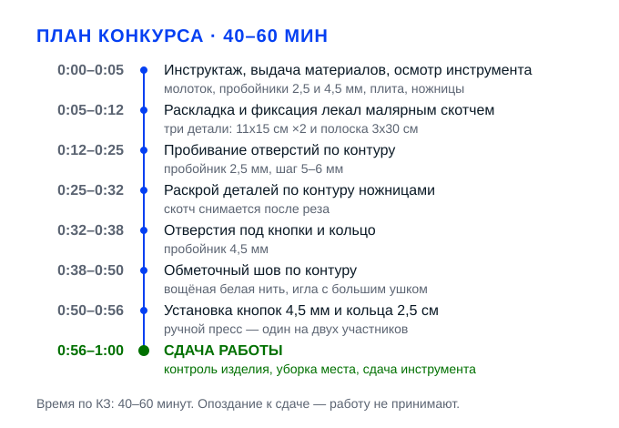
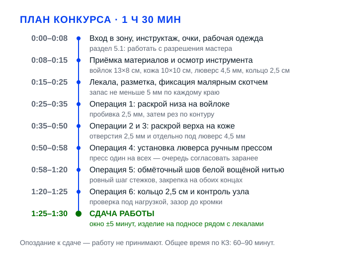
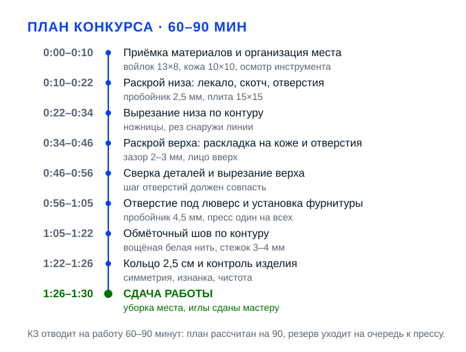

Обувной сервис (ФВ)
Задания ниже — официальные файлы «Абилимпикс» (источник: abilympics-russia.ru), разложенные по категориям. Решения написаны по тексту задания, регламенту и критериям оценки; в них указано, что именно проверяет эксперт.
Школьник
14–16 лет, базовый уровень заданияВ официальном файле категории не разделены отдельными разделами — приводим задание целиком; различия по категориям смотрите в таблице модулей.
Пошаговое решение
Задание школьной категории в этой компетенции короткое по формулировке и плотное по работе: из кожзаменителя нужно изготовить три детали по лекалу и собрать из них ключницу. По конкурсному заданию на всё отводится 40–60 минут, и внутри этого времени укладываются шесть операций: раскрой по лекалу, фиксация лекала малярным скотчем, пробивание отверстий пробойником 2,5 мм, пробитие отверстий под кнопки, соединение деталей обметочным швом вощёной белой нитью и установка кнопок 4,5 мм ручным прессом. Материала выдаётся ровно на изделие — два отреза 11х15 см на половины и полоска 3х30 см на ремень-застёжку, поэтому цена ошибки на раскрое выше, чем кажется: переиграть неудачный рез нечем. Ниже работа разложена на пять задач в том порядке, в котором её и делают на площадке — от осмотра инструмента и до сдачи ключницы эксперту.

Задача 1. Подготовить рабочее место и проверить инструментМодуль А · 40–60 минут · организация и безопасность
До первого удара молотком бокс должен быть готов к ударным работам: инструмент осмотрен, материалы разложены по зонам, плита стоит устойчиво. По КЗ на всю работу школьнику отведено 40–60 минут, и подготовка съедает из них пять-семь. Эта подготовка не потерянное время: именно на ней выясняется, что пробойник тупой, ножницы разболтаны, а кожзаменителя хватает только на одну деталь вместо трёх. Здесь же снимаются риски: молоток, пробойник и ручной пресс в перечне опасностей стоят отдельными строками, и любая небрежность в обращении с ними превращает конкурс в травмпункт.
Действие 1.1. Осмотреть инструмент до старта
Шаг 1.1.1
Берём молоток и осматриваем его целиком: рукоятку по всей длине на трещины и сколы, место посадки головки на рукоятку, сами бойки. По перечню это молоток с деревянной или железной рукояткой, и требование техники безопасности простое: сколов, трещин и заусенцев на бойках и рукоятке быть не должно. Головка сидит плотно, без качания; если она хоть немного ходит на рукоятке, работайте другим молотком, а этот покажите мастеру до старта.
Осмотр инструмента — первое требование раздела охраны труда, и эксперт смотрит, делает ли участник это вообще. Молоток с треснувшей рукояткой при сильном ударе лопается в руке, а слетевшая головка летит в сторону соседнего рабочего места, где люди сидят вплотную. Плюс к безопасности есть и практический смысл: зазубренный боёк оставляет на кожзаменителе вмятины вокруг отверстия, а они видны на лицевой стороне готовой ключницы.
Проверьте тремя движениями: покачайте головку рукой, проведите пальцем по бойку и по рукоятке, постучите один раз по плите. Глухой дребезжащий звук означает, что головка держится неплотно. Всё это проверяется до первого удара, а не в процессе.
Самая частая ошибка — взять первый попавшийся молоток и не смотреть на него совсем: на конкурсе инструмент общий, его берут и возвращают десятки рук. Вторая — заметить скол, промолчать и работать «аккуратно»: заусенец на бойке гарантированно оставит отметину на лицевой стороне первой же пробитой детали.
Эксперт обходит рабочие места в первые минуты и отмечает, осматривался ли инструмент или участник сразу начал бить по материалу. Он также смотрит, перехватывает ли участник молоток ближе к головке.
Шаг 1.1.2
Достаём пробойники и раскладываем их по размеру: по КЗ нужны трубчатый пробойник 2,5 мм для отверстий под шов и 4,5 мм для отверстий под кнопки и кольцо. Смотрим на режущую кромку каждого: она должна быть ровной и замкнутой по кругу, без замятин и без «зализанных» участков. Внутренний канал прочищаем: вытолкнутые кружочки кожзаменителя, застрявшие в трубке, мешают удару и рвут материал.
Пробойник работает как вырубка: тупая или замятая кромка не перерезает материал, а продавливает и рвёт его. Отверстие получается с рваными краями, нить в нём ложится неровно, и обметочный шов выглядит небрежно — а ровность шва в этой работе главное, что видно эксперту. Забитый канал опасен ещё и тем, что пробойник начинает пружинить и удар уходит в сторону.
Проверьте пробойник на обрезке кожзаменителя: один удар по плите — в материале должно остаться круглое отверстие с чистым краем и выпавшим кружочком. Если кружочек остался внутри трубки, прочистите её, прежде чем работать по деталям.
Типичная ошибка — пробить первое отверстие сразу на готовой детали, чтобы «попробовать». Если пробойник тупой, вы получите рваную дыру на видном месте и уже не исправите её. Вторая — взять пробойник не того диаметра: 2,5 мм под кнопку слишком мало, и кнопка не сядет.
Эксперт смотрит, как участник обращается с пробойником: держит вертикально, бьёт по плите, а не по столу, и не путает диаметры. Отдельно отмечает, прочищен ли канал трубки: удары вхолостую он слышит.
Шаг 1.1.3
Проверяем плиту для пробивания: по перечню она 15х15 см, стальная, тяжёлая. Ставим её на ровную часть стола, ближе к себе, но так, чтобы локоть рабочей руки ходил свободно. Под плиту, если стол скользкий, подкладываем влажную тряпку или резиновый коврик. Затем берём ножницы: шарнир не должен болтаться, полотно — ходить мягко, без заеданий, лезвия сомкнуты и не «жуют» материал на кончиках.
Плита — это наковальня, без неё пробивание превращается в порчу стола и материала. Сдвинувшаяся в момент удара плита уводит пробойник, и вместо круглого отверстия получается овальное, с надрывом. Разболтанные ножницы при раскрое уводят линию режущей кромки в сторону от контура лекала на миллиметр-полтора, и деталь выходит перекошенной: по КЗ результат — ключница, собранная из деталей по лекалу, и отклонение от лекала читается как брак раскроя.
Приложите ладонь к плите и толкните её — она не должна ездить. Отрежьте ножницами полоску от обрезка: линия ровная, материал не заминается, кончики лезвий режут, а не рвут. Проверку делайте до начала раскроя: потом переставлять плиту будет некогда.
Ошибка — резать ножницами с ослабленным шарнирным креплением: лезвия разъезжаются, и вместо реза получается разрыв по кромке. Вторая — работать на весу, держа деталь на руке: и плита не участвует, и порезаться проще.
Эксперт проверяет состояние инструмента до старта и отдельно фиксирует, использовалась ли плита по назначению и работали ли ножницы по материалу, а не «как получилось».
Действие 1.2. Разложить материалы по зонам
Шаг 1.2.1
Достаём кожзаменитель и раскладываем его лицевой стороной вверх, чтобы видеть, какая сторона будет наружу. По перечню на участника даётся два отреза 11х15 см и полоска 3х30 см — из первых двух получаются половины ключницы, из полоски ремень-застёжка, который вкладывается между деталями. Раскладываем отрез так, чтобы лекало полностью уместилось на нём с запасом по краям, а не свисало за кромку материала.
Размеры в перечне не случайные: 11х15 см — это площадь под лекало, и если лекало выходит за кромку, деталь получится обрезанной. Кроме того, лицевую сторону нужно определить сразу: у кожзаменителя она с тиснением и блеском, у изнанки — ворсистая основа. Перепутать стороны на раскрое — значит собрать ключницу изнанкой наружу, а это видно на первом же взгляде.
Разложите лекало на отрезе и проверьте зазоры: с каждой стороны должно оставаться не меньше пяти миллиметров. Пробейте взглядом, где у материала лицевая сторона — блестящая, с ровным рисунком. Отход материала должен оставаться целыми полосами, а не крошкой.
Ошибка — резать деталь из середины отреза, оставляя по краям лоскуты: на полоску 3х30 см материала уже не хватит. Вторая — выкроить обе половины из одного отреза, получив одну деталь лицевой стороной наружу, а другую изнанкой.
Эксперт проверяет раскладку до раскроя: видно, планирует ли участник расход материала или режет «как ляжет». Он же проверяет, не режет ли участник деталь из середины отреза, оставляя бесполезные лоскуты по краям.
Шаг 1.2.2
Готовим нить и иглу. Нить по КЗ вощёная, белая: она не пушится, не расслаивается и держит натяжение в обметочном шве. Отрезаем кусок длиной примерно в две с половиной длины будущего шва — для ключницы это порядка 80–90 см, не больше: слишком длинная нить трётся о материал, лохматится и путается узлами. Иглу берём с большим ушком, как указано в перечне, иначе вощёная нить в неё просто не пройдёт.
Длина нити — не мелочь: обметочный шов делается в одно сложение, и нить в 2,5 длины шва даёт запас на закрепки и на узелки, но не образует петель. Вощёная нить выбрана по той же причине, что и в обувном деле вообще: воск защищает волокно от перетирания в отверстии, и шов не распускается через месяц носки.
Проверьте на ощупь: нить скользит между пальцами с лёгким сопротивлением, не липнет и не расслаивается на отдельные волокна. Вдетая в иглу нить проходит через отверстие пробойника 2,5 мм свободно, с запасом.
Типичная ошибка — отрезать нить «на всю катушку», пожалев материал: длинная нить путается, и к середине шва на ней появляются узлы, которые приходится вытаскивать. Вторая — взять обычную швейную нить вместо вощёной: она рвётся в натянутом шве и не держит форму среза.
Эксперт смотрит на нить в работе: вощёная белая, без узлов, натянута ровно, не провисает между отверстиями. Отдельно он смотрит на длину отрезанной нити: слишком длинная выдаёт неопытность сразу.
Шаг 1.2.3
Раскладываем фурнитуру и вспомогательные материалы по отдельным зонам: кнопки 4,5 мм — в одну плошку, кольцо для брелка 2,5 см — рядом, малярный скотч — с краю стола, чтобы его можно было оторвать одной рукой. Кнопок по перечню одна штука на участника, кольцо одно, скотч общий на пятерых, поэтому свой кусок скотча лучше отмотать заранее и наклеить на край стола — иначе придётся ждать соседа.
Мелкая фурнитура на конкурсе теряется чаще, чем портится материал: кнопка 4,5 мм отлетает от стола и находится через десять минут под плитой. Второй смысл раскладки — темп: когда всё под рукой, руки не делают лишних движений, а времени по КЗ всего 40–60 минут на все шесть операций. Скотч, отмотанный заранее, экономит минуту-две именно в тот момент, когда они нужнее всего.
Проверьте: на столе нет ни одной мелочи, которую пришлось бы искать. Кнопка лежит на видном месте, кольцо не скатилось за плиту, полоска скотча наклеена на край стола липкой стороной вверх. К концу подготовки фурнитура пересчитывается поштучно — так видно, что ничего не потеряно.
Ошибка — держать кнопки и кольцо в общей куче с обрезками: их приходится выуживать, а обрезки липнут к липучке кнопки. Вторая — отмотать весь рулон скотча на свою деталь: скотча пять штук на всех, и соседу может не достаться.
Эксперт оценивает организацию рабочего места целиком: разложены ли материалы по зонам и не тратит ли участник время на поиски. Эксперт отмечает и то, как разложены мелочи: кнопка и кольцо должны лежать отдельно от обрезков.
Действие 1.3. Организовать безопасные ударные работы
Шаг 1.3.1
Организуем зону пробивания так, чтобы в радиусе тридцати сантиметров от плиты не было ничьих рук и ничего лишнего. Плиту ставим по центру своей рабочей поверхности, деталь кладём на неё плашмя и придерживаем левой рукой за участок не ближе двух сантиметров от точки удара. Пробойник ставим строго вертикально, придерживая его пальцами за корпус сверху, а не за режущую кромку.
В перечне опасностей работа с молотком и пробойником выделена отдельно, и это не формальность: пробойник — трубка с острой кромкой, при косом ударе он соскакивает и уходит в сторону, а молоток после отскока попадает по пальцам, которые держат деталь. Значит, задача не «бить осторожно», а развести руки и материал так, чтобы траектория молотка не пересекалась с пальцами вообще.
Проверьте исходное положение: левая рука на детали, но не под пробойником, правая с молотком поднята над плитой, вокруг плиты пусто. Толкните плиту — она не двигается. Ещё один признак: деталь лежит на плите плашмя, и её край не свисает за плиту.
Ошибка — держать деталь прямо под пробойником, «чтобы он не съехал». Вторая — пробивать на весу или на коленях, когда плита занята соседом: отверстие получается рваным, а удар уходит в незащищённое место.
Эксперт оценивает и результат, и безопасность: за небрежность в ударных работах балл снимают независимо от качества изделия. Он же фиксирует, есть ли вокруг плиты свободное место: теснота на площадке — частая причина травм.
Шаг 1.3.2
Молоток берём за конец рукоятки, а не у самой головки: так удар идёт от кисти и предплечья, а не «прихлопыванием». Бьём коротко, один раз, строго по торцу пробойника, корпус держим прямо, лицо отводим в сторону от линии удара. Если по правилам площадки требуются защитные очки — надеваем их до первого удара, а не после того, как в глаз попал кружочек кожзаменителя.
Хват у конца рукоятки даёт точный удар без лишней силы: пробойник 2,5 мм пробивает кожзаменитель с одного касания, и второй удар нужен только для подчистки. Работа «от плеча» с большим размахом опасна и бесполезна — она уводит пробойник с вертикали и расширяет отверстие. Отведённое в сторону лицо страхует от того, что из-под пробойника вылетает мелкая стружка материала.
Проверьте первый удар на обрезке: отверстие круглое, пробойник остался вертикальным, кружочек вышел с обратной стороны. Если пришлось бить дважды — удар был слабым или косым. Проверьте и положение молотка: после удара он не должен уходить в сторону.
Ошибка — бить с размаха, «чтобы наверняка»: материал под пробойником сминается, край отверстия получается волнистым. Вторая — придерживать пробойник пальцами у самой кромки: при отскоке молоток попадает по костяшкам.
Эксперт наблюдает за характером удара: короткий, точный, вертикальный — признак навыка; размашистый и повторный — признак спешки. Эксперт смотрит и на то, отводит ли участник лицо и держит ли свободную руку вне зоны удара.
Шаг 1.3.3
Отдельно договариваемся о ручном прессе: по перечню он один на двух участников, то есть на площадке это дефицитный инструмент. Заранее выясняем, где он стоит, кто второй участник и в каком порядке вы будете к нему подходить. Пальцы в зону сжатия не подставляем никогда: кнопка 4,5 мм ставится между матрицей и пуансоном, и пресс сжимает их с усилием, достаточным для деформации металла.
Кнопочный пресс в школьной категории — самая вероятная точка конфликта и самая вероятная травма: двое одновременно тянутся к одному инструменту, и один придерживает кнопку пальцем в момент, когда второй опускает ручку. Договорённость об очерёдности, сделанная заранее, снимает и риск, и потерю времени: по КЗ на установку кнопок отводятся последние минуты работы.
Проверьте до старта: вы знаете, где пресс, какая насадка стоит на 4,5 мм, и договорились с соседом, кто идёт первым. Ручка пресса ходит плавно, без заеданий и без люфта. Отдельно уточните, кто отвечает за насадку 4,5 мм: её часто снимают и не возвращают на место.
Ошибка — подойти к прессу в самом конце, когда к нему уже стоит очередь, и начать торопиться. Вторая — «помочь» себе пальцем, придерживая кнопку в матрице: именно так и получают прищемлённые ногти. Третья — сжимать ручку рывком, роняя деталь.
Эксперт смотрит на работу с прессом отдельно: подготовлен ли инструмент, соблюдается ли очерёдность, нет ли пальцев в рабочей зоне. Он отмечает, подходит ли участник к прессу подготовленным: с разложенной кнопкой и деталью в руках.
Задача 2. Раскроить три детали ключницы по лекалуМодуль А · раскрой · 15–20 минут
Раскрой — самый ответственный этап, потому что ошибка здесь уже не исправляется: материала 11х15 см на две половины и 3х30 см на полоску, лишнего отреза не выдадут. По КЗ порядок жёсткий: сначала лекало прикладывается к кожзаменителю и фиксируется малярным скотчем, потом пробиваются отверстия в намеченных местах, и только после этого деталь вырезается по контуру. Такая последовательность не случайна: отверстия, пробитые по закреплённому лекалу, встают точно по разметке, и обметочный шов потом ложится ровно, без перекосов и посадки.
Действие 2.1. Приложить и зафиксировать лекало
Шаг 2.1.1
Кладём лекало на кожзаменитель лицевой стороной материала вверх, так, чтобы лекало полностью поместилось на отрезе и ни один его край не выходил за кромку. Следим за направлением деталей: если лекало несимметричное, его нельзя переворачивать — две половины ключницы ставятся в одном направлении. Выравниваем лекало по кромке отреза так, чтобы отход материала оставался с одной стороны, а не размазывался тонкими полосками по всему куску.
По КЗ первая операция звучит буквально: «прикладываем лекало к куску кожзаменителя так, чтобы оно полностью поместилось на нём». Это и есть требование к раскладке: деталь обязана выйти целиком, по контуру лекала, без срезанных участков. Неверное направление даёт перекошенную ключницу, у которой половины не совпадают по кнопкам, а это видно сразу.
Лекало лежит целиком на материале, отступ от кромок не меньше пяти миллиметров, направление деталей одинаковое. Проверьте, что вы видите все метки отверстий на лекале и они не срезаны краем отреза. Проверка занимает полминуты и делается до фиксации скотчем.
Ошибка — сдвинуть лекало к самому краю, чтобы сэкономить материал: крайняя деталь выходит без припуска, и при пробивании отверстия у кромки материал вырывается. Вторая — перевернуть несимметричное лекало на второй детали: половины получаются зеркальными, но с разной геометрией посадки.
Эксперт смотрит на раскладку до фиксации: помещается ли лекало целиком и одинаково ли оно ориентировано на обеих деталях. Он же смотрит на отступ от кромки отреза: слишком близкий край — признак спешки при раскладке.
Шаг 2.1.2
Фиксируем лекало малярным скотчем: отрываем две полосы длиной восемь-десять сантиметров и приклеиваем их поперёк лекала по противоположным краям, заходя одним концом на лекало, другим — на материал. Клеим не на лицевую сторону будущего изделия в видном месте, а так, чтобы полоса перекрывала край лекала и участок отхода. Приглаживаем скотч пальцем по всей длине.
Скотч в этой технологии — не крепёж «на всякий случай», а единственное, что удерживает лекало от сдвига при пробивании: каждый удар молотком по пробойнику толкает материал, и незакреплённое лекало уезжает на два-три миллиметра уже к пятому отверстию. Дальше отверстия встают вразнобой и шов идёт волной. Малярный скотч выбран потому, что он снимается без следа и не оставляет клеевой полосы на кожзаменителе — в отличие от обычного канцелярского.
Проверьте ладонью: прижмите лекало и попробуйте сдвинуть его вбок — оно стоит намертво, скотч не отклеивается. Клеевых полос на лицевой стороне в пределах контура детали нет. Проверьте и то, что скотч не перекрывает метки отверстий: иначе пробивать придётся вслепую.
Ошибка — приклеить скотч только с одной стороны: лекало поворачивается вокруг этой полосы как на оси, и отверстия уходят по дуге. Вторая — заклеить скотчем всю поверхность, включая лицевую сторону готовой детали: потом на кожзаменителе остаётся липкий след.
Эксперт проверяет фиксацию рукой: если лекало шевелится, это видно и на готовом шве. Он проверяет фиксацию до первого удара и потом ещё раз, когда деталь переворачивают: отклеившийся скотч виден по сдвинутой разметке.
Шаг 2.1.3
Перед первым ударом ещё раз сверяем: контур лекала целиком на материале, все метки отверстий видны, лицевая сторона смотрит вверх. Отмечаем для себя порядок пробивания — например, начинаем от верхнего угла и идём по контуру по часовой стрелке, а не прыгаем с места на место. Одну метку на лекале стоит обвести тонкой линией карандаша: по ней потом легко проверить, не сдвинулось ли лекало к концу работы.
Порядок пробивания по контуру от одного угла — это приём, который сохраняет геометрию: материал деформируется вокруг каждого отверстия, и если бить вразнобой, деталь «ведёт». Обведённая контрольная метка даёт простую проверку: пока отверстия совпадают с ней по всей длине контура, лекало не сдвинулось, и шов ляжет ровно.
Обведённая метка совпадает с лекалом после каждого пятого отверстия. Отверстия идут с одинаковым шагом, контур детали не деформирован, углы материала не задраны вверх. Если метка «уехала», лекало перекашивается, и работу лучше остановить и переклеить скотч.
Ошибка — начать пробивать с середины длинной стороны, а потом возвращаться к углам: к концу работы деталь уходит «винтом», и последние отверстия приходится пробивать заново рядом со старыми. Третья — пробивать, не глядя на лекало, а по памяти: шаг сбивается уже на третьем отверстии.
Эксперт наблюдает за последовательностью работы: ровный шаг по контуру виден по готовой детали без всяких измерений. Он отмечает и то, обводит ли участник контрольную метку: по ней потом видно, контролировал ли он сдвиг.
Действие 2.2. Пробить отверстия по контуру
Шаг 2.2.1
Берём пробойник 2,5 мм, ставим его строго вертикально на первую метку лекала и наносим один короткий удар по торцу. Держим пробойник за корпус сверху, прижимая к материалу, чтобы он не сдвинулся до удара. После каждого отверстия проверяем, что кружочек вышел, и переносим пробойник на следующую метку. Разметку не переносим на материал: пробиваем прямо через лекало, как указано в КЗ.
Пробивание через лекало — это и есть смысл всей операции: метки на лекале задают точное расстояние от края и равный шаг, и любая попытка «наметить глазом» даёт разнобой. Диаметр 2,5 мм выбран по размеру иглы и нити: в такое отверстие вощёная нить проходит в одно сложение свободно, но не болтается, поэтому стежок лежит плотно и срез остаётся закрытым.
Отверстие круглое, ровное, диаметром с пробойник, кружочек материала вышел с обратной стороны. Расстояние от отверстия до края лекала одинаковое по всему контуру — проверьте на трёх-четырёх отверстиях подряд.
Ошибка — пробивать, не придерживая пробойник: он «прыгает» по гладкому кожзаменителю, и вместо одного отверстия получается два рядом. Вторая — бить дважды по одному месту: второе отверстие смещается на полмиллиметра, и получается овальная щель, которую шов не закроет.
Эксперт смотрит на отверстия в первых рядах: одинаковый шаг и одинаковое расстояние до края — главный признак аккуратного раскроя. Отдельно он смотрит на положение пробойника: вертикально или с наклоном наносится удар.
Шаг 2.2.2
Идём по контуру с равным шагом: расстояние между центрами соседних отверстий около пяти-шести миллиметров, отступ от линии среза — четыре-пять миллиметров. Такой отступ не даёт материалу вырваться по кромке, когда шов натянется. На скруглениях и углах шаг не увеличиваем, а если отверстие приходится на сам угол, ставим его чуть внутрь, чтобы срез угла остался целым.
Шаг и отступ — то, что определяет прочность и вид шва: слишком близко к краю — кромка рвётся при натяжении нити, слишком далеко — между швом и срезом остаётся полоса материала, которая задирается и выглядит как необработанный край. Ровный шаг важен и эстетически: обметочный шов — это то, что эксперт видит на лицевой стороне изделия первым.
Пройдите контур взглядом вдоль линии: отверстия стоят на одной воображаемой линии, шаг не «пляшет», на углах нет сдвоенных отверстий. Проверьте линейкой на любых пяти подряд — разброс не должен превышать миллиметра.
Ошибка — пробивать «через один», чтобы быстрее: шов получается редким, срез ключницы открыт, нитки провисают. Вторая — начать сгущать отверстия на углах и разряжать на прямых: шов выглядит неравномерным и стягивает деталь на скруглениях.
Эксперт оценивает равномерность: отверстия с одинаковым шагом — основа ровного обметочного шва. Он просматривает контур целиком и отмечает участки, где шаг сбился: обычно это углы, где участник торопится.
Шаг 2.2.3
Особое внимание — отверстиям у края и на тонких участках. Если метка лекала стоит ближе четырёх миллиметров к срезу, сдвигаем пробойник на миллиметр внутрь, а не бьём по метке вслепую: тонкая перемычка между отверстием и краем — самое слабое место изделия. Пробивая вторую половину ключницы и полоску, следим, чтобы отверстия стояли симметрично относительно осевой линии — иначе при сборке детали не совпадут.
Кожзаменитель — материал с тканевой основой: у самого края он не имеет запаса прочности, и перемычка в полтора миллиметра рвётся при первом же открывании кнопки. Симметрия отверстий на двух половинах критична, потому что они прошиваются вместе: несовпадение на миллиметр превращается в перекос всего изделия, и ключница закрывается с натягом.
Проверьте зеркально: приложите детали друг к другу отверстиями — они должны совпасть все, без «ступеньки» на одном конце. Перемычка у края не продавлена, материал вокруг отверстия не побелел. Совпадение проверяйте до сшивания, пока детали можно разложить и перепробить отверстие.
Ошибка — пробить отверстие в сантиметре от края на одной детали и в пяти миллиметрах на другой: при сшивании деталь перекашивается, и это уже не исправить распарыванием. Вторая — пробивать у самого среза, «чтобы шов был ближе к краю».
Эксперт проверяет совпадение отверстий на двух половинах до сшивания: это самый быстрый способ увидеть перекос раскроя. Он складывает детали так, как они будут сшиваться, и смотрит на просвет: несовпадение отверстий видно сразу.
Шаг 2.2.4
Закончив пробивание, проходим по всем меткам лекала и сверяем: ни одна метка не пропущена, ни одного лишнего отверстия не появилось. Если отверстие вышло с надрывом, не расширяем его повторным ударом и не подрезаем ножницами — надрыв аккуратно приглаживаем с изнанки, а нить в это отверстие прокладываем так, чтобы стежок перекрыл надрыв. Все проверки делайте до того, как детали будут сложены в пакет.
Контроль после пробивания занимает минуту и экономит всю сборку: пропущенное отверстие обнаруживается уже в процессе шва, когда детали сложены и скреплены, и тогда приходится либо пропускать стежок, либо разбирать половину шва. Повторный удар по тому же месту — классический способ превратить круглое отверстие в рваную щель на лицевой стороне.
Пройдите пальцем по контуру: все метки пробиты, лишних отверстий нет, края отверстий чистые. С изнанки не торчат волокна основы — если торчат, их подрезают ножницами вровень, а не выдёргивают. Проверяйте деталь на просвет: сквозь отверстия должен проходить свет ровным рядом.
Ошибка — «подровнять» отверстие ножницами: получается разрез, который при натяжении нити расползается. Вторая — оставить пропуск и надеяться, что его не заметят: при сшивании в этом месте образуется длинный стежок.
Эксперт может пересчитать отверстия по контуру: их количество и шаг показывают, работал ли участник по лекалу. Его интересует и то, сколько отверстий пробито: количество должно совпадать на обеих половинах до единицы.
Действие 2.3. Вырезать деталь по контуру
Шаг 2.3.1
Режем по контуру лекала, не снимая скотч: ножницы ведём по самой линии, средней частью лезвий, а не кончиками, длинными движениями от себя. Деталь придерживаем левой рукой и поворачиваем её под ножницы, а не разворачиваем ножницы вокруг детали. Линия реза идёт снаружи от отверстий, оставляя перемычку четыре-пять миллиметров. Скотч при этом остаётся на месте: снимать его будете только после того, как контур вырезан целиком.
Скотч держит лекало на месте — сняв его до раскроя, вы теряете линию, по которой режете. Рез средней частью лезвий даёт ровную кромку: кончики смыкаются не полностью и «жуют» кожзаменитель, оставляя зазубрины, а у самого шарнира лезвия разводятся и уводят линию. Поворот детали вместо ножниц сохраняет вертикальное положение кисти и ровный рез на скруглениях.
Проверьте кромку: она ровная, без «лесенки» и без зазубрин, линия реза идёт параллельно контуру лекала. Приложите деталь к лекалу — расхождение по контуру не больше миллиметра. Особенно смотрите на длинные прямые участки: там увод линии заметнее всего.
Ошибка — резать кончиками ножниц, «обводя» скругления: на кромке появляются зазубрины, и обметочный шов ложится по ним волнистой линией. Вторая — сдвинуть лекало при резке, потому что скотч сняли раньше времени.
Эксперт смотрит на кромку детали до сшивания: ровный рез виден и на готовом изделии по линии шва. Он же проверяет, не срезан ли контур внутрь: деталь меньше лекала уже не даст совпадения половин.
Шаг 2.3.2
На углах и скруглениях переходим на короткие движения: два-три небольших среза вместо одного длинного, причём ножницы не закрываем до конца, чтобы не «откусить» угол. На внутренних скруглениях сначала делаем небольшой надрез в вершине, а потом вырезаем дугу двумя движениями от надреза в стороны. Если материал «не идёт», не тяните его: подведите ножницы ближе к шарниру и режьте снова, иначе кромка порвётся.
Длинный рез через угол почти всегда уводит линию внутрь, и угол получается срезанным — на ключнице это заметно, потому что углы у неё рабочие, их берут в руки. Надрез в вершине внутреннего скругления снимает напряжение материала: без него ножницы мнут и тянут кожзаменитель, и дуга выходит с надрывом.
Проверьте углы: они повторяют форму лекала, вершина не срезана, внутренние скругления без надрывов и заломов материала. Приложите лекало — углы совпадают. На скруглениях проведите пальцем по кромке: она должна быть гладкой, без «ступенек» от двух срезов.
Ошибка — «дожать» угол одним движением и срезать вершину: деталь укорачивается, и при сшивании половины не сходятся по длине. Вторая — резать внутреннее скругление без надреза, разрывая материал ножницами.
Эксперт обращает внимание на углы: именно там видно, аккуратно ли участник работает с ножницами. Отдельно он проверяет кромку на ощупь: зазубрины от кончиков ножниц чувствуются пальцем.
Шаг 2.3.3
Снимаем скотч, аккуратно поддевая его за угол и оттягивая вдоль клеевой полосы, а не вверх — так на кожзаменителе не остаётся следа. Снимаем лекало и проверяем деталь: отверстия на равном расстоянии от кромки, контур целый, лицевая сторона чистая, без клеевых полос и вмятин от пальцев. Если на лицевой стороне осталась липкая полоса от скотча, её снимают тёплым пальцем, а не растворителем.
Проверка после снятия лекала — единственный момент, когда видно всю деталь целиком: пока лекало лежит сверху, дефекты кромки скрыты. Скотч, снятый рывком вверх, тянет за собой волокна основы, и на лицевой стороне остаётся матовая полоса, которая не убирается ничем — а лицевая сторона ключницы вся на виду.
Деталь лежит ровно, не «лодочкой»: если положить её на стол, все края касаются поверхности. Отверстия просматриваются на свет ровным рядом. На лицевой стороне нет ни клеевых следов, ни вмятин. Проверьте и изнанку: волокна основы не должны торчать по кромке.
Ошибка — сдёрнуть скотч одним движением: остаётся клеевая полоса и задиры на основе. Вторая — не проверить деталь после снятия лекала и обнаружить кривой контур уже на сшивании. Третья — оставить на детали карандашные метки: на блестящей поверхности они видны.
Эксперт проверяет лицевую сторону на просвет и на ощупь: клеевые следы и вмятины снимают балл за аккуратность. Он поворачивает деталь к свету: клеевые полосы и вмятины от ногтей видны только под углом.
Действие 2.4. Выкроить вторую половину и полоску
Шаг 2.4.1
Повторяем весь цикл на втором отрезе 11х15 см: прикладываем лекало в том же направлении, что и на первой детали, фиксируем скотчем, пробиваем отверстия по меткам, вырезаем по контуру. Второй раз работаем быстрее — движения уже отработаны, но не сокращаем проверки: именно на второй детали обычно и происходит сдвиг лекала, потому что рука уже «знает» и не смотрит на метки.
Две половины ключницы работают как пара: они сшиваются вместе и застёгиваются на кнопки, поэтому шаг отверстий и положение контрольных меток должны совпасть. Опыт показывает, что вторая деталь делается на минуту быстрее и на миллиметр кривее — если не контролировать её так же, как первую.
Приложите готовые половины друг к другу: контуры совпадают, отверстия совпадают все до одного, ширина одинаковая по всей длине. Разложите их на столе — они должны быть зеркально одинаковыми. Проверяйте половины сразу, пока лекало ещё под рукой: потом сравнивать будет не с чем.
Ошибка — выкроить вторую деталь «по первой», обводя её карандашом вместо лекала: карандашная линия шире линии реза, и деталь выходит на миллиметр-полтора больше. Вторая — поторопиться и не пробить часть отверстий.
Эксперт сравнивает половины между собой: одинаковый шаг отверстий и одинаковая ширина — обязательное условие качественной сборки. Он сравнивает не только контур, но и шаг отверстий по длинной стороне: там разница видна раньше всего.
Шаг 2.4.2
Берём полоску 3х30 см — это ремень-застёжка, который потом вкладывается между деталями. Размечаем длину по лекалу или по линейке: тридцать сантиметров от кромки, ширина три сантиметра, кромки режем по линейке длинными движениями, придерживая материал всей ладонью. Торцы полоски делаем ровными, под прямым углом, без «ступеньки». Длинную полоску удобнее резать, положив её на плиту или на стол, а не держа на весу.
Полоска — самая длинная деталь изделия, и её кривизна сразу бросается в глаза: если кромка ушла хотя бы на два миллиметра, полоска ложится дугой, и ключница при застёгивании перекашивается. Ровные торцы нужны потому, что полоска зажимается между половинами и прошивается вместе с ними — косой торец торчит из шва.
Положите полоску на стол: она лежит прямой линией без волны. Ширина одинаковая по всей длине — проверьте в трёх местах. Торцы ровные, под углом 90 градусов к кромке. Положите полоску на ребро — она не должна выгибаться дугой.
Ошибка — резать полоску «на глаз», без разметки: одна кромка уходит в сторону, и полоска получается клином. Вторая — резать, держа материал на весу: кромка идёт волной. Третья — оставить на торце заусенец из волокон: он вылезет в шов и будет торчать.
Эксперт прикладывает полоску к линейке или просто смотрит на просвет: кривизна видна сразу. Он же оценивает, насколько ровно лежат кромки: полоска с волной не встанет в шов без перекоса.
Шаг 2.4.3
Раскладываем три готовые детали и помечаем их, чтобы не путать при сборке: на изнанке каждой половины ставим маленькую точку карандашом в одном и том же углу — например, в левом верхнем. Полоску укладываем между половинами и проверяем, что её длина соответствует расстоянию, на которое она вкладывается, а отверстия на её концах совпадают с отверстиями половин.
Пометка на изнанке — приём против самой обидной ошибки сборки: половины внешне почти одинаковы, и перепутать верх с низом или лицо с изнанкой очень легко, а распустить обметочный шов без следа невозможно. Сверка полоски с половинами до сшивания показывает, хватает ли её длины: обнаружить нехватку на середине шва уже нельзя.
Все три детали лежат лицевой стороной вверх, пометки на изнанке в одном углу, отверстия на концах полоски совпадают с отверстиями половин. Длина полоски позволяет ей лечь между деталями без натяга. Сверку делайте до первого стежка: потом разбирать пакет нельзя.
Ошибка — не помечать детали и начать сшивать половину, перевернув её изнанкой наружу: переделка занимает больше времени, чем весь шов. Вторая — отрезать полоску короче, чем нужно, «чтобы не тратить материал».
Эксперт смотрит на подготовку к сборке: разложены ли детали в том порядке, в котором будут сшиваться. Он смотрит на раскладку деталей перед сшиванием: если детали лежат вперемешку, порядка в работе нет.
Задача 3. Подготовить отверстия под кнопки и кольцоМодуль А · фурнитура · 5–7 минут
По КЗ школьник пробивает отверстие для кнопок отдельным пробойником и ставит кнопки 4,5 мм ручным прессом; кольцо для брелка 2,5 см вставляется в своё отверстие. Ошибка на этом этапе необратима: если отверстие под кнопку продавлено не там или больше нужного, кнопка не зафиксируется и ключница не будет закрываться — а материал вокруг отверстия уже испорчен. Поэтому сначала разметка и примерка, потом удар, и только после этого — установка.
Действие 3.1. Разметить и пробить отверстия под кнопки
Шаг 3.1.1
Находим на лекале метки под кнопки — они стоят на полоске и на одной из половин, парно, чтобы кнопка застёгивалась при складывании. Переносим эти точки на детали: складываем половину с полоской так, как они будут лежать в собранном изделии, и накалываем места тонким шилом или остриём карандаша через отверстие в лекале. Проверяем, что при складывании метки двух деталей совпадают.
Кнопка работает только при точном совпадении двух своих половин: верхняя часть стоит на одной детали, ответная — на другой, и расхождение больше миллиметра означает, что ключница не застегнётся или будет расстёгиваться сама. Пробить отверстие не там, где нужно, — значит потерять деталь: заделать лишнюю дыру в кожзаменителе нечем.
Сложите детали и посмотрите на проколы на свет: они должны совпадать один в один. Разметка стоит на одинаковом расстоянии от кромки на обеих деталях — проверьте это до удара пробойником. Если детали не складываются ровно, разметку переносят заново, а не подгоняют на глаз.
Ошибка — размечать каждую деталь отдельно, «на глаз»: половинки кнопки расходятся, и изделие не закрывается. Вторая — ставить метку слишком близко к краю, где материал не держит кнопку. Третья — ставить кнопку слишком далеко от края: полоска не достанет до ответной части.
Эксперт проверяет разметку до пробивания: совпадение меток — условие работоспособности всей ключницы. Он смотрит, складывает ли участник детали перед разметкой: без этого половинки кнопки почти всегда расходятся.
Шаг 3.1.2
Меняем пробойник: вместо 2,5 мм ставим 4,5 мм — под кнопку нужен диаметр, равный ножке кнопки, иначе она не войдёт или разорвёт материал. Кладём деталь на плиту, ставим пробойник на размеченную точку вертикально и наносим один уверенный удар. Отверстия под кнопки пробиваем на всех деталях, где они предусмотрены лекалом: обычно два на полоске и два на половине.
Диаметр отверстия под кнопку — жёсткое соответствие: 4,5 мм указаны и для пробойника, и для самих кнопок, и это не случайное совпадение, а рассчитанная посадка. Отверстие меньше — ножка кнопки не пройдёт, и вы начнёте расслаивать материал; больше — кнопка будет болтаться и вырвется при первом натяжении.
Отверстие круглое, чистое, диаметром с ножку кнопки. Приложите кнопку: она входит в отверстие без усилия, но не проваливается насквозь. Края отверстия не побелели от натяжения. Проверьте на всех кнопочных отверстиях: диаметр должен быть одинаковым.
Ошибка — пробить кнопочное отверстие тем же пробойником 2,5 мм, «потом расширю»: расширять придётся ножницами, а разрез под нагрузкой расползается. Вторая — бить дважды и получить овальное отверстие, в котором кнопка сидит косо.
Эксперт сверяет диаметр: несоответствие отверстия и кнопки — самая частая причина, по которой изделие не застёгивается. Он измеряет отверстие или прикладывает кнопку: расхождение в полмиллиметра уже заметно.
Шаг 3.1.3
До установки делаем примерку без пресса: вставляем верхнюю часть кнопки в отверстие одной детали, ответную — в отверстие другой, складываем изделие так, как оно будет носиться, и смотрим, совпадают ли части. Если есть расхождение, отмечаем, в какую сторону и на сколько нужно сдвинуть отверстие, и пробиваем новое рядом — но только на той детали, где ошибка не испортит лицевую сторону.
Примерка до запрессовки — последняя возможность исправить геометрию малой кровью: кнопка ещё не установлена, отверстие можно переставить на два-три миллиметра, и след от старого закроется швом или окажется с изнанки. После запрессовки кнопку уже не снять без повреждения материала, и перекос остаётся навсегда.
Сложите изделие: половинки кнопки встают друг напротив друга, зазор по контуру ключницы одинаковый по всей длине, полоска не перекашивает половины. Кнопка входит в ответную часть без бокового смещения.
Ошибка — пропустить примерку и сразу запрессовать: перекос обнаруживается на готовом изделии, когда исправлять уже нечем. Вторая — переставлять отверстие на уже запрессованной детали. Третья — пробить новое отверстие рядом со старым и не закрыть старое: дырка остаётся на виду.
Эксперт смотрит, примеряет ли участник изделие до установки фурнитуры: на готовой ключнице это уже не видно. Он отмечает, складывается ли изделие до запрессовки: по этому видно, думает ли участник о результате.
Действие 3.2. Пробить отверстие под кольцо для ключей
Шаг 3.2.1
Отмечаем место под кольцо для брелка — по лекалу оно стоит на краю детали, обычно в верхней части, симметрично относительно оси. Отступ от края — не меньше пяти миллиметров, чтобы перемычка выдержала вес связки ключей. Проверяем, что отверстие не попадает на линию шва и не пересекается с отверстиями под кнопки. Отверстие под кольцо размечаем до того, как сшиты детали: на готовом изделии исправлять нечем.
Кольцо 2,5 см — это точка, на которую приходится вся нагрузка при носке: связка ключей висит на нём и постоянно тянет материал. Отверстие слишком близко к краю прорезает кромку за неделю, а отверстие, попавшее на шов, перетирает нить. Поэтому место под кольцо выбирается по лекалу и проверяется на пересечения до удара.
Проверьте расстояния: от отверстия до кромки не меньше пяти миллиметров, до ближайшего шовного отверстия — не меньше трёх, до кнопки — не меньше десяти. Метка совпадает с лекалом при наложении. Расстояния проверяйте линейкой, а не на глаз: пять миллиметров на глаз кажутся восемью.
Ошибка — ставить кольцо у самого среза, «чтобы красивее»: перемычка рвётся, и кольцо вылетает вместе с куском материала. Вторая — поставить отверстие на шов: нить в этом месте перетирается о металл. Третья — поставить кольцо на линии сгиба: материал там натянут и рвётся.
Эксперт проверяет место под кольцо на прочность: смотрит и на перемычку, и на то, не попало ли отверстие на линию шва. Он проверяет место кольца и на глаз, и на ощупь: перемычка должна ощущаться плотной.
Шаг 3.2.2
Пробиваем отверстие под кольцо тем же пробойником 4,5 мм: деталь на плите, пробойник вертикально, один короткий удар. После удара убираем кружочек, осматриваем края и, если с изнанки торчат волокна основы, аккуратно подрезаем их ножницами вровень с поверхностью. Замины вокруг отверстия разглаживаем ногтем или тупым предметом. Отверстие пробивайте до установки кнопок: пресс рядом, и случайно задеть установленную кнопку легко.
Отверстие под кольцо должно быть чистым: металл кольца трётся о кромку при каждом движении, и торчащие волокна быстро превращаются в «бороду», которая видна на лицевой стороне. Подрезать волокна нужно именно ножницами, а не выдёргивать: выдернутое волокно оставляет углубление в основе и ослабляет материал вокруг отверстия.
Край отверстия ровный по всему кругу, волокон нет, заминов нет, диаметр соответствует кольцу. Кольцо, вставленное на пробу, сидит в отверстии без перекоса. Осмотрите отверстие с изнанки при боковом свете: волокна основы видны как светлые усики.
Ошибка — оставить рваный край и «закрыть» его кольцом: под кольцом грязь и волокна всё равно видны. Вторая — расширять отверстие повторным ударом, если кольцо не входит: диаметр подобран верно, значит дело в толщине кольца, и его разводят, а не материал.
Эксперт осматривает отверстие с изнанки: там видно, обработаны ли края или материал просто пробит. Он смотрит на отверстие изнутри изделия: там чистота края видна лучше, чем с лицевой стороны.
Шаг 3.2.3
Проверяем посадку кольца до окончательной сборки: разводим разъём кольца в стороны, продеваем его в отверстие, сводим концы обратно до плотного стыка. Кольцо должно свободно проворачиваться в отверстии и не задевать шов и кнопку при повороте на полный оборот. Если кольцо не входит, проверьте, не погнут ли разъём: его правят плоскогубцами, а не расширением отверстия.
Кольцо 2,5 см входит в комплект по перечню, и его посадка — часть работоспособности изделия: зажатое кольцо не проворачивается, и ключница висит криво; слишком свободное отверстие даёт люфт, и кольцо болтается, разбивая кромку. Проворот на полный оборот показывает, не задевает ли кольцо за шов — это важно, потому что шов ещё не готов и его геометрию можно учесть.
Кольцо проворачивается без усилия, стык концов плотный, ничего не задевает. Потяните кольцо вверх с небольшим усилием — материал не тянется и не деформируется. Проверьте и то, что кольцо не цепляет кнопку при повороте: иначе оно будет заедать при носке.
Ошибка — свести концы кольца с зазором: он цепляется за ткань кармана и расходится. Вторая — вставить кольцо так, что оно упирается в шов и не поворачивается. Третья — вставить кольцо до сшивания и зашить его внутрь шва: распускать шов придётся ножницами.
Эксперт проверяет кольцо на проворот: рабочая фурнитура должна двигаться свободно, а не быть зажатой. Он проверяет кольцо на проворот и натяжение: зажатое кольцо — такой же брак, как вылетающее.
Задача 4. Скрепить детали обметочным швомМодуль Б · сборка · 12–15 минут
Обметочный шов — главная операция всей работы и то, по чему изделие оценивают в первую очередь: он одновременно закрывает срез материала и соединяет детали. По КЗ шов выполняется иголкой с вощёной белой нитью, а полоска вкладывается между двух деталей и прошивается вместе с ними. Ровный шаг, одинаковое натяжение и аккуратная закрепка в начале и в конце — три вещи, которые отличают работу школьника, понимающего технологию, от работы «как получилось».
Действие 4.1. Подготовить нить и иглу к шитью
Шаг 4.1.1
Отрезаем вощёную белую нить длиной около 80–90 сантиметров — это примерно две с половиной длины шва по контуру ключницы плюс запас на закрепки. Режем нить острыми ножницами под углом, а не откусываем: косой срез легче продеть в ушко и меньше лохматится. Второй конец сразу оплавлять не нужно: нить вощёная и сама держит форму. Нить отрезайте над столом, а не над полом: обрезок на полу потом ищут все.
Длина нити напрямую влияет на качество шва: короткая заканчивается на середине контура, и приходится делать дополнительный узел, который виден; длинная путается, трётся о края отверстий и покрывается «мушками», которые не проходят в отверстие 2,5 мм. Вощёная нить по КЗ выбрана потому, что она не расслаивается и держит натяжение на всём протяжении шва.
Возьмите нить за оба конца и слегка натяните: она упругая, ровная, не распадается на волокна. Длина соответствует контуру с запасом — приложите нить по контуру детали и убедитесь, что она длиннее в два с лишним раза.
Ошибка — отрезать нить «чем больше, тем лучше»: она путается узлами, и каждый узел — это остановка и потеря двух-трёх минут. Вторая — взять слишком короткую нить и сращивать её посередине шва. Третья — резать нить тупыми ножницами: конец лохматится и не проходит в ушко.
Эксперт оценивает шов целиком: узлы и сращивания нити видны на лицевой стороне как утолщения. Он обращает внимание и на свободный конец нити: он не должен волочиться по столу и цеплять обрезки.
Шаг 4.1.2
Вдеваем нить в иглу с большим ушком: складываем конец петлёй, проталкиваем петлю в ушко и снимаем её с иглы, подтягивая нить. На одном конце завязываем узелок — маленький, в две нити, размером не больше отверстия, чтобы он прошёл через материал при первом стежке и спрятался между слоями. Второй конец оставляем без узла: он пойдёт в работу. Узелок затягивайте на самом кончике, не оставляя хвоста.
Узелок размером с горошину не пройдёт в отверстие 2,5 мм и останется снаружи — а это заметная деталь на лицевой стороне. Маленький узелок, протянутый в первое отверстие, прячется между деталями и не виден вообще. Игла с большим ушком указана в перечне не случайно: вощёная нить в обычную швейную иглу не проходит.
Нить в игле держится, не выскакивает при натяжении. Узелок на конце аккуратный, без «бороды» из волокон. Протяните иглу в первое отверстие детали — узелок проходит и скрывается. Проверьте и ушко: нить не должна тереться о его край при каждом стежке.
Ошибка — завязать крупный узелок «чтобы не выскочил»: он остаётся на лицевой стороне и его не убрать. Вторая — вдеть нить в обычную иглу и мучиться, обкусывая конец. Третья — брать иглу без большого ушка и расковыривать его шилом: ушко ломается, и игла цепляет нить.
Эксперт осматривает начало шва: узелок должен быть спрятан, а не торчать снаружи. Он смотрит на узелок со всех сторон: спрятанный не видно, а протянутый наружу читается как бугорок под швом.
Шаг 4.1.3
Делаем пробный стежок на обрезке кожзаменителя, чтобы почувствовать натяжение: игла проходит в отверстие, нить обвивает срез, стежок затягивается так, чтобы материал не собирался в складки, но и нить не провисала. Ориентир — нить лежит на поверхности, слегка вдавливаясь в неё, и срез остаётся закрытым по всей толщине. Пробный стежок делайте на обрезке той же толщины, что и изделие: на тонком материале натяжение кажется другим.
Пробный стежок нужен потому, что натяжение — самая тонкая настройка в обметочном шве: слабое даёт петли и открытый срез, сильное стягивает деталь и коробит её по шву. Почувствовав правильное натяжение на обрезке, вы не будете переучиваться на изделии, где каждый неудачный стежок остаётся навсегда.
На обрезке: стежки ровные, срез закрыт нитью, материал не стянут в гармошку, нить не провисает петлями. Подёргайте шов в стороны — стежки не расходятся. Проверьте и обратную сторону обрезка: с изнанки стежки должны ложиться так же ровно.
Ошибка — начать шить сразу на изделии, «натяжение придёт само»: первые три-четыре стежка обычно идут с перетягом, и их видно. Вторая — тянуть нить изо всех сил, чтобы шов казался плотнее: деталь коробится.
Эксперт смотрит на первые стежки шва: по ним видно, настроено ли натяжение или участник учится на ходу. Он отмечает, делает ли участник пробный стежок вообще: по первым стежкам изделия это видно сразу.
Действие 4.2. Сложить и сфиксировать пакет деталей
Шаг 4.2.1
Складываем две половины ключницы лицевыми сторонами наружу, изнанками друг к другу, и выравниваем их по контуру: сначала совмещаем верхние углы, потом нижние, затем проверяем совпадение всех отверстий по контуру по всей длине. Следим, чтобы ни одна деталь не сдвинулась относительно другой: отверстия 2,5 мм не прощают смещения в миллиметр. Совмещение начинайте с углов: от них детали выравниваются по всей длине.
Детали сшиваются как единый пакет, и совпадение отверстий — условие ровного шва: при смещении игла идёт по отверстию верхней детали, а в нижней попадает в целый материал, и прокалывать его приходится силой, разбивая кромку. Лицевыми наружу — потому что шов обметочный, он обрабатывает срез и остаётся снаружи как декоративный.
Проверьте пальцем по контуру: отверстия совпадают по всей длине, нигде нет «ступеньки». Контуры деталей совпадают, ни одна не выступает за другую больше, чем на полмиллиметра. Проверьте и торцы: они должны совпадать по высоте, без ступеньки.
Ошибка — сложить детали изнанкой наружу: шов окажется внутри, а лицевая сторона пойдёт в шов. Вторая — начать шить, не проверив совпадение отверстий по всей длине: к середине контура детали разъезжаются.
Эксперт проверяет пакет до начала шва: сложены ли детали лицевыми наружу и совпадают ли отверстия. Он смотрит на пакет со стороны среза: два слоя должны лежать ровно, без волны.
Шаг 4.2.2
Вкладываем полоску между двух деталей: заводим её торец в пакет с той стороны, где по лекалу предусмотрено крепление, и выравниваем так, чтобы отверстия на торце полоски совпали с отверстиями половин. Полоска должна лежать ровно, без перекрута и без складки. Фиксируем пакет в двух-трёх местах малярным скотчем, чтобы он не разъехался в руках. Полоску удобнее вкладывать, когда пакет уже сложен и прижат ладонью.
По КЗ полоска вкладывается между двух деталей — это ремень, который застёгивается на кнопки и держит ключницу закрытой. Перекрученная или скошенная полоска торчит из шва, и изделие застёгивается криво. Скотч на пакете — простая страховка: сложенные детали с вложенной полоской в руках расходятся, потому что материал скользкий.
Полоска лежит между деталями ровно, её отверстия совпадают с отверстиями половин, торцы не торчат за контур. Пакет не разъезжается, если отпустить его на стол. Проверьте и торец полоски: он должен быть утоплен в пакет, а не выступать за контур.
Ошибка — вложить полоску после того, как половина шва уже прошита: её приходится вставлять в готовый шов силой, и она ложится с перекосом. Вторая — вложить полоску перекрученной. Третья — зафиксировать пакет скотчем на лицевой стороне: потом останется след.
Эксперт проверяет положение полоски: она должна быть частью пакета, а не пришита сверху. Он проверяет положение полоски на просвет: между слоями видно, лежит она ровно или с перекосом.
Шаг 4.2.3
Ещё раз проходим по контуру и проверяем всё вместе: два слоя половин плюс полоска в нужном месте, отверстия совпадают по всей длине, лицевые стороны наружу, пометки на изнанке в одном углу. Определяем направление шитья — удобнее начинать с нижнего угла и идти по контуру против часовой стрелки, если вы правша, чтобы шов не закрывал уже прошитый участок.
Финальная проверка пакета занимает полминуты, но спасает весь шов: после первого стежка разбирать пакет уже нельзя без следов. Выбранное направление шитья определяет, с какой стороны вы держите изделие — при шитье «на себя» стежки ложатся ровнее, а рука не закрывает рабочую зону.
Пакет собран правильно по всем четырём признакам, направление шитья выбрано, рабочая поза удобна: изделие лежит на столе, а не висит в воздухе, свет падает на лицевую сторону. Проверку делайте на столе, а не на весу: на весу пакет разъезжается.
Ошибка — шить, держа изделие на весу: стежки получаются разного размера, потому что натяжение меняется. Вторая — начать с середины контура, «чтобы проверить», и потом не сойтись на углах. Третья — шить, не глядя на изнанку: там пакет расходится незаметно.
Эксперт наблюдает за посадкой при шитье: изделие на столе, руки работают свободно, шов идёт по контуру. Он смотрит на посадку участника: спина прямая, изделие на столе, свет на лицевую сторону.
Действие 4.3. Выполнить обметочный шов по контуру
Шаг 4.3.1
Начинаем шов с закрепки: вводим иглу с изнанки в первое отверстие, протягиваем нить до узелка, который спрятался между слоями, и делаем в это же отверстие второй проход в том же направлении — получается двойной стежок. Только после этого идём дальше по контуру. Первый рабочий стежок прокладываем через срез, обвивая его нитью. Первое отверстие выбирайте в ближнем к вам углу: от него удобнее вести шов по всей длине.
Закрепка двойным проходом — то, что удерживает весь шов: без неё начало распускается при первом натяжении, и шов «ползёт» от угла. Второй проход в то же отверстие не утолщает изделие заметно, но даёт двойное трение нити в отверстии, и закрепка держится надёжнее любого узелка снаружи.
Потяните за нить у начала шва: закрепка держит, первый стежок не расходится, узелок не виден с лицевой стороны. Двойной проход лежит вровень с остальными стежками, не выделяясь утолщением. Проверьте и изнанку: закрепка не должна утолщать изделие заметно.
Ошибка — начать шов с обычного одинарного стежка и узелка снаружи: начало видно и оно распускается. Вторая — сделать закрепку из четырёх-пяти проходов: в отверстии образуется комок нити, и оно расширяется.
Эксперт осматривает начало шва: закрепка должна быть, но не бросаться в глаза. Он осматривает начало шва вместе с узелком: нить не должна выходить на лицевую сторону ни в одном месте.
Шаг 4.3.2
Ведём шов обметочным способом: иглу вводим в отверстие с лицевой стороны на изнанку, нить до затяжки укладываем поверх среза так, чтобы она обвила оба слоя по торцу, и только потом затягиваем стежок. Игла каждый раз проходит через отверстие под прямым углом к поверхности, не под углом — иначе она цепляет волокна основы и разбивает отверстие. Пальцы держите близко к месту стежка: так нить ложится ровнее.
Обметочный шов держится именно на обвиве среза: если нить просто проходит из отверстия в отверстие, срез остаётся открытым, и ключница начинает лохматиться по краю. Нить, уложенная поверх торца перед затяжкой, ложится ровным витком и закрывает срез по всей толщине — это и есть то, что делают в обувном сервисе при обработке края.
Посмотрите на срез с торца: он закрыт нитью по всей толщине, материал не просвечивает. Стежки ложатся с одинаковым наклоном, витки не перекрещиваются. Проверьте и на просвет: витки должны идти в одном направлении, без перехлёста.
Ошибка — тянуть нить сразу после выхода иглы, не уложив виток: получается простой сметочный шов, срез открыт. Вторая — вводить иглу под углом, разбивая отверстие и захватывая лишние волокна. Третья — затягивать нить после каждого стежка рывком: материал стягивается волной.
Эксперт смотрит на срез изделия с торца: закрытый срез — главный признак того, что шов обметочный, а не соединительный. Он смотрит на срез вблизи, под острым углом: там видно, обвита нить вокруг торца или нет.
Шаг 4.3.3
Идём по контуру стежок в каждое отверстие, без пропусков и без двойных проходов: одно отверстие — один стежок. Натяжение держим одинаковым на всём протяжении, контролируя его по тому, как ложится нить: она должна слегка вдавливаться в материал, а не лежать свободно и не прорезать кожзаменитель. Работаем в спокойном темпе, через каждые десять-двенадцать стежков расправляя изделие в руках.
Равномерный шаг стежков — это то, что видно на готовом изделии без линейки: шов читается как ровная пунктирная линия по контуру. Пропущенное отверстие даёт стежок вдвое длиннее остальных, и он сразу бросается в глаза; двойной проход создаёт утолщение. Расправление изделия в руках нужно, чтобы не накапливался перекос: материал тянется за нитью постепенно.
Пройдите взглядом по прошитому участку: стежки одинаковой длины, наклон одинаковый, нить лежит без петель и без врезания в материал. Изделие не коробится: положите его на стол — оно лежит плоско. Проверяйте шов и с изнанки: там стежки должны идти ровной линией.
Ошибка — ускоряться к середине шва, «чтобы успеть»: стежки становятся длиннее, и это видно как раз на самом видном участке. Вторая — пропустить отверстие и не заметить этого до конца контура. Третья — шить, не расправляя изделие: перекос накапливается к концу контура.
Эксперт просматривает шов по всей длине и отмечает участки с изменившимся шагом: именно они выдают спешку. Он отмечает и темп: ровный шов получается у тех, кто не ускоряется к середине работы.
Шаг 4.3.4
На углах не затягиваем нить до предела: в угловом отверстии делаем стежок чуть свободнее, чтобы материал не собирался в складку. Когда доходим до места, где вложена полоска, прошиваем её вместе с обеими половинами — игла проходит через три слоя в совпадающие отверстия, и виток обвивает общий срез пакета. Дальше продолжаем по контуру второй половины.
Углы — самое уязвимое место обметочного шва: перетянутая нить собирает материал вокруг углового отверстия в мелкую складку, и угол ключницы заворачивается. Полоска прошивается вместе с пакетом по КЗ, потому что она часть изделия, а не отдельная деталь: если её не захватить швом, она будет выдёргиваться при застёгивании.
Углы ровные, без складок и заломов, изделие лежит плоско. В месте входа полоски шов идёт по трём слоям без пропусков, полоска держится в пакете намертво — подёргайте её, она не выходит. Проверьте и торец пакета: все три слоя должны быть обвиты нитью у входа полоски.
Ошибка — прошить полоску отдельно, а потом «прихватить» её к шву двумя стежками: крепление ненадёжное, полоска вырывается. Вторая — перетянуть углы, из-за чего изделие не лежит плоско. Третья — прошить полоску только по одному слою: второй останется свободным, и она вырвется.
Эксперт проверяет именно место входа полоски: там видно, прошита она вместе с пакетом или приделана сверху. Он проверяет шов на углах и у полоски: там чаще всего встречаются пропуски и складки.
Действие 4.4. Закрепить и проверить шов
Шаг 4.4.1
Дойдя до начала шва, делаем закрепку: два прохода иглой в последнее и предпоследнее отверстие в обратном направлении, затем выводим иглу между слоями деталей, а не на лицевую сторону, и закрепляем нить там — двумя-тремя мелкими стежками в толще материала или аккуратным узелком между слоями. Хвост нити обрезаем вровень с поверхностью. Нить после закрепки не обрезайте слишком коротко: кончик должен спрятаться в толще материала.
Закрепка в конце шва — то, что не даёт шву распуститься при носке: ключницу будут открывать и закрывать сотни раз, и нагрузка приходится именно на крайние стежки. Вывод иглы между слоями важен потому, что любой узелок на лицевой стороне виден и портит вид, а узелок внутри пакета не виден никогда и держит так же надёжно.
Потяните шов в обе стороны от закрепки: он не расходится, крайние стежки не вытягиваются. На лицевой стороне нет ни узелка, ни обрезанного хвоста нити. Проверьте и лицевую сторону на просвет: под нитью не должно быть узелков и утолщений.
Ошибка — закончить шов узелком снаружи: узелок виден и развязывается. Вторая — оборвать нить, не закрепив: шов распускается на два-три стежка при первой же носке, и это уже не исправить без перешивания.
Эксперт проверяет окончание шва на прочность: тянет изделие в разные стороны и смотрит, держат ли крайние стежки. Отдельно он смотрит на изнанку закрепки: там не должно быть утолщений и узлов.
Шаг 4.4.2
Проверяем готовый шов целиком: проходим пальцем по всему контуру, смотрим на лицевую сторону при хорошем свете, проверяем срез с торца. Смотрим три вещи — равномерность шага, плотность натяжения и закрытость среза. Если на каком-то участке нить провисает, подтягиваем её аккуратно с изнанки, распределяя слабину по двум-трём стежкам. Осматривайте шов при боковом свете: на блестящем материале неровности видны только так.
Проверка шва — это последний момент, когда можно что-то исправить: после установки кнопок изделие считается готовым, и любая слабина останется в нём навсегда. Распределение слабины по нескольким стежкам — приём, который используют в обувном деле: подтягивать один стежок нельзя, он выдерется, а разложенная по участку слабина уходит незаметно.
Шов ровный по всей длине, срез закрыт, изделие лежит плоско и не коробится по шву. Проверьте, что нигде не осталось непрошитого участка: у полоски и на углах это случается чаще всего. Проверьте и место входа полоски: там нагрузка при застёгивании максимальная.
Ошибка — оставить провисание, решив, что «сойдёт»: провисающий участок цепляется за всё и быстро превращается в петлю. Вторая — подтягивать нить с лицевой стороны, собирая материал в складку. Третья — подтягивать сразу несколько стежков: шов идёт волной.
Эксперт оценивает шов визуально по всей длине и на ощупь: равномерность натяжения проверяется пальцем. Он проводит пальцем по шву с закрытыми глазами: так натяжение чувствуется лучше, чем на глаз.
Задача 5. Установить фурнитуру и сдать работуМодуль В · фурнитура и сдача · 8–10 минут
Финальная часть: кнопки ставятся ручным прессом, кольцо занимает своё место, изделие проверяется в работе и сдаётся. По КЗ установка кнопок выполняется пробойником, молотком, плитой и ручным прессом, причём пресс на площадке один на двух участников — значит, последние минуты расписаны заранее, а не выясняются в очереди. Здесь уже ничего не переделывается: кнопка, установленная криво, снимается только вместе с куском материала, поэтому проверка до запрессовки и после неё важнее скорости.
Действие 5.1. Установить кнопки ручным прессом
Шаг 5.1.1
Разбираем кнопку на две части: верхняя — с выступающей ножкой и декоративной шляпкой, ответная — с гнездом. Кладём их отдельно, лицевой стороной вверх, чтобы не перепутать. Подходим к прессу и проверяем оснастку: на нём должна стоять насадка под кнопку 4,5 мм, а не под люверс; винт насадки затянут, ход ручки плавный, без заеданий. Кнопку берите только свою: по перечню она одна на участника, запасной не выдадут.
Половины кнопки не взаимозаменяемы: если поставить ножку в гнездо, они не соединятся, а при сжатии прессом деформируется шляпка, и кнопка испорчена окончательно — второй такой на участника не выдадут. Оснастка под 4,5 мм указана в перечне вместе с прессом: насадка другого размера раздавит кнопку или оставит её незакреплённой.
Части кнопки разложены и не перепутаны, на прессе стоит насадка 4,5 мм, винт затянут, ручка ходит свободно. Попробуйте холостой ход — матрица и пуансон сходятся ровно, без перекоса. Проверьте и то, что матрица пресса чистая: стружка от кожзаменителя мешает посадке.
Ошибка — начать установку, не проверив насадку: пресс с оснасткой под другой размер сминает кнопку. Вторая — держать обе половины в одной куче с обрезками и перепутать их в последний момент. Третья — ставить на пресс насадку под люверс: она развальцует кнопку внутрь.
Эксперт проверяет подготовку пресса: оснастка по размеру, кнопка разложена правильно. Он смотрит, как участник держит кнопку до сжатия: пальцы должны быть вне матрицы.
Шаг 5.1.2
Устанавливаем кнопку: деталь кладём на матрицу лицевой стороной вниз, ножку верхней части кнопки вставляем в отверстие с изнанки, сверху накладываем ответную часть так, чтобы она легла ровно, без перекоса. Опускаем ручку пресса одним плавным движением до упора и держим секунду-две, затем поднимаем. Повторяем для каждой пары кнопок. Если ручка идёт туго, не давите весом тела: значит, деталь легла с перекосом.
Плавное движение до упора — условие правильной посадки: при медленном или прерывистом сжатии ножка кнопки не развальцовывается полностью, и кнопка вылетает при первом натяжении. Держать руку в нижней точке нужно потому, что металл пружинит: если отпустить сразу, часть усилия уходит и посадка получается неполной. Перекос ответной части даёт кнопку, которая застёгивается с усилием и через десяток циклов разбивает отверстие.
Кнопка сидит плотно, шляпка не смята, материал вокруг отверстия не побелел и не порван. Проверьте с изнанки: ножка развальцована равномерно по кругу, а не с одной стороны. Проверьте и соседние отверстия: пресс не должен оставить на них вмятин.
Ошибка — дожать кнопку двумя-тремя качками ручки: ножка развальцовывается неравномерно, и кнопка перекашивается. Вторая — положить деталь лицевой стороной вверх: шляпка оказывается с изнанки, и ключница застёгивается «внутрь».
Эксперт осматривает установленные кнопки: равномерная развальцовка и отсутствие смятия — признак правильной работы с прессом. Он смотрит на положение детали в матрице: перекос виден по неравномерному отпечатку.
Шаг 5.1.3
Проверяем каждую кнопку в работе: складываем изделие так, как оно будет закрываться, и застёгиваем — должен быть отчётливый щелчок, после которого половинки держатся. Расстёгиваем с небольшим усилием, не разрывая материал. Если кнопка не щёлкает или расстёгивается сама, не дожимаем её повторно на прессе, а показываем мастеру: скорее всего, ответная часть встала с перекосом.
Щелчок — это единственный достоверный признак того, что кнопка села до конца: он означает, что пружинное кольцо ответной части зашло за буртик ножки. Повторное сжатие уже установленной кнопки — способ её испортить: металл уже деформирован, и второе усилие сминает шляпку. Ключница застёгивается на кнопки в рабочем положении, и если они не держат, изделие не выполняет свою функцию, каким бы ровным ни был шов.
Все кнопки щёлкают и держат, при расстёгивании материал не рвётся. Закройте и откройте изделие три раза подряд: кнопки должны вести себя одинаково, без разбалтывания. Проверяйте все кнопки по очереди, а не только первую: брак часто бывает на второй.
Ошибка — оставить кнопку, которая «почти держит»: при носке она расстёгивается сама, и ключница открывается в кармане. Вторая — дожимать её прессом второй раз, чтобы «наверняка». Третья — застёгивать кнопку силой, раздвигая половинки: так разбивается отверстие.
Эксперт проверяет работу кнопок руками: застёгивает и расстёгивает изделие сам. Он застёгивает и расстёгивает изделие сам и слушает щелчок: тихая кнопка почти всегда недожата.
Действие 5.2. Закрепить кольцо для ключей
Шаг 5.2.1
Ставим кольцо на место окончательно: разводим его концы в стороны настолько, чтобы прошло отверстие, продеваем кольцо в отверстие детали, сводим концы до плотного стыка и прижимаем. Кольцо должно встать в отверстии так, чтобы стык концов оказался снаружи, а не упирался в материал. Концы сводите плоскогубцами через ткань, чтобы не оставить следов ни на металле, ни на кожзаменителе.
Кольцо 2,5 см держит всю связку ключей, и место стыка — слабое звено: если стык приходится на отверстие, кольцо цепляется за кромку и постепенно прорезает материал. Разводить концы нужно ровно настолько, чтобы прошло отверстие: сильное разведение оставляет остаточную деформацию, и стык потом расходится под нагрузкой.
Стык концов плотный, без зазора и без ступеньки. Кольцо проворачивается в отверстии на полный оборот, не задевая шов и кнопку. Потяните кольцо вверх — материал не деформируется, отверстие не расширяется.
Ошибка — свести концы «примерно» и оставить зазор: он цепляется за ткань и за ключи, кольцо расходится. Вторая — вставить кольцо после того, как установлены кнопки, и поцарапать ими лицевую сторону. Третья — разводить концы слишком широко: стык не сходится и расходится под весом ключей.
Эксперт проверяет стык кольца и его посадку в отверстии: зазор виден сразу. Он же смотрит, не задевает ли кольцо шов при повороте: задевание перетирает нить.
Шаг 5.2.2
Проверяем изделие под нагрузкой: подвешиваем на кольцо связку ключей или любой груз массой около 200–300 граммов и держим на весу несколько секунд. Смотрим на отверстие под кольцо: перемычка не должна тянуться, а шов рядом с кольцом — расходиться. Затем снимаем груз и проверяем, что материал вернулся в прежнюю форму. Груз лучше подвешивать на нитке, чтобы он не болтался и не бил по изделию.
Нагрузка в 200–300 граммов — это реальная связка из пяти-шести ключей, и на такой нагрузке видно, достаточно ли перемычки у отверстия. Проверка в руках, без груза, ничего не показывает: слабое место проявляется только под весом, а эксперт проверяет изделие именно так — он вешает на кольцо груз и смотрит на кромку.
Под грузом отверстие не расширяется, перемычка не светлеет, шов рядом остаётся плотным. После снятия груза следов деформации нет. Осмотрите и место стыка кольца: под нагрузкой он не должен расходиться.
Ошибка — проверить кольцо пальцами и решить, что оно держит: перемычка в полтора миллиметра на ощупь кажется прочной, а под весом ключей рвётся. Вторая — не проверить шов рядом с кольцом: там нагрузка передаётся на нить.
Эксперт может проверить изделие подвешиванием: это стандартный приём оценки прочности крепления фурнитуры. Он может подвесить изделие за кольцо и посмотреть на перемычку: так проверяют крепление фурнитуры.
Действие 5.3. Проверить изделие и сдать работу
Шаг 5.3.1
Осматриваем ключницу целиком, как чужую работу: кладём на стол лицевой стороной вверх и смотрим на симметрию — половины одинаковой ширины, шов идёт по контуру с одинаковым отступом, кнопки стоят на одной линии. Протираем лицевую сторону сухой мягкой тканью, убирая следы пальцев и меловые метки, срезаем торчащие волокна нити. Осмотр делайте при ярком боковом свете: на тусклом дефекты не видны.
Общий осмотр — это то, что делает эксперт в первую очередь, и лучше увидеть свои дефекты раньше него. Симметрия и ровный контур — главные визуальные критерии этой работы: ключница маленькая, её рассматривают в руках, и любая асимметрия читается сразу. Следы пальцев на кожзаменителе видны особенно сильно, потому что материал с блеском.
Изделие лежит плоско, половины симметричны, шов на одинаковом расстоянии от края по всему контуру, кнопки на одной линии, лицевая сторона чистая, торчащих ниток нет. Проверьте и кнопки: они должны стоять на одной линии с одинаковым отступом от края.
Ошибка — сдавать изделие, не осмотрев его: кривой участок шва или пятно от пальцев замечают именно на сдаче. Вторая — тереть лицевую сторону влажной тряпкой: на кожзаменителе остаются разводы. Третья — сдавать изделие с торчащей ниткой у закрепки: её видно на лицевой стороне.
Эксперт осматривает изделие при хорошем свете, поворачивая его в руках: симметрия и чистота поверхности оцениваются до всего остального. Он поворачивает изделие и смотрит на него с расстояния вытянутой руки.
Шаг 5.3.2
Проверяем изделие в работе, как это сделает владелец: пять раз подряд открываем и закрываем ключницу на кнопки, каждый раз проверяя, что полоска ложится ровно, кнопки щёлкают, а шов не тянется. Подвешиваем изделие за кольцо и слегка встряхиваем. Смотрим, не расходится ли шов у входа полоски. Если на каком-то цикле кнопка не щёлкнула, отметьте это и покажите мастеру, а не дожимайте её силой.
Пять циклов открывания — простая проверка на усталость: если кнопка стоит криво или ножка развальцована не полностью, она проявит себя уже на третьем-четвёртом цикле. Место входа полоски нагружается сильнее всего, потому что при застёгивании полоска натягивается — именно там расходятся стежки, если полоска была прошита неплотно.
Все пять циклов проходят одинаково: кнопки щёлкают, полоска ложится без перекоса, шов у входа полоски целый. После встряхивания ничего не разошлось и не вытянулось. Проверьте и то, что после пяти циклов изделие не потеряло форму: половины не разошлись.
Ошибка — проверить один раз и сдавать: дефект кнопки проявляется на повторных циклах. Вторая — тянуть полоску при застёгивании и порвать шов на проверке, за минуту до сдачи. Третья — проверять изделие на коленях, а не на столе: половины прогибаются, и шов тянется.
Эксперт проверяет изделие в работе сам: застёгивает несколько раз и смотрит на поведение полоски и кнопок. Он смотрит на поведение полоски при застёгивании: она должна ложиться без натяга и без провиса.
Шаг 5.3.3
Убираем рабочее место и сдаём инструмент: обрезки кожзаменителя и кружочки от пробойника собираем в отходы, плиту и молоток протираем и кладём на место, ножницы сдаём мастеру, иглы пересчитываем и сдаём тоже — по правилам охраны труда их количество проверяется перед началом и по окончании работы. Скотч и катушку нити возвращаем на общий стол. Плиту протирайте от стружки: она оставляет царапины на следующей детали.
Сдача инструмента — прямая обязанность по инструкции: ножницы и иглы сдаются мастеру, а их количество пересчитывается. Потерянная игла на площадке — это риск травмы для следующего участника, и эксперт отмечает небрежность отдельно. Убранное рабочее место входит в общую оценку организации: чем чище стол при сдаче, тем меньше вопросов к работе.
На столе не осталось обрезков и мелочей, инструмент на местах, иглы пересчитаны и совпадают с исходным количеством, ножницы сданы. Кружочки от пробойника собраны все — их бывает больше сотни. Проверьте и пол под столом: кружочки от пробойника разлетаются далеко.
Ошибка — уйти, оставив обрезки и инструмент на столе: это фиксируется как нарушение организации. Вторая — не пересчитать иглы: потерянная игла находится уже после сдачи, и разговор неприятный. Третья — оставить обрезки в лотке с фурнитурой: их потом принимают за детали.
Эксперт проверяет состояние рабочего места после сдачи и количество сданного инструмента. Он отмечает, сдаёт ли участник инструмент сразу: ножницы и иглы на столе после сдачи считаются нарушением.
Шаг 5.3.4
Сдаём изделие в отведённое время: подходим к эксперту, кладём ключницу на стол лицевой стороной вверх, называем изделие и материалы — ключница из кожзаменителя, детали выкроены по лекалу, соединены обметочным швом вощёной нитью, кнопки 4,5 мм и кольцо 2,5 см установлены. Коротко говорим, что сделано и в какой последовательности, без пересказа всего задания.
Сдача в срок — обязательное условие: работа, сданная после окончания времени, не оценивается, а на всё задание отведено 40–60 минут, и последние две-три минуты нужны именно на то, чтобы дойти до стола эксперта с готовым изделием в руках, а не с недошитым. Спокойный и точный рассказ о своей работе — часть оценки коммуникации: эксперт видит, понимает ли участник, что и зачем он делал.
Изделие у эксперта, время сдачи в пределах отведённого, рассказ короткий и по делу. Проверьте перед подходом: кнопки застёгнуты, кольцо на месте, изделие чистое, руки вымыты. Проверьте и то, что изделие не помято: перед сдачей его лучше положить на стол, а не держать в руке.
Ошибка — доделывать последний стежок, когда время вышло, и опоздать со сдачей: работу не примут. Вторая — сдать молча, не сказав, какие материалы и операции использованы. Третья — оставить изделие на столе и уйти: работу, не сданную лично, могут не засчитать.
Эксперт фиксирует время сдачи и оценивает изделие в руках: последний шанс исправить впечатление — это ясный ответ на вопросы. Он задаёт вопросы по технологии: почему выбран такой отступ от края и чем обоснован шаг стежка.
Студент
учащиеся колледжей и техникумовВ официальном файле категории не разделены отдельными разделами — приводим задание целиком; различия по категориям смотрите в таблице модулей.
Пошаговое решение
Задание категории «Студенты» — сувенирный тапочек: низ кроят из войлока, верх из кожи, детали пробивают по разметке лекала, соединяют обметочным швом белой вощёной нитью, в верх ставят люверс 4,5 мм и продевают в него кольцо для брелока 2,5 см. На всё отводится 60–90 минут, и это единственная цифра, которую нельзя обойти: работа оценивается по шести операциям конкурсного задания, и каждая из них видна на изделии — кривой контур, разбитое отверстие, косой шов или люверс, посаженный с перекосом, уже не спрятать. Материала дают ровно на одно изделие: войлок 13×8 см, кожа 10×10 см, один люверс и одно кольцо, поэтому испорченная деталь не заменяется, а второй попытки не предусмотрено. Ниже — весь путь по шагам: от осмотра рабочего места до сдачи тапочка эксперту, с размерами, направлением удара молотком, порядком стежков и признаками, по которым видно, что операция получилась.

Задача 1. Принять материалы, проверить инструмент и организовать рабочее местоПодготовка к шести операциям КЗ · 60–90 минут на всё
До первого удара молотком должно быть понятно, что материала хватает, инструмент цел, плита стоит устойчиво, а свет падает так, что разметка лекала читается без напряжения. На подготовку уходит не больше десяти минут из отпущенных 60–90, и эти минуты возвращаются с лихвой: пробойник со сколом рвёт кожу, тупые ножницы дают бахрому на кромке, а сдвинутое на два миллиметра лекало превращает ровный контур в волнистый. Рабочее место по разделу 4 задания — 3000×1900 мм с проходом 1,5 м, и его надо физически освоить: разложить всё в пределах вытянутой руки и освободить зону удара.
Действие 1.1. Войти в зону и принять материалы по перечню
Шаг 1.1.1
Входим в зону спокойным шагом, ставим сумку вне рабочего стола, надеваем фартук или рабочую одежду и убираем волосы под резинку или косынку. Если зрение слабое — сразу надеваем очки, как требует раздел 5.1: без них разметка лекала и шаг отверстий читаются приблизительно, а приблизительно здесь означает «на миллиметр мимо». Снимаем кольца, часы и браслеты: они цепляются за нить и оставляют следы на лицевой стороне кожи, когда вы придерживаете деталь ладонью.
Это не формальность, а условие допуска: по разделу 5 к работе приступают только после инструктажа и с разрешения мастера, а очки при слабом зрении названы в требованиях безопасности. Практическая сторона важнее формальной: убранные волосы и снятые украшения — это отсутствие посторонних волокон в обмёточном шве, а шов белой нитью на тёмной коже виден целиком, и волос, втянутый в стежок, придётся распускать вместе с десятью соседними.
Проверьте себя по трём признакам: волосы не выбиваются ни спереди, ни сзади; очки на носу и протёрты, а не висят на столе; на руках нет колец и часов. Затем оглядите зону 3000×1900 мм — проход между рабочими местами по разделу 4 должен оставаться 1,5 м, и ваша сумка в нём стоять не должна.
Самая частая ошибка — оставить очки в футляре «пока не понадобятся»: первые пятнадцать минут уходят на раскрой войлока, где допуск читается глазом, и только на коже выясняется, что отверстия уехали от кромки. Вторая ошибка — войти в зону с кольцом на пальце: оно оставляет вмятину на лицевой стороне кожи при фиксации детали, и след не убрать.
Эксперт смотрит на вход в зону в первые минуты: инструктаж пройден, разрешение получено, очки на месте. Дальше он отмечает, сохраняется ли порядок на столе к моменту сдачи.
Шаг 1.1.2
Раскладываем материалы по перечню раздела 3.2 и называем каждую позицию вслух или про себя: войлок на низ — 13×8 см, кожа на верх — 10×10 см, люверс 4,5 мм — одна штука, кольцо для брелока — 2,5 см, нить вощёная белая — катушка общая на всех, малярный скотч — пять штук на группу. Пробуем материал на ощупь: войлок должен быть плотным, не расслаиваться по кромке, кожа — без заломов и потёртостей на лицевой стороне. Сразу откладываем в сторону участок кожи с царапиной, если такой есть: из него выйдет внутренняя часть, которую не видно.
Материала ровно на одно изделие, и в этом главная жёсткость задания: 13×8 см войлока и 10×10 см кожи — это площадь под лекало с припуском в несколько миллиметров, а не запас «на всякий случай». Если деталь выкроена с перекосом или порвана при пробивке, второго отреза не будет, и дальше вы работаете с тем, что осталось. Приёмка материалов в самом начале — единственный момент, когда нехватку или дефект можно предъявить и получить замену до старта.
Все позиции перечня лежат перед вами и физически отделены от обрезков: материал слева, инструмент справа, готовые детали по центру. Проверьте площадь: кусок войлока накрывает лекало целиком с запасом не меньше 5 мм по каждому краю, кусок кожи — то же самое. Если запас меньше — зовите эксперта сейчас, а не после раскроя.
Типичная ошибка — начать раскрой, не разложив перечень: в середине работы обнаруживается, что люверс один и уже лежит на полу, а кольцо ушло под стол. Вторая — взять кожу с заломом на лицевую сторону «потом разгладится»: залом на верхе тапочка остаётся и хорошо виден при оценке.
Эксперт подходит к столу на этапе приёмки и сверяет комплект с перечнем раздела 3.2. Отсутствие позиции, о котором участник промолчал, дальше трактуется не в его пользу.
Шаг 1.1.3
Проверяем инструмент по порядку, от удара к резу. Пробойники 4,5 мм и 2,5 мм осматриваем на просвет: на режущей кромке не должно быть сколов, заусенцев и трещин, внутренняя полость чистая. Молоток берём за рукоятку и проверяем посадку головки: люфт недопустим, рукоятка сухая. Плиту для пробивания 15×15 см ставим на стол и нажимаем ладонью — она не должна качаться. Ножницы проверяем на лоскуте: шарнир без люфта, лезвия режут бумагу по всей длине, а не только у основания. Иглу с большим ушком осматриваем на ржавчину и кривизну, ручной пресс — на плавность хода и комплектность матрицы.
Раздел 5.1 прямо перечисляет источники травм: острые и режущие инструменты, молоток с пробойником, ручной пресс. Требования к ручному инструменту начинаются с осмотра до работы и с запрета работать при сколах, трещинах и заусенцах на бойках и рукоятках. Практический смысл тот же: скол на кромке пробойника рвёт кожу вместо чистого реза, и отверстие получается с бахромой, а ржавая или кривая игла тянет нить и делает стежки разной длины.
Признаки годного инструмента простые: пробойник режет лоскут войлока одним ударом без рваных волокон, молоток сидит на рукоятке без стука, ножницы режут по всей длине лезвия, плита не качается, игла входит в войлок без усилия и не гнётся. Каждый дефект, который вы нашли, показываете мастеру до начала работы.
Ошибка новичка — взять первый попавшийся пробойник и обнаружить скол после третьего отверстия, когда кожа уже испорчена. Вторая — работать ножницами с ослабленным шарнирным креплением: они мнут кожу вместо реза, кромка идёт волной, а раздел 5 запрещает такой инструмент отдельным пунктом.
Эксперт проверяет инструмент на входе вместе с вами и фиксирует, сообщили ли вы о неисправности. Работа с повреждённым инструментом считается нарушением требований охраны труда.
Действие 1.2. Организовать зону удара, света и раскладки
Шаг 1.2.1
Ставим плиту для пробивания на стол так, чтобы она стояла целиком на столешнице, не свешиваясь за край, и так, чтобы удар шёл вертикально вниз на прочную опору. Плита 15×15 см — это рабочая зона под деталь: войлок 13×8 см и кожа 10×10 см должны ложиться на неё полностью, с запасом, чтобы пробойник не вышел на столешницу. Молоток кладём справа от плиты рукояткой к себе, пробойники — в ряд по диаметру, начиная с 2,5 мм: так рука находит нужный, не перебирая инструмент над деталью.
Плита нужна не для того, чтобы «не жалко стол»: без неё пробойник, пройдя материал, бьёт в столешницу, кромка садится, а отверстие получается рваным. Раздел 5.1 требует использовать специальную плиту для пробивания, и это же условие даёт чистый край. Раскладка инструмента по диаметру экономит время и снижает риск перепутать 2,5 мм и 4,5 мм — а перепутанный диаметр означает либо разбитое отверстие под шов, либо люверс, который проваливается.
Плита лежит на столе всей площадью, не качается, не выступает за кромку. Под плитой нет обрезков и ниток. Пробойники лежат режущей кромкой вверх и не касаются друг друга, молоток — отдельно, чтобы не задеть его локтём при резе.
Частая ошибка — положить плиту на край стола: при ударе она подпрыгивает, пробойник уходит вбок, отверстие получается косым, а молоток бьёт по столешнице. Вторая — держать деталь на весу над плитой: войлок при ударе проминается, и края отверстия сминаются.
Эксперт обращает внимание на организацию зоны в первые же минуты: устойчивость плиты и порядок инструмента читаются сразу и оцениваются как часть культуры рабочего места.
Шаг 1.2.2
Настраиваем свет и посадку под себя. Лампу или настольный светильник ставим слева или спереди так, чтобы тень от вашей руки не падала на контур лекала: разметка на войлоке и коже тонкая, и при боковом свете из-за ладони она пропадает. По разделу 4 для участников с нарушением зрения предусмотрено индивидуальное равномерное освещение не менее 300 люкс, лупа с подсветкой и электронная лупа — если они вам нужны, просите их до старта, а не в середине раскроя. Стул регулируем по высоте так, чтобы стопы полностью стояли на полу, а предплечье лежало на столе без подъёма плеча.
Посадка и свет определяют, попадёте ли вы в разметку. Мелкая моторика здесь работает на пределе: шаг отверстий под обмёточный шов — единицы миллиметров, и при недостатке света вы начнёте «додумывать» положение метки. Раздел 4 отдельно требует и равномерного освещения, и удобной организации места, включая регулировку высоты стола, — то есть эргономика заложена в задание, а не придумана.
Проверьте тремя движениями: положите ладонь на деталь — на разметке не должно появляться тени; возьмите ножницы — запястье не задирается; нажмите на стол локтём — стол не качается. Если нужна лупа, она должна лежать в пределах вытянутой руки, а не в сумке.
Ошибка — работать «в своей позе», сгорбившись над столом и заслонив свет собственной тенью: через полчаса рука устаёт, стежки идут неровно, а на разметке появляются пропуски. Вторая — просить дополнительный свет уже после того, как испорчена первая деталь.
Эксперт смотрит на посадку и освещение в начале работы и отдельно — не появляется ли у участника признаков усталости и потери точности к концу отпущенного времени.
Шаг 1.2.3
Разбиваем 60–90 минут на шесть операций конкурсного задания и записываем план цифрами на листке: раскрой низа на войлоке — около 12 минут, раскрой верха на коже — около 15, пробивание отверстий по разметке — 10, установка люверса прессом — 8, обмёточный шов по периметру — 25, кольцо и контроль — 5, и 10 минут остаются резервом на непредвиденное. Резерв не тратим в начале: он существует для того, чтобы шов не делался в спешке, когда до сдачи пять минут.
Задание оценивается по шести операциям, и они неравнозначны по времени: шов съедает больше всего, потому что каждое отверстие прошивается отдельно и равномерность важнее скорости. Кто потратил сорок минут на раскрой, тот не успевает проложить ровный шов и тянет нить, отчего край идёт волной. План на бумаге нужен ещё и потому, что по ходу работы время исчезает незаметно: с момента первого удара молотком проходит больше, чем кажется.
План записан, и в нём есть контрольная точка: к половине отпущенного времени обе детали должны быть выкроены и пробиты, люверс установлен, а игла — заправлена. Если к этому моменту вы всё ещё ищете лекало, план надо пересобрать, отказавшись от декоративных элементов в пользу обязательных операций.
Ошибка — идти без плана «по ходу разберусь» и обнаружить, что на шов осталось семь минут: недоделанный шов виден по всей кромке. Вторая — наоборот, торопиться на раскрое, чтобы «выиграть время», и получить косой контур, который уже не исправить.
Эксперт оценивает готовность изделия к контрольному времени и смотрит, укладывается ли участник в 60–90 минут без спешки на финальной операции. Кроме плана он смотрит, есть ли на столе листок с расчётом времени.
Действие 1.3. Подготовить лекала и разметку к работе
Шаг 1.3.1
Раскладываем лекала низа и верха на столе отдельно от материалов и проверяем их состояние: контур целый, без надрывов и загнутых углов, метки отверстий читаются, линии не стёрты. Лекало — это шаблон, по которому вы будете сверять каждую деталь, поэтому его нельзя класть под войлок или использовать как подложку: замявшийся край лекала переносится в деталь с тем же изгибом. Если на лекале есть подписи сторон — «лицо», «низ», «верх» — читаем их сразу и запоминаем, какой стороной оно ложится на материал.
Лекало задаёт и контур, и положение всех отверстий — то есть сразу две операции из шести. Ошибка в ориентации лекала не видна на раскрое: деталь получается красивой, ровной, но отверстия оказываются не там, где нужно, и при сборке верх и низ не совпадают. Исправлять это после пробивки нечем: отверстие не переносится, а новый материал не выдаётся. Поэтому ориентация лекала проверяется до первого движения ножницами.
Лекало лежит на столе ровно, не собрано в складку, все метки видны. Сверьте количество меток с тем, что вы видите на деталях-образцах или на схеме: недостающая метка означает, что лекало повреждено, и об этом надо сказать до раскроя.
Типичная ошибка — приложить лекало обратной стороной: на симметричном контуре это не заметно, а несимметричное расположение отверстия под люверс сразу уводит его на другую сторону изделия. Вторая — работать по мятому лекалу и повторять его изгиб в коже.
Эксперт сверяет готовое изделие с лекалом на этапе контроля, поэтому правильная ориентация лекала — это то, что он увидит уже на сдаче. Отдельно он проверяет, не мятое ли лекало: по нему видно отношение к шаблону.
Шаг 1.3.2
Готовим разметку для переноса на материал: карандаш или шило с тонким остриём, линейка, при необходимости — шило для наколки. Метки на войлоке продавливаем лёгким наколом, а не обводим толстым карандашом: графит на ворсе расплывается и даёт полосу шириной в миллиметр, по которой невозможно точно поставить пробойник. На коже метки ставим с изнаночной стороны, где следы не видны, либо используем смываемый маркер с тонким стержнем.
Точность разметки напрямую определяет, сядут ли отверстия в одну линию. При шаге отверстий в несколько миллиметров сдвиг метки на миллиметр — это уже пятая часть шага, и на шве это видно как «поехавшая» кромка. Тонкий накол даёт точку, толстая линия — коридор, в котором пробойник гуляет. На коже лишняя линия к тому же остаётся на лицевой стороне, если продавить слишком сильно.
Метки читаются как отдельные точки, а не как сплошная линия; на коже нет продавленных следов с лицевой стороны. Проверьте на просвет: деталь поднята к свету, и метки видны с изнанки, но не пробивают лицевую поверхность.
Ошибка — обвести лекало шариковой ручкой: чернила на коже не смываются и остаются на готовом изделии, а на войлоке расплываются. Вторая — ставить метки на глаз «примерно здесь»: отверстия потом не совпадут с лекалом.
Эксперт смотрит на аккуратность разметки в процессе и на отсутствие посторонних следов на изделии при сдаче. Он смотрит, остались ли на коже линии карандаша или ручки, и делает вывод о разметке.
Шаг 1.3.3
Готовим вспомогательное: отрезаем две-три полоски малярного скотча длиной 8–10 см и наклеиваем их на край стола, чтобы потом брать одной рукой, не разматывая рулон над деталью. Проверяем, что скотч приклеивается и снимается без следа на коже — попробуйте на обрезке. Рядом кладём чистую салфетку для лицевой стороны кожи, чтобы деталь не лежала на стружке. Катушку вощёной нити ставим так, чтобы она не падала: упавшая катушка тянет за собой нить и путает её.
Скотч в этом задании — рабочий инструмент, а не канцелярия: по разделу 2.3 лекало крепится к материалу малярным скотчем, и от качества фиксации зависит, сдвинется шаблон при пробивке или нет. Заранее нарезанные полоски нужны, чтобы не разматывать рулон над открытой деталью: рулон в руке задевает кромку, и на коже остаётся клеевая полоса. Салфетка под деталь предохраняет лицевую сторону от стружки, которая остаётся после пробивки.
Полоски скотча наклеены на край стола и снимаются одной рукой, рулон не мешает работе. На пробном обрезке скотч держится и снимается без следа. Катушка нити стоит устойчиво, нить не путается при вытягивании.
Ошибка — клеить лекало скотчем поперёк зоны будущего шва: клей остаётся на коже именно там, где пройдёт белая нить, и стежки ложатся по липкому слою. Вторая — держать рулон в руке во время пробивки, роняя его на деталь.
Эксперт видит подготовку по тому, насколько чисто выглядит рабочее место и нет ли на изделии клеевых следов к моменту сдачи. Ему видно, нарезан ли скотч заранее или участник разматывает рулон над деталью.
Задача 2. Раскроить низ тапочка из войлока 13×8 смОперации 1 и 3 КЗ · войлок 13×8 см, скотч, ножницы
Низ тапочка — войлочная деталь из куска 13×8 см: её прикладывают лекалом, фиксируют малярным скотчем, пробивают отверстия в намеченных местах и вырезают по контуру. Работа кажется простой, но именно здесь закладывается вся геометрия изделия: войлок не тянется, зато легко сминается и расслаивается, а отверстие, пробитое на весу или с перекосом пробойника, уже не восстановить. Порядок строго такой, как в разделе 2.3: сначала фиксация и пробивка, потом рез. Если резать первым, край детали уходит из-под лекала, и метки отверстий оказываются ближе к кромке, чем предусмотрено.
Действие 2.1. Приложить лекало к войлоку и зафиксировать скотчем
Шаг 2.1.1
Берём войлок 13×8 см и определяем лицевую сторону: у войлока она та, где поверхность ровнее и плотнее, ворс лежит в одном направлении. Кладём деталь на стол, разглаживаем ладонью от центра к краям, чтобы не было волны. Прикладываем лекало низа так, чтобы оно полностью поместилось на куске с запасом не меньше 5 мм по каждому краю, и разворачиваем его согласно подписям и метке под люверс. Если лекало упирается в край, сдвигаем его к противоположной стороне, а не подрезаем войлок под него.
Запас в 5 мм — это не осторожность, а необходимость: кромка войлока подминается под пробойником, и если лекало лежало вплотную к краю, часть отверстий окажется на самом краю детали и разорвётся при шве. Требование раздела 2.3 про полное размещение лекала как раз про это. От направления ворса зависит и то, как деталь будет выглядеть: против ворса поверхность кажется светлее, и низ с верхом могут «спорить» по тону.
Лекало лежит целиком на войлоке, ни один его край не выходит за материал, запас по всем сторонам не меньше 5 мм. Проверьте пальцем: лекало не сдвигается под ладонью само по себе, а метка под люверс смотрит в ту же сторону, что и на схеме.
Ошибка — подрезать войлок под лекало, чтобы «легло ровно»: после этого припуск на шов исчезает, и отверстия выходят на кромку. Вторая — положить лекало ворсом против направления остальных деталей и получить разный тон на переде и заднике.
Эксперт сверяет ориентацию лекала с изделием на контроле; сдвинутая метка люверса означает, что отверстие окажется не на своём месте. Ему важен запас по краям: лекало, лежащее вплотную к кромке, он отмечает отдельно.
Шаг 2.1.2
Крепим лекало малярным скотчем в двух-трёх местах: одна полоска 8–10 см поперёк широкой части, вторая — по диагонали у противоположного края. Полоску прикладываем от середины лекала к краю и приглаживаем пальцем от центра наружу, не натягивая: скотч должен прижать шаблон, а не стянуть войлок к центру. Скотч клеим на участки, где не будет шва и куда не попадёт пробойник, — то есть внутрь контура, а не поперёк линии отверстий.
По разделу 2.3 крепление малярным скотчем — обязательный шаг: без него лекало сдвигается при первом же ударе молотком, и отверстия уходят с линии. Скотч выбран не случайно: он держит шаблон и снимается без следа, в отличие от канцелярского, который оставляет клей на ворсе. Приглаживание от центра наружу важно потому, что при движении к центру под скотчем остаётся воздушный пузырь, лекало «дышит» и всё равно смещается.
Возьмите деталь за угол и слегка потрясите: лекало не ёрзает, скотч не отклеивается, войлок под ним не собран в складку. Проведите пальцем по краю лекала — он прижат по всей длине, а не только там, где полоска.
Ошибка — приклеить скотч поперёк линии отверстий: пробойник проходит через клей, кромка отверстия получается липкой и рваной, а снять скотч без повреждения ворса уже не выйдет. Вторая — натянуть скотч так, что войлок стягивается к центру и после снятия шаблона деталь «садится».
Эксперт проверяет, зафиксировано ли лекало, в момент пробивки: сдвиг шаблона виден по тому, как участник поправляет его после удара. Он смотрит на направление полосок скотча: поперёк линии отверстий — сразу видно.
Шаг 2.1.3
Перед ударом молотком делаем контрольную примерку: кладём ладонь на лекало, слегка сдвигаем его вбок и возвращаем на место — шаблон должен оставаться на разметке, а не уезжать вместе с рукой. Сверяем обе контрольные точки: метку под люверс и крайние метки шва. Отмечаем для себя, где именно находится первое отверстие, чтобы начать пробивку с него, а не искать место на глаз.
Контрольная примерка — это последняя возможность поймать сдвиг до того, как он станет необратимым. Лекало, сдвинутое на 2 мм, даёт отверстие, смещённое относительно линии шва, и при сборке верх и низ пойдут «лесенкой». Определить первое отверстие заранее нужно потому, что именно от него строится ритм всей пробивки: пробивая хаотично, легко пропустить метку, а пропущенное отверстие означает пропущенный стежок.
После сдвига лекало возвращается точно на прежнее место, все контрольные метки совпадают. Первое отверстие намечено, и вы можете показать его пальцем, не глядя на схему. Приложите линейку к линии отверстий: центры должны лечь на одну прямую, без излома на изгибах контура.
Ошибка — начать пробивку без контрольной примерки и обнаружить сдвиг на третьем отверстии: переделывать придётся всю линию. Вторая — пробивать от середины, теряя счёт и пропуская метки у края. Третья — приклеить скотч только с одной стороны, и лекало поворачивается вокруг полоски при ударе.
Эксперт следит, проверяет ли участник положение шаблона перед работой; пропущенное отверстие он увидит на шве. Он сравнивает положение шаблона до и после первого удара: сдвиг выдаёт поправку лекала.
Действие 2.2. Пробить отверстия в намеченных местах
Шаг 2.2.1
Ставим войлок с приклеенным лекалом на плиту для пробивания так, чтобы место первого отверстия приходилось на середину плиты 15×15 см, а не на край. Берём пробойник 2,5 мм — это диаметр под обмёточный шов; 4,5 мм предназначен только для люверса, и путать их нельзя. Ставим острие точно в наколку метки и прижимаем вертикально: пробойник должен стоять перпендикулярно плоскости детали, а не под наклоном.
Диаметр отверстия определяет, как ляжет шов: при 2,5 мм нить проходит свободно, стежок ложится ровно, войлок не рвётся между отверстиями. Отверстие 4,5 мм под шов — это уже дыра, из которой нить выходит с зазором, и кромка изделия выглядит разбитой. Вертикальная постановка важна потому, что под деталью плита: при наклоне режущая кромка выходит в материал косо, отверстие получается овальным, а на выходе войлок подминается и расслаивается.
Пробойник стоит в метке без смещения, деталь лежит на плите всей площадью, между остриём и плитой только один слой войлока с лекалом. Проверьте большим пальцем: кромка пробойника не выступает за край плиты.
Ошибка — пробивать, держа деталь на весу или на краю плиты: войлок продавливается, отверстие получается с рваной кромкой, а пробойник тупится. Вторая — взять 4,5 мм «чтобы нить прошла легче»: отверстия становятся больше шага, и кромка превращается в решето.
Эксперт смотрит на постановку пробойника и на то, лежит ли деталь на плите: это видно за один удар. Он проверяет, лежит ли деталь на плите всей площадью, и смотрит на угол постановки пробойника.
Шаг 2.2.2
Бьём молотком по хвостовику пробойника одним уверенным ударом средней силы — не размашистым и не серией мелких постукиваний. После удара вынимаем пробойник строго вверх, не расшатывая в стороны: расшатывание расширяет отверстие и рвёт волокна. Переходим к следующей метке, сохраняя ритм: поставил — прижал — ударил — вынул. Деталь при этом придерживаем ладонью свободной руки подальше от зоны удара, пальцы не под пробойником.
Один точный удар даёт чистый край; серия слабых ударов разбивает поверхность вокруг отверстия, и войлок «лохматится». Ритм нужен, чтобы не потерять счёт и не пропустить метку: при монотонной работе с двадцатью отверстиями глаз быстро перестаёт различать, где уже пробито. Держать пальцы вне зоны удара — прямое требование раздела 5.1, где работа с молотком и пробойником отнесена к источникам травм.
Отверстие круглое, диаметр одинаковый у всех, край чистый, без бахромы и расслоения. Проверьте первые три отверстия на просвет: они должны стоять в линию с равным шагом. Если первое получилось рваным, остановитесь и проверьте кромку пробойника.
Ошибка — бить сильно и с размаху: пробойник пробивает войлок и уходит в плиту, кромка садится, а следующий удар рвёт материал. Вторая — вынимать пробойник, качая его из стороны в сторону: отверстие разбивается до 3 мм и больше.
Эксперт оценивает качество отверстий по кромке: чистая кромка — признак правильной техники, бахрома — признак спешки или тупого инструмента. Он слушает ритм ударов: серия слабых постукиваний слышна и говорит о неверной технике.
Шаг 2.2.3
Проходим по всей линии отверстий и сверяем результат с лекалом: прикладываем шаблон обратно и смотрим каждую метку. Считаем отверстия и сравниваем с числом меток на лекале. Проверяем симметрию: расстояние от крайних отверстий до кромки детали должно быть одинаковым с обеих сторон, а линия — ровной, без «ступеньки» в середине. Если отверстие получилось с заусенцем, аккуратно снимаем волокна ножницами, не расширяя отверстие.
Сверка с лекалом до снятия шаблона — единственный способ поймать пропуск. После того как скотч снят и деталь вырезана, пропущенное отверстие обнаружится только при шитье, когда исправлять уже нечем: добавить отверстие в готовой детали можно, но оно не совпадёт с отверстием на верхе, и стежок ляжет с перекосом. Симметрия линии определяет, сядет ли тапочек ровно: перекос в 2 мм на длине детали виден как заметный наклон кромки.
Число отверстий совпадает с лекалом, каждая метка занята, линия ровная, крайние отверстия на равном расстоянии от кромки. Приложите линейку к линии отверстий: она должна лечь по центрам, без волны. Расстояние между соседними отверстиями промерьте в трёх местах — оно должно быть одинаковым.
Ошибка — снять лекало сразу после пробивки, не пересчитав отверстия: пропуск обнаруживается на шве, когда верх уже соединён с низом. Вторая — расширять запоротые отверстия, чтобы «выровнять» линию: шаг нарушается, и шов идёт волной.
Эксперт прикладывает лекало к готовому изделию и проверяет совпадение отверстий — это один из самых быстрых способов увидеть нарушение технологии. Он пересчитывает отверстия вместе с вами, если вы делаете это при нём.
Действие 2.3. Вырезать низ по контуру
Шаг 2.3.1
Берём ножницы среднего размера, как указано в перечне оборудования, и режем по контуру лекала, начиная с длинной стороны. Деталь кладём на стол, а не держим на весу: нижнее лезвие идёт по столу, верхнее — по контуру. Режем длинными движениями от основания лезвия к кончику, не смыкая ножницы до конца на каждом стежке, — так кромка получается ровной, без «ступенек». Войлок режется легко, поэтому ведём ножницы плавно, не подминая край под лезвие.
Ровная кромка — это и внешний вид изделия, и возможность выполнить шов на равном расстоянии от края. Если резать короткими «кусающими» движениями, кромка идёт зубцами, и обмёточный стежок приходится класть то ближе, то дальше от края — шов выглядит неаккуратным. Рез на весу опасен вдвойне: раздел 5.1 требует быть внимательным при работе с ножницами и не делать резких движений, а деталь на весу как раз и заставляет поддерживать её на отлёте.
Кромка ровная по всему контуру, без зубцов и бахромы, войлок не расслоился по краю. Пройдите пальцем вдоль кромки: она должна быть одинаковой толщины, без «зализанных» участков. Проведите пальцем по кромке по всей длине: она одной толщины, без зализанных участков и заминов.
Ошибка — резать, держа деталь на весу: кромка идёт волной, а при случайном движении ножницы уходят в палец. Вторая — смыкать ножницы до конца на каждом движении: кромка получается пилой. Третья — резать тупыми ножницами: кожа и войлок мнутся, кромка заворачивается внутрь.
Эксперт смотрит на кромку детали при сборке: неровный рез не исправляется швом, он им подчёркивается. Он смотрит, держит ли участник деталь на столе или на весу: второе видно по линии реза.
Шаг 2.3.2
Проходя ножницами рядом с пробитыми отверстиями, оставляем перемычку 3–4 мм между отверстием и кромкой и не ведём лезвие через отверстие. В местах изгиба контура (у пятки, у мыска) деталь поворачиваем на столе, а не выкручиваем ножницы: короткие повороты на 15–20 градусов дают плавную дугу. Если контур подходит близко к отверстию, сначала прорезаем участок до отверстия, потом — после него, оставляя перемычку нетронутой.
Перемычка — это то, что держит отверстие: если она тоньше 3 мм, при обмёточном шве нить прорывает войлок, и кромка расходится именно в этом месте. Отверстие, разрезанное ножницами, теряет форму, и стежок ложится в разрез, а не вокруг него. Поворот детали вместо выкручивания ножниц нужен потому, что при выкручивании верхнее лезвие уходит внутрь контура и срезает лишнее.
Расстояние от края до каждого отверстия одинаковое и не меньше 3 мм. Проверьте штангенциркулем или линейкой на трёх-четырёх отверстиях; перемычка нигде не разрезана, войлок у отверстия не надорван. Промерьте перемычку в двух-трёх местах линейкой: разница больше миллиметра — уже перекос.
Ошибка — резать «по кратчайшему пути» через отверстие: перемычка разрезана, и при шве кромка разваливается. Вторая — выкручивать ножницы на повороте, срезая контур изнутри. Третья — прорезать перемычку у самого отверстия, и при шве нить выходит через разрез.
Эксперт осматривает кромку и отверстия при сборке: разрезанная перемычка сразу видна как расходящийся край. Он осматривает места у отверстий: разрез перемычки заметен как расходящийся край.
Шаг 2.3.3
Снимаем скотч и лекало, разглаживаем деталь ладонью на столе. Прикладываем лекало к вырезанной детали и проверяем контур по всему периметру: деталь должна совпадать с шаблоном, не выступая за него и не «проваливаясь» внутрь. Проверяем габарит: заготовка войлока была 13×8 см, готовая деталь должна уложиться в эти размеры. Убираем ворсинки по кромке мягкой щёткой или срезаем их, не трогая контур.
Сверка с лекалом после реза — это контроль операции 1 из шести. Отклонение контура на 2–3 мм в одном месте выглядит как перекос всего изделия, потому что верх кроится по своему лекалу и должен встать на низ с равным припуском по всему периметру. Ворсинки по кромке цепляются за нить при шве и вытягиваются наружу, образуя «лохматый» край, который невозможно убрать после сборки.
Деталь совпадает с лекалом по всему контуру, лежит на столе плоско, без волны и заломов. Габарит в пределах 13×8 см, кромка чистая, ворсинки сняты. Отверстия на месте и не разрезаны. Приложите деталь к столу и нажмите ладонью: она не должна качаться на неровном крае.
Ошибка — не сверить деталь с лекалом и обнаружить перекос при сборке: верх не садится на низ, и подгонять приходится подрезанием верха, которого всего 10×10 см. Вторая — оставить ворсинки: они лезут в шов и портят его вид.
Эксперт прикладывает лекало к низу на этапе контроля; расхождение контура фиксируется как отклонение от технологии. Он прикладывает лекало к детали и ведёт по контуру пальцем, отмечая расхождения.
Задача 3. Раскроить верх тапочка из кожи 10×10 смОперации 2 и 4 КЗ · кожа 10×10 см, пробойники 2,5 и 4,5 мм
Верх кроят из кожи 10×10 см по отдельным лекалам: прикладывают, фиксируют малярным скотчем, пробивают отверстия в намеченных местах, отдельно пробивают отверстие под люверс 4,5 мм и только потом вырезают по контуру. Кожа ведёт себя иначе, чем войлок: она тянется, особенно в поперечном направлении, и при небрежном обращении растягивается под лекалом так, что после снятия шаблона деталь оказывается больше контура. Здесь начинается то, что отличает студенческую категорию от школьной: два материала, два лекала и люверс, который должен сесть в своё отверстие без зазора и без перекоса.
Действие 3.1. Выбрать участок кожи и приложить лекала верха
Шаг 3.1.1
Берём кожу 10×10 см и осматриваем её на свет: лицевая сторона без царапин, заломов, потёртостей и следов от старых проколов, изнанка ровная, без уплотнений. Проверяем растяжимость: тянем деталь двумя пальцами вдоль и поперёк — кожа тянется сильнее в одном направлении, обычно поперёк хребта. Укладываем лекало верха так, чтобы более длинная ось детали шла вдоль меньшей растяжимости, а участок с дефектом оказался там, где его закроет шов или изнанка.
Направление раскроя по растяжимости — не теория: деталь, выкроенная поперёк растяжения, при обмёточном шве вытягивается, и верх садится на низ с перекосом. Дефекты кожи в этом задании нечем закрыть: кусок 10×10 см не даёт запаса, и царапина на лицевой стороне останется на готовом тапочке. Площадь под лекало считается так же, как у войлока: запас не меньше 5 мм по каждому краю, иначе отверстия у края выйдут на кромку.
Лекало целиком помещается на коже с запасом не меньше 5 мм по краям. На лицевой стороне в зоне контура нет царапин и проколов. Проверьте растяжимость на обрезке: если деталь тянется заметно, лекало ориентируем длинной осью вдоль направления меньшего растяжения.
Ошибка — взять первый попавшийся участок кожи: царапина или залом оказывается ровно на переде тапочка. Вторая — выкроить верх против направления меньшей растяжимости, из-за чего край идёт волной сразу после шва.
Эксперт осматривает лицевую сторону изделия при сдаче: дефект кожи в видимой зоне читается как небрежность раскроя. Он смотрит на лицевую сторону в косом свете: царапины и заломы проявляются под углом.
Шаг 3.1.2
Фиксируем лекало малярным скотчем в двух местах, приклеивая полоски внутрь контура, а не через линию отверстий: клейкая лента поперёк будущего шва оставляет на коже липкий след, к которому прилипает ворс и стружка. Приглаживаем скотч от середины к краю, без натяжения: кожа под натянутой лентой стягивается к центру и после снятия скотча остаётся слегка вогнутой. Если лекал верха два, фиксируем каждое отдельно и помечаем, какое к какой стороне относится.
Раздел 2.3 требует крепить лекало малярным скотчем, и на коже это критичнее, чем на войлоке: кожа скользит по плите, и шаблон уезжает от первого же удара пробойником. Одновременно скотч — источник характерной ошибки: клеевой слой на лицевой стороне собирает мелкую стружку, которая потом не снимается без разводов. Поэтому полоски идут внутрь контура, а после снятия скотча место проверяется на ощупь.
Лекало не сдвигается при попытке сдвинуть его ладонью. Скотч лежит внутри контура, не пересекая линию отверстий. После снятия ленты на коже нет блестящего липкого следа — проверьте пальцем и наклоном к свету.
Ошибка — приклеить скотч через линию отверстий: пробойник проходит по клею, кромка отверстия рвётся, а на лицевой стороне остаётся тёмная полоса. Вторая — натянуть ленту, стянув кожу к центру. Третья — клеить скотч на лицевую сторону без проверки: на коже остаётся блестящая полоса.
Эксперт обращает внимание на чистоту лицевой стороны и на отсутствие клеевых следов в зоне шва. Он проводит пальцем по месту, где был скотч: липкий след чувствуется сразу.
Шаг 3.1.3
Размечаем места отверстий, если лекало не имеет готовых проколов: ставим наколы шилом или тонкой иглой с шагом 5–6 мм и отступом 3–4 мм от кромки контура. Накол делаем лёгким нажатием, чтобы не прорезать кожу насквозь в лицевую сторону. Отдельно отмечаем единственное место под люверс — оно указано на лекале, и его нельзя путать с отверстиями шва. Проверяем, что расстояние от отверстия под люверс до края достаточно для бортика люверса 4,5 мм.
Шаг 5–6 мм и отступ 3–4 мм — это то, что даёт ровный обмёточный шов: при большем шаге изделие «распахивается» и край расходится, при меньшем кожа между отверстиями рвётся при натяжении нити. Отверстие под люверс размечается отдельно, потому что оно пробивается другим инструментом — 4,5 мм вместо 2,5 мм, — и если перепутать метки, под шов останется дыра, а под люверс — узкое отверстие, в которое он не сядет.
Наколы видны с изнанки и не пробивают лицевую сторону насквозь. Шаг между соседними наколами одинаковый — проверьте на пяти подряд. Метка люверса одна, и она на том месте, которое показывает лекало. Отдельно проверьте отступ от метки люверса до кромки — он должен совпадать с лекалом.
Ошибка — разметить отверстия с шагом «на глаз»: на шве это видно как разная длина стежков. Вторая — наколоть слишком глубоко, и на лицевой стороне кожи остаются точки, которые не убрать. Третья — размечать шариковой ручкой: чернила на коже не смываются и остаются на изделии.
Эксперт проверяет шаг отверстий на готовом изделии, прикладывая лекало: несовпадение видно сразу. Он проверяет шаг отверстий линейкой на готовом изделии, а не на глаз.
Действие 3.2. Пробить отверстия шва и отверстие под люверс
Шаг 3.2.1
Кладём кожу с приклеенным лекалом на плиту для пробивания, лицевой стороной вверх, и пробиваем отверстия шва пробойником 2,5 мм. Пробойник ставим строго вертикально в накол, прижимаем и бьём один раз средней силой; вынимаем вверх, не качая. Порядок берём по контуру, начиная от метки у люверса: так вы не потеряете счёт и не пропустите участок. Под каждое отверстие подставляем середину плиты, поворачивая деталь, а не пробойник.
Кожа требует более аккуратного удара, чем войлок: она плотнее, и при сильном ударе пробойник пробивает её с рывком, оставляя вмятину вокруг отверстия на лицевой стороне. Диаметр 2,5 мм обеспечивает свободный проход нити и сохранение перемычки между отверстиями. Порядок по контуру от метки люверса — единственный способ не сбиться: отверстий много, и на симметричных участках легко пробить дважды одно и то же место, превратив его в разбитую дыру.
Отверстия круглые, край чистый, без вмятины-ореола вокруг. На лицевой стороне нет следов от плиты и от кромки пробойника. Проверьте цепочку отверстий на просвет: они стоят в линию с равным шагом, ни одно не задвоено.
Ошибка — бить с силой, как по войлоку: кожа пробивается рывком, вокруг отверстия остаётся вмятина, а иногда и трещина. Вторая — поворачивать пробойник в материале, чтобы «попасть по контуру»: отверстие становится овальным.
Эксперт смотрит на кромку отверстий и на лицевую сторону кожи: вмятины вокруг отверстий хорошо заметны на свету. Он смотрит на кожу вокруг отверстий в косом свете: вмятины от пробойника видны как ореол.
Шаг 3.2.2
Отдельно пробиваем отверстие под люверс: берём пробойник 4,5 мм, ставим его в метку на лекале и пробиваем так же — вертикально, одним ударом, на середине плиты. Перед ударом проверяем по люверсу: ножка люверса должна входить в отверстие плотно, без заметного люфта, но и без усилия. Если отверстие получилось меньше, расширять его повторным ударом нельзя — разбитая кромка не удержит люверс.
Отверстие под люверс — единственное в изделии, и оно пробивается строго по разделу 2.3 отдельной операцией с отдельным пробойником 4,5 мм. Диаметр совпадает с диаметром люверса не случайно: при большем отверстии бортик люверса не зажмёт кожу и он начнёт проворачиваться, при меньшем — кожа соберётся складкой вокруг ножки, и люверс сядет с перекосом. Именно поэтому проверка по люверсу делается до пробивки, а не после.
Отверстие круглое, ровное, точно на метке лекала. Люверс входит в него от руки с лёгким натягом и не болтается. Вокруг отверстия нет трещин и расслоения кожи. Проверьте отверстие на просвет: оно круглое, без овальности, а кожа вокруг не поднята.
Ошибка — пробить люверсное отверстие пробойником 2,5 мм «по привычке»: люверс не сядет, придётся рассверливать и портить кромку. Вторая — пробить с наклоном: бортик ляжет криво, и кольцо будет смотреть вбок.
Эксперт проверяет посадку люверса на готовом изделии: перекос бортика виден без инструментов. Он проверяет отверстие под люверс отдельно от остальных: диаметр и положение по лекалу.
Шаг 3.2.3
Проходим по всем отверстиям и сверяем их с лекалом: прикладываем шаблон, проверяем каждую метку, считаем отверстия. Убираем с лицевой стороны стружку и пыль мягкой щёткой или салфеткой, не проводя по коже влажной тканью. Проверяем симметрию: расстояние от крайних отверстий до кромки одинаковое с двух сторон, линия не «ломается» на изгибах. Если на кожи появился ореол от удара, не пытайтесь его разгладить — это только растянет участок.
Сверка с лекалом до снятия шаблона ловит пропуск, который иначе обнаружится на шве, когда верх и низ уже соединены. Стружка на лицевой стороне опасна тем, что при шве она попадает под нить и остаётся под стежком навсегда, а на белой нити тёмные волокна видны особенно резко. Влажная протирка кожи недопустима: мокрая кожа тянется и после высыхания садится неровно.
Число отверстий совпадает с лекалом, все метки заняты. Лицевая сторона чистая, без стружки и волокон. Линия отверстий ровная, шаг одинаковый на всём протяжении. Приложите линейку к линии отверстий в двух направлениях — по длине и по диагонали.
Ошибка — снять лекало, не пересчитав отверстия: пропуск находится уже при шитье, и добавить отверстие без смещения невозможно. Вторая — протереть кожу влажной тряпкой: деталь деформируется. Третья — снять шаблон до проверки симметрии и потом подгонять отверстия на глаз.
Эксперт прикладывает лекало к верху изделия и проверяет совпадение отверстий, как и на низе. Он прикладывает лекало и считает отверстия — расхождение по числу фиксируется сразу.
Действие 3.3. Вырезать верх по контуру
Шаг 3.3.1
Снимаем скотч, оставляя лекало на месте, и режем кожу ножницами по контуру: деталь на столе, нижнее лезвие идёт по столешнице, верхнее — по линии контура. Режем длинными движениями от основания лезвия к кончику, поворачивая деталь на столе, а не выкручивая ножницы. Кожа плотнее войлока, поэтому не давим на ножницы — при давлении лезвие уходит в сторону и кромка получается с подрезом.
Кожа режется только острыми ножницами с плотным шарниром: тупые мнут кромку, и она заворачивается внутрь. Раздел 5 запрещает работать неисправным и тупым инструментом именно по этой причине. Рез на столе, а не на весу, даёт опору и ровную линию; длинные движения — ровную кромку без зубцов, что важно, потому что обмёточный шов идёт на расстоянии 3–4 мм от края и любая неровность кромки сразу читается как разная ширина канта.
Кромка ровная по всему контуру, без подрезов и заворотов. Кожа не растянута: деталь лежит плоско, контур совпадает с лекалом. На лицевой стороне нет следов от лезвия. Приложите лезвие ножниц к кромке под углом: подрезов и ступенек быть не должно.
Ошибка — резать с сильным нажимом и короткими движениями: кромка идёт зубцами, а кожа в месте реза растягивается. Вторая — резать на весу, поддерживая деталь рукой: линия уходит, и появляется риск пореза.
Эксперт смотрит на кромку верха при сборке: именно по ней видно, насколько аккуратно сделан раскрой. Он смотрит на кромку против света: подрезы и завороты проявляются как тёмная полоса.
Шаг 3.3.2
Если верх состоит из двух симметричных деталей, вырезаем их по очереди и сразу сверяем между собой: прикладываем одну к другой лицевыми сторонами и проверяем, совпадает ли контур по всему периметру. Несовпадение больше 1 мм означает, что деталь выкроена со сдвигом лекала, и исправлять это подрезанием нельзя — лучше выровнять кромку по большей детали, сняв минимальный слой. Складываем готовые детали лицевыми сторонами внутрь и не трогаем до сборки.
Симметрия верха определяет, будет ли тапочек выглядеть одинаково с двух сторон, и это первое, что заметно на готовом изделии. Подрезание «лишнего» с одной детали уменьшает её площадь, и при шве отверстия перестают совпадать с отверстиями низа. Хранение лицевыми сторонами внутрь защищает от царапин: кожа мягкая, и след от соприкосновения с плитой или инструментом остаётся надолго.
Детали совпадают по контуру с точностью до 1 мм, отверстия расположены зеркально. На лицевых сторонах нет новых царапин. Проверьте, что детали не перепутаны местами: у каждой своя ориентация отверстий.
Ошибка — подрезать меньшую деталь «под большую», теряя площадь и совпадение отверстий. Вторая — оставить детали лежать лицевой стороной вверх друг на друге: на коже остаются потёртости. Третья — выкроить вторую деталь по первой без лекала: погрешность раскроя удваивается.
Эксперт проверяет симметрию изделия и чистоту лицевых сторон при сдаче. Он складывает детали верха между собой и смотрит на совпадение контура и отверстий.
Шаг 3.3.3
Финальная сверка верха: прикладываем лекало к вырезанной детали, проверяем контур по всему периметру и положение отверстия под люверс. Проверяем габарит — деталь должна уложиться в исходные 10×10 см. Убираем с кромки ворсинки и пыль, проходим по изнанке салфеткой, чтобы обезжирить поверхность перед разметкой и швом. Кладём верх рядом с низом и проверяем, что отверстия совпадают по расположению: прикладываем детали друг к другу и смотрим на совпадение крайних отверстий.
Совпадение отверстий верха и низа — главное условие сборки: обмёточный шов идёт через оба слоя одновременно, и если отверстия не совпадают хотя бы на 2 мм, игла пробивает кожу в незапланированном месте, оставляя лишний прокол. Сверка габарита нужна потому, что кожа могла растянуться при фиксации скотчем: деталь больше контура означает, что при шве образуется слабина. Обезжиривание изнанки — подготовка к работе с нитью, чтобы воск не собирал пыль.
Контур совпадает с лекалом, отверстие под люверс на месте, габарит в пределах 10×10 см. Крайние отверстия верха и низа совпадают при наложении. Изнанка чистая и сухая. Сложите верх и низ лицевыми сторонами и посмотрите на просвет: отверстия совпадают по всей линии.
Ошибка — не сверить отверстия до начала шва: первое, что выяснится при сборке, — что верх сдвинут относительно низа на несколько миллиметров. Вторая — оставить растянутую при фиксации деталь: слабина собирается в складку у кромки.
Эксперт проверяет совпадение отверстий при сборке и на готовом изделии. Он накладывает верх на низ и проверяет совпадение крайних отверстий до начала шва.
Задача 4. Установить люверс 4,5 мм и соединить детали обмёточным швомОперации 4, 5, 6 КЗ · пресс, люверс 4,5 мм, игла, вощёная нить
Порядок здесь задан конкурсным заданием и менять его нельзя: сначала люверс прессом, потом обмёточный шов, и только потом кольцо. Люверс ставится на плоскую деталь, пока она не соединена с низом, — тогда матрица пресса прижимает ровную поверхность, а не шов. Шов идёт через отверстия обоих слоёв, белой вощёной нитью, и именно он определяет, как выглядит тапочек: ровный шаг стежков и одинаковое натяжение читаются издалека, а перетянутая нить собирает кромку в гармошку, которую уже не исправить.
Действие 4.1. Установить люверс прессом
Шаг 4.1.1
Разбираем люверс 4,5 мм на две части: полая ножка с бортиком и ответная шайба. Кладём верх тапочка лицевой стороной вверх, вводим ножку люверса в пробитое отверстие 4,5 мм с лицевой стороны, а с изнанки надеваем ответную часть так, чтобы она легла ровно, без перекоса. Проверяем посадку пальцем: ножка стоит в отверстии вертикально, бортик лежит на коже по всему кругу, без зазора с одной стороны.
Направление установки задаёт внешний вид: бортик люверса должен оказаться на лицевой стороне, а зажимная часть — с изнанки, иначе на изделии будет видна мятая шайба. Ровная посадка до пресса — условие того, что при сжатии люверс не провернётся: если ножка вошла косо, пресс зафиксирует этот перекос навсегда. Диаметр люверса 4,5 мм совпадает с диаметром отверстия, поэтому подгонять ничего не нужно — нужно только не сместить деталь.
Ножка стоит вертикально, бортик прилегает к коже по всему периметру, ответная часть видна с изнанки ровным кругом. Деталь лежит плоско, без натяжения. Люверс не выпадает при переворачивании детали. Проверьте зазор между бортиком и кожей по четырём точкам круга — он одинаковый.
Ошибка — поставить люверс бортиком на изнанку: на лицевой стороне остаётся зажимная шайба, и изделие выглядит бракованным. Вторая — ввести ножку с перекосом и «поправить» её уже под прессом. Третья — держать деталь на весу над матрицей, и люверс смещается в момент нажатия.
Эксперт осматривает люверс с обеих сторон: сторона бортика и ровность посадки видны сразу. Он смотрит на сторону бортика: зажимная часть на лицевой стороне читается как брак.
Шаг 4.1.2
Берём ручной пресс, проверяем комплектность матрицы под 4,5 мм и плавность хода. По разделу 3.2 пресс один на всех участников, поэтому очередь согласуем заранее, а не в момент, когда деталь уже вставлена. Кладём деталь на матрицу так, чтобы люверс оказался точно по центру гнезда, и плавным нажатием рукоятки доводим до упора — без рывка и без повторных поджатий. После сжатия поднимаем рукоятку, вынимаем деталь и смотрим на результат, не поправляя его руками.
Пресс, в отличие от молотка, даёт контролируемое усилие: именно поэтому люверс ставится прессом, а не ударом. Резкое нажатие сминает бортик с одной стороны, и кольцо садится с перекосом. Повторное поджатие — самая частая порча: второй проход деформирует уже зажатый бортик, и люверс начинает проворачиваться. Один пресс на группу означает, что время ожидания надо заложить в план, иначе на установку уйдёт вдвое больше восьми минут.
Люверс зажат: бортик ровный, без вмятин и заусенцев, кожа вокруг не собрана в складку и не надорвана. Деталь плоская, люверс не проворачивается пальцем и не шатается. Проверьте с изнанки: ответная часть сидит плотно, без зазора.
Ошибка — нажать пресс дважды «для надёжности»: бортик деформируется, и люверс начинает вращаться. Вторая — поставить деталь со смещением от центра матрицы: бортик зажимается неравномерно, с одной стороны остаётся зазор.
Эксперт проверяет люверс на прочность и на отсутствие перекоса, а также смотрит, не повреждена ли кожа вокруг. Он проверяет, не было ли повторного поджатия: следы второго прохода видны на бортике.
Шаг 4.1.3
Осматриваем установленный люверс и место вокруг него: кожа не подрезана, вмятин от матрицы нет, внутренний канал люверса чистый, без заусенцев, которые будут цеплять кольцо. Если бортик «гуляет» — не пытаемся поджать его плоскогубцами: следы от губок на лицевой стороне останутся навсегда, а усилие всё равно будет неравномерным. Протираем место установки сухой салфеткой и убираем металлическую стружку, если она появилась.
Контроль после запрессовки — последняя точка, где ошибку ещё можно предъявить мастеру как дефект инструмента или оснастки. Заусенец внутри канала — не мелочь: кольцо 2,5 см при вращении цепляется за него, и на изделии появляется задир. Плоскогубцы в этом задании не предусмотрены перечнем оборудования, и их следы на металле сразу заметны на фоне ровного заводского бортика.
Бортик ровный по всему кругу, канал чистый, кожа вокруг целая. Люверс держится при лёгком покачивании пальцем. На лицевой стороне нет следов инструмента. Проведите по каналу ватной палочкой: она должна пройти без зацепа, ворс не цепляется за металл.
Ошибка — поджимать бортик плоскогубцами: остаются вмятины и царапины. Вторая — оставить заусенец в канале, из-за которого кольцо заедает. Третья — оставить стружку на лицевой стороне: она прилипает к коже и оставляет тёмные точки.
Эксперт осматривает люверс под углом к свету: заусенцы и следы инструмента видны на блестящем металле. Он осматривает канал люверса и кожу вокруг: заусенцы и вмятины заметны на свету.
Действие 4.2. Соединить низ и верх обмёточным швом
Шаг 4.2.1
Складываем низ из войлока и верх из кожи так, чтобы отверстия совпали, и фиксируем слои малярным скотчем в двух местах внутри контура. Проверяем совпадение отверстий по всей линии, начиная от люверса, и только потом отмеряем нить: длина нити — три длины периметра плюс 15 см запаса, вощёная, белая, как указано в перечне. Отрезаем под углом, вдеваем в иглу с большим ушком и завязываем узел на коротком конце.
Совпадение отверстий перед шитьём — то, что нельзя исправить в процессе: игла пойдёт по отверстиям верхнего слоя, и если нижний слой смещён, стежок не попадёт в его отверстие, а проколет войлок рядом. Три длины периметра — расчёт с запасом: обмёточный шов расходует нить почти вдвое интенсивнее обычного, потому что каждый стежок идёт через край и обратно. Вощёная нить держит узел и не расслаивается, поэтому именно она указана в задании.
Отверстия совпадают на всей линии, слои не сдвигаются при нажатии пальцем. Нить отмерена с запасом, узел держит и не проскакивает через отверстие. Игла входит в отверстие 2,5 мм свободно. Дёрните слои в разные стороны — они не должны расходиться больше чем на миллиметр.
Ошибка — начать шить без проверки совпадения: к середине шва слои «расходятся», и кромка идёт лесенкой. Вторая — отмерить нить «на глаз», в один периметр: нить кончается за четверть до конца, и наращивание узлом видно на лицевой стороне.
Эксперт проверяет совпадение деталей в начале шва и длину стежков по всей кромке. Он смотрит, совпадают ли отверстия двух слоёв: несовпадение видно по первому же стежку.
Шаг 4.2.2
Начинаем шов от отверстия рядом с люверсом: выводим иглу с изнанки на лицевую сторону, перекидываем нить через кромку и вводим иглу в следующее отверстие с лицевой стороны на изнанку. Каждый стежок обводит кромку: нить ложится поперёк торца деталей, закрывая срез. Тянем нить умеренно — до исчезновения петли, но без натяга, собирающего войлок. Первые пять стежков делаем медленно, пока рука не поймает ритм.
Обмёточный шов в этом задании — не декоративный, а соединительный: он держит оба слоя и одновременно закрывает срез, поэтому нить должна проходить через край, а не рядом с ним. Направление от люверса удобно потому, что даёт точку отсчёта и не даёт «уехать» на изгибах. Умеренное натяжение — главный навык: слабое оставляет петли, сильное стягивает войлок, и кромка идёт волной, что на 13×8 см видно сразу.
Стежки ровные, одинаковой длины, нить обвивает кромку по всей высоте среза. Петли не провисают, кромка не собрана в складку. Проверьте усилием: если потянуть детали в разные стороны, шов не расходится.
Ошибка — шить «в край», не обводя нитью торец: срез остаётся открытым, и войлок начинает лохматиться. Вторая — тянуть нить изо всех сил: кромка собирается гармошкой, которую невозможно расправить. Третья — шить через край, не попадая в отверстия нижнего слоя: войлок прокалывается рядом.
Эксперт смотрит именно на торец изделия: обмётан ли срез или нить просто проложена рядом. Он смотрит на торец изделия сбоку: обведён ли он нитью или срез остался открытым.
Шаг 4.2.3
Ведём шов по всему периметру, сохраняя ритм и одинаковое натяжение, и следим за изгибами: на поворотах стежки ложатся чаще, чтобы нить не натягивалась по хорде. Проходим участок у люверса аккуратно, не задевая бортик иглой. Каждые 10–12 стежков проверяем, не провисает ли нить с изнанки и не образовалась ли слабина, и при необходимости подтягиваем последний стежок, а не тянем через весь шов.
Равномерность по всему периметру — то, что отличает работу студента от работы школьника: на длинной линии ошибки накапливаются, и «поехавший» на одном участке шаг виден на фоне остальных. На поворотах расстояние по хорде короче, чем по дуге, поэтому без дополнительных стежков нить натягивается и стягивает кромку внутрь. Контроль каждые 10–12 стежков позволяет исправить слабину на месте, а не распускать половину шва.
Шов идёт по всей линии отверстий без пропусков, шаг стежков одинаковый, на изгибах нет стянутых участков. С изнанки нить лежит ровно, без длинных провисаний. Кромка не загнута внутрь. Сравните первые и последние пять стежков: длина и натяжение у них должны быть одинаковыми.
Ошибка — пропустить отверстие и не заметить: на шве появляется стежок вдвое длиннее остальных. Вторая — натягивать нить по хорде на повороте, из-за чего угол изделия заворачивается внутрь. Третья — натягивать нить через каждый стежок заново, отчего кромка идёт волной.
Эксперт ведёт взглядом по всей кромке: равномерность шага оценивается целиком, а не по отдельным стежкам. Он ведёт взглядом по кромке целиком и отмечает участки, где шаг сбился.
Шаг 4.2.4
Заканчиваем шов закрепкой: последние два-три стежка проходим в одно и то же отверстие, затем выводим иглу на изнанку, завязываем узел вплотную к войлоку и обрезаем нить, оставив 2–3 мм. Кончик прячем под последний стежок с изнанки, не оплавляем и не клеим. Проверяем всю кромку от начала до конца, расправляем войлок ладонью, если он слегка собрался у шва.
Закрепка в одном отверстии — единственный способ удержать конец нити: обычный узел на вощёной нити крупный и заметный, а без закрепки последний стежок распускается при первом же натяжении. Узел с изнанки и короткий обрезанный кончик не видны на готовом изделии, тогда как оплаленный кончик даёт тёмную точку на белой нити. Расправление войлока нужно потому, что шов слегка стягивает кромку, и деталь приобретает лёгкую вогнутость.
Шов закрыт с двух концов, нить не вытягивается при подёргивании за последний стежок. Узел с изнанки маленький, кончик обрезан. Кромка ровная по всему периметру, изделие лежит плоско. Подёргайте последний стежок в обе стороны: он не должен вытягиваться из отверстия.
Ошибка — оставить длинный кончик нити и оплавить его: на белой вощёной нити остаётся коричневая точка. Вторая — не сделать закрепку, и шов начинает распускаться от края. Третья — завязать узел на лицевой стороне: его видно на белой нити и он портит вид.
Эксперт проверяет закрепку, потянув за край изделия, и осматривает изнанку. Он поддевает край ногтем: закрепка должна держать, а кончик нити не должен торчать.
Задача 5. Вдеть кольцо, проверить изделие и сдать работуОперация 6 КЗ и контроль · кольцо 2,5 см, 60–90 минут
Финальная часть: в люверс продевается металлическое кольцо 2,5 см, изделие проверяется по всем шести операциям задания, предъявляется эксперту и рабочее место приводится в порядок. Здесь уже не добавляется ничего нового — наоборот, видно всё, что было сделано раньше: ровность контура, шаг отверстий, аккуратность шва и посадку люверса. Поэтому контроль идёт по чек-листу, а не «на глаз», и на него закладывается время в плане, а не остаток минут перед сдачей.
Действие 5.1. Вставить кольцо для брелока и проверить узел
Шаг 5.1.1
Берём кольцо для брелока 2,5 см, разжимаем его пальцами или плоскогубцами с гладкими губками, продеваем через канал люверса и смыкаем до плотного соединения концов. Кольцо должно свободно вращаться в люверсе, не задевая кожу и шов. Если концы не смыкаются до конца, не сдвигаем их силой — проверяем, не мешает ли заусенец люверса, и при необходимости меняем угол ввода.
Кольцо — единственная подвижная деталь изделия, и именно по нему судят о посадке люверса: если кольцо заедает, значит канал люверса деформирован или в нём остался заусенец. Плотное смыкание концов нужно потому, что тапочек-брелок подвешивают, и разомкнутое кольцо разгибается под весом. Свободное вращение — признак того, что люверс зажат правильно, без перекоса, и нагрузка ложится на бортик, а не на кожу.
Кольцо проходит через люверс и вращается без заеданий, концы сомкнуты без зазора. Кольцо не задевает шов и не трёт кожу при повороте. Люверс не проворачивается вместе с кольцом. Проверните кольцо полный оборот: заеданий быть не должно, люверс при этом остаётся неподвижным.
Ошибка — разжать кольцо слишком широко и погнуть его: после смыкания остаётся заметная деформация, кольцо выглядит разогнутым. Вторая — вставить кольцо так, что оно упирается в шов, и при вращении тянет нить.
Эксперт берёт изделие за кольцо и слегка поднимает: так проверяется и посадка люверса, и прочность смыкания. Он проворачивает кольцо пальцем: заедание и цепляние за шов он отметит сразу.
Шаг 5.1.2
Проверяем узел под нагрузкой: берём изделие за кольцо и поднимаем, слегка покачивая, затем тянем вниз умеренным усилием — тем, которое возникает при подвешивании брелока. Смотрим на кожу вокруг люверса: она не должна сборить и надрываться, бортик остаётся неподвижным относительно детали. Затем разворачиваем изделие и смотрим на место установки с изнанки.
Люверс держится за счёт зажатого бортика, который прижимает кожу к ответной части. Если кожа вокруг сборит, значит при запрессовке она попала в зажим складкой, и при нагрузке сначала расправится складка, а потом появится разрыв. Проверка под нагрузкой воспроизводит реальное использование брелока и показывает дефект, который в спокойном состоянии не виден.
При подвешивании люверс не смещается, кожа вокруг остаётся плоской. С изнанки ответная часть прилегает плотно, без зазора и без складок кожи. Кольцо по-прежнему вращается свободно. Подвесьте изделие за кольцо на палец и оставьте на несколько секунд — оно не должно сползать.
Ошибка — не проверять узел под нагрузкой и сдать изделие со складкой кожи под бортиком: при первом подвешивании кольцо вырывается вместе с кусочком кожи. Вторая — тянуть слишком сильно и самому растянуть отверстие.
Эксперт проверяет прочность узла именно под нагрузкой, поднимая изделие за кольцо. Он поднимает изделие за кольцо: так проверяется и люверс, и смыкание концов.
Шаг 5.1.3
Осматриваем место установки вблизи: бортик люверса ровный по всему кругу, без вмятин; кожа вокруг без вмятин от матрицы; на лицевой стороне нет царапин и следов инструмента. Проверяем, что люверс стоит на одинаковом расстоянии от кромки по обеим сторонам: перекос виден по зазору между бортиком и краем. Протираем металл сухой салфеткой, убирая отпечатки пальцев перед сдачей.
Симметрия посадки люверса относительно кромки — визуальный критерий, который эксперт проверяет первым: люверс, смещённый к краю, выглядит как ошибка раскроя, даже если отверстие было пробито по лекалу. Отпечатки на металле заметны на фотографиях работы и в оценке аккуратности. Осмотр вблизи нужен потому, что дефекты запрессовки не видны на расстоянии вытянутой руки.
Бортик ровный, зазор до кромки одинаковый с двух сторон, металл чистый. На коже нет вмятин и потёртостей вокруг люверса. Люверс не шатается. Приложите линейку от бортика до кромки с двух сторон: разница больше миллиметра читается как перекос.
Ошибка — оставить на люверсе отпечатки и пыль: изделие выглядит неаккуратным. Вторая — не заметить, что люверс стоит ближе к одному краю, и сдать работу с видимым перекосом. Третья — оставить на металле след от пальцев с клеем после скотча: он темнеет и заметен.
Эксперт осматривает люверс вблизи при сдаче и сверяет его положение с лекалом. Он измеряет зазор от бортика до кромки с двух сторон одной линейкой и сравнивает значения.
Действие 5.2. Проверить изделие по всем шести операциям задания
Шаг 5.2.1
Проверяем геометрию: прикладываем лекала низа и верха к готовому тапочку и смотрим, совпадает ли контур. Проверяем симметрию изделия — тапочек должен выглядеть одинаково с двух сторон, без перекоса вбок. Измеряем габарит: низ укладывается в 13×8 см, верх — в 10×10 см. Смотрим на линию шва: он идёт на одинаковом расстоянии от кромки по всему периметру, без «уходов» внутрь на поворотах.
Геометрия — это операции 1 и 2 задания в чистом виде, и проверяются они приложением лекала, а не глазом: на глаз перекос в 2–3 мм не читается, а по лекалу виден сразу. Симметрия важна потому, что тапочек сувенирный и рассматривается со всех сторон. Расстояние от шва до кромки — показатель аккуратности всей сборки: если оно гуляет, значит и отверстия пробиты с разным отступом.
Контур совпадает с лекалами, габарит в пределах исходных размеров, симметрия соблюдена. Линия шва равноудалена от кромки — проверьте на трёх участках линейкой. Промерьте отступ от шва до кромки в четырёх точках периметра — он должен совпадать.
Ошибка — проверять изделие «на глаз» и не заметить перекос: эксперт прикладывает лекало и видит расхождение. Вторая — не измерять габарит и сдать деталь, вышедшую за размеры материала. Третья — измерять габарит по одной стороне и не заметить, что деталь вытянулась по другой.
Эксперт прикладывает лекала к готовому изделию — это первое, что он делает при оценке. Он прикладывает оба лекала и ведёт по контуру, отмечая места, где деталь вышла за шаблон.
Шаг 5.2.2
Проверяем шов по всей длине: стежки одинаковой длины, нить обвивает кромку, пропусков нет, закрепки на обоих концах. Смотрим на изнанку: нить лежит ровно, без длинных протяжек и узлов, узел один — на конце. Проверяем натяжение: кромка не собрана волной, изделие лежит плоско. Отдельно проверяем участок у люверса: игла не задела бортик, нить не зажата под люверсом.
Шов — операция 5 задания и самая протяжённая часть работы, поэтому именно на нём накапливаются ошибки: пропущенное отверстие, разный шаг, провисание нити с изнанки. Проверка изнанки обязательна, потому что лицевая сторона может выглядеть ровно, а с изнанки висеть петли, которые со временем вытянутся наружу. Участок у люверса — зона риска: там нить проходит рядом с металлом, и зажатая под бортиком нить перетирается при вращении кольца.
Шаг стежков одинаковый по всей длине, пропусков нет, кромка не стянута. С изнанки нет протяжек и лишних узлов. У люверса нить целая и не зажата. Потяните за кромку в двух местах: шов не расходится. Потяните нить за последний стежок: шов не должен распускаться от края.
Ошибка — проверить только лицевую сторону: с изнанки остаются провисания, которые портят посадку. Вторая — не заметить нить, зажатую под бортиком люверса. Третья — оставить узел внутри шва: он даёт бугорок и натирает при вращении кольца.
Эксперт выворачивает изделие и смотрит изнанку: аккуратность внутренней стороны входит в оценку. Он выворачивает изделие и смотрит на изнанку при хорошем свете.
Шаг 5.2.3
Убираем следы работы: снимаем остатки клея от скотча мягким ластиком или ватной палочкой, сметаем ворсинки и стружку щёткой, убираем карандашные метки, если они остались на изнанке. Проходим по коже сухой мягкой тканью без пропитки, по войлоку — щёткой по ворсу. Проверяем, что на белой нити нет тёмных волокон: если волокно втянуто в стежок, аккуратно вытягиваем его иглой, не распуская шов.
Чистота изделия — то, что видит эксперт первым, и следы скотча на коже или стружка под нитью воспринимаются как незавершённая работа, даже если все операции выполнены. Клеевой след нельзя оттереть влажной тканью: кожа потемнеет на этом участке. Волокно, втянутое в белый стежок, вытягивается иглой без распускания потому, что нить вощёная и волокно держится на воске, а не внутри узла.
На коже нет клеевых полос и карандашных меток, на войлоке нет стружки. Белая нить чистая, без тёмных волокон. Изделие сухое, без разводов. Проведите по коже белой салфеткой: на ней не должно остаться ни клея, ни тёмных волокон.
Ошибка — тереть клеевой след влажной тряпкой: кожа темнеет, и пятно остаётся навсегда. Вторая — оставить ворсинки в шве: они торчат по всей кромке. Третья — срезать торчащие волокна ножницами и зацепить нить: стежок распускается.
Эксперт осматривает изделие на свету и с разных сторон, поэтому любые следы видны. Он осматривает изделие на свету под углом и с разных сторон, поэтому следы видны.
Действие 5.3. Предъявить работу эксперту
Шаг 5.3.1
Кладём готовый тапочек на чистый поднос или салфетку, лицевой стороной вверх, кольцом к себе, и рядом раскладываем лекала, чтобы эксперт мог сразу сверить контур. Не кладём изделие на плиту для пробивания, на инструмент или на обрезки: металлическая стружка прилипает к коже и к нити. Убираем со стола всё лишнее — обрезки, скотч, стружку — до того, как подойдёт эксперт.
Подача работы — часть оценки: изделие, лежащее на подносе с рядом положенными лекалами, читается как законченная работа, а тапочек на куче обрезков выглядит небрежно, даже если сделан хорошо. Плита и инструмент — источники металлической стружки и масляных следов, которые на светлой коже видны сразу. Порядок на столе к моменту сдачи проверяется отдельно, как часть организации рабочего места.
Изделие лежит на чистой подложке, лицевой стороной вверх, кольцо не подвёрнуто под деталь. Лекала рядом и не помяты. На столе нет обрезков в зоне подачи. Уберите из зоны подачи плиту, молоток и обрезки: рядом с изделием должен остаться только поднос.
Ошибка — бросить изделие на плиту и оставить на столе обрезки: и то и другое снижает впечатление и может добавить царапин. Вторая — спрятать лекала: эксперту придётся искать шаблон, чтобы сверить контур.
Эксперт подходит к столу и первым делом смотрит, как работа подана и что лежит рядом с ней. Он смотрит, что лежит рядом с изделием: поднос, лекала, отсутствие обрезков.
Шаг 5.3.2
Называем работу коротко и по делу, тридцать-сорок секунд: что сделано — сувенирный тапочек, низ из войлока 13×8 см, верх из кожи 10×10 см, детали выкроены по лекалам, отверстия пробиты пробойниками 2,5 мм, люверс 4,5 мм установлен прессом до шва, соединение выполнено обмёточным швом белой вощёной нитью, кольцо 2,5 см вставлено. Если что-то шло не по плану — говорим об этом сами и объясняем, что сделали.
Устный отчёт показывает, понимает ли участник, что именно он сделал и в какой последовательности: задание состоит из шести операций, и назвать их по порядку — значит подтвердить, что работа выполнена осознанно, а не случайно. Честное упоминание о трудностях воспринимается лучше, чем попытка скрыть дефект: эксперт всё равно его увидит, а вот вопрос «почему не сказал» остаётся открытым.
Вы назвали все шесть операций и размеры, не путаясь в порядке. Эксперт понял, где какое решение принято. Время ответа — до одной минуты, без оправданий и лишних подробностей. После ответа не добавляйте подробностей, если не спросят: короткий отчёт звучит увереннее.
Ошибка — молча отдать изделие: эксперт не увидит, что вы понимаете технологию, и часть оценки потеряется. Вторая — начать оправдываться и рассказывать, что «материал плохой». Третья — рассказывать про чужие работы и сравнивать: это не относится к вашей оценке.
Эксперт слушает отчёт и задаёт один-два уточняющих вопроса по технологии, чаще всего про порядок установки люверса и шва. Он задаёт вопрос про порядок установки люверса и шва: ответ показывает понимание.
Шаг 5.3.3
Сдаём работу в отведённое время: по заданию на всё отпущено 60–90 минут, и сдача должна произойти внутри этого окна, а не «через минуту после». Перед сдачей сверяемся с планом: если до конца времени осталось пять минут, а шов не закончен, сдаём то, что есть, аккуратно закрепив нить, а не тянем последние стежки в спешке. После сдачи работу не забираем и не дорабатываем.
Время — такая же часть задания, как и качество: недоделанный, но аккуратно закреплённый шов оценивается выше, чем шов, брошенный на половине с распущенной нитью. Спешка в последние минуты портит именно те элементы, которые уже были сделаны хорошо, — обрезанную кромку или нить у люверса. После сдачи изделие становится объектом оценки, и любые изменения в нём воспринимаются как попытка поправить результат.
Работа сдана внутри 60–90 минут, изделие целое, нить закреплена. Время сдачи зафиксировано. Вы больше не трогаете изделие и инструмент. Сверьте фактические часы с планом за пятнадцать минут до конца: этого времени хватает на закрепку нити.
Ошибка — тянуть до последней минуты и сдавать в спешке, оборвав нить. Вторая — после сдачи снова взять изделие «подровнять» кромку: это фиксируется как вмешательство в готовую работу. Третья — сдавать работу без лекал рядом: эксперту нечем быстро сверить контур.
Эксперт фиксирует время сдачи и осматривает изделие сразу, не откладывая. Он фиксирует время сдачи по часам и с этого момента изделие не возвращается участнику.
Действие 5.4. Убрать рабочее место и сдать инструмент
Шаг 5.4.1
Убираем зону: обрезки войлока и кожи — в контейнер для отходов, стружку и пыль сметаем щёткой со стола и с плиты, скотч снимаем и выбрасываем. Плиту протираем сухой тканью, молоток и пробойники складываем на подставку, ножницы закрываем. Стол должен остаться пустым, с ровной чистой поверхностью, без липких следов от скотча. Салфетку, которой протирали плиту, выбрасываем, а не оставляем на столе: она собирает стружку.
Раздел 5 требует после окончания работы произвести уборку своего рабочего места и проверить его безопасность. Практическая сторона тоже важна: мелкие обрезки кожи на столе и на полу — это скользкая поверхность и риск падения для следующего участника, а стружка на плите попадает под пробойник и портит кромку. Клеевые следы на столе остаются от скотча и переносятся на материал следующей работы.
Стол пустой и чистый, обрезки в контейнере, плита протёрта, инструмент на своих местах, пол в зоне работы без мусора. Скотч не остался наклеенным на кромку стола. Проведите ладонью по столешнице: липких пятен от скотча остаться не должно.
Ошибка — смести обрезки на край стола «пусть уберут»: место считается неубранным, и это видно при осмотре зоны. Вторая — оставить липкие следы скотча на столе. Третья — оставить обрезки в зоне прохода: они разносятся по площадке на подошве.
Мастер и эксперт осматривают зону после сдачи: порядок — часть общей оценки организации работы. Он проводит ладонью по столу и заглядывает под кромку: там чаще всего остаются обрезки.
Шаг 5.4.2
Сдаём инструмент по счёту, как требует раздел 5: пересчитываем иглы до и после работы, сдаём ножницы, пробойники 2,5 мм и 4,5 мм, молоток, плиту, остатки люверсов и колец. Называем вслух количество по каждой позиции. Если игла потерялась — говорим сразу и ищем вместе с мастером, а не «авось найдётся». Иглу вкалываем в подушечку для игл, а не оставляем на столе, и только после этого считаем.
Пересчёт игл — прямое требование безопасности: потерянная игла в войлоке или в обрезках находит следующего участника, а не вас. Сдача по счёту приучает к порядку и защищает от обвинения в недостаче. Остатки люверсов и колец считаются потому, что их выдают по норме, и расхождение фиксируется.
Количество инструмента совпадает с выданным, иглы пересчитаны и целы, люверсы и кольца сданы. Вы назвали числа, а мастер их подтвердил. Сверьте число инструмента с тем, что записано при приёмке: расхождение называйте сразу.
Ошибка — сдать инструмент «кучей» и уйти: недостача обнаруживается при следующей выдаче. Вторая — промолчать о потерянной игле: это нарушение требований безопасности. Третья — сдать пробойники не разобравшись, какой из них 2,5 мм, а какой 4,5 мм.
Мастер проверяет сдачу инструмента и пересчитывает иглы вместе с участником. Он пересчитывает иглы вместе с участником и сверяет число с тем, что выдавалось перед стартом.
Шаг 5.4.3
Сообщаем о всех недостатках: сломанный пробойник, люфт молотка, тупые ножницы, дефект матрицы пресса — всё, что вы заметили во время работы, называем мастеру до ухода из зоны. Проверяем безопасность места: плита убрана, инструмент не лежит на краю стола, пол сухой, проход 1,5 м свободен. Забираем личные вещи и выходим спокойным шагом. Стул задвигаем, инструмент не оставляем на краю: он падает от первого же касания.
Раздел 5 требует сообщать обо всех недостатках и проверять безопасность рабочего места после работы. Неисправный инструмент, о котором промолчали, достаётся следующему участнику, и тот получает травму или портит материал — а ответственность за это ложится на того, кто знал и не сказал. Свободный проход 1,5 м и сухой пол — требования раздела 4, и они проверяются в конце смены.
О недостатках сказано до ухода из зоны, инструмент не лежит на краю, проход свободен, пол сухой. Личные вещи забраны, рабочее место сдано. Пройдите по зоне ещё раз перед выходом: плита убрана, пол сухой, проход 1,5 м свободен.
Ошибка — уйти молча, оставив неисправный инструмент: недостаток обнаруживается следующим участником. Вторая — оставить инструмент на краю стола, откуда он падает. Третья — оставить на столе катушку нити: её сматывают в конце и сдают вместе с инструментом.
Мастер фиксирует замечания участника и осматривает зону перед передачей следующему. Он проходит по зоне после участника: сухой пол, свободный проход, инструмент на месте.
Специалист
работающие профессионалыВ официальном файле категории не разделены отдельными разделами — приводим задание целиком; различия по категориям смотрите в таблице модулей.
Пошаговое решение
Компетенция «Обувной сервис (ФВ)», категория «Специалисты»: за 60–90 минут нужно изготовить сувенирный тапочек — войлочный низ из заготовки 13×8 см и кожаный верх из отреза 10×10 см, соединённые обмёточным швом через край, с люверсом 4,5 мм и кольцом для брелка 2,5 см. Последовательность в конкурсном задании жёсткая: лекало приклеивают малярным скотчем, пробивают отверстия в намеченных местах, вырезают по контуру, ставят люверс ручным прессом и только после этого шьют вощёной белой нитью иглой с большим ушком. Балльной таблицы в задании нет: оценивают точность раскроя, совпадение деталей пары, ровность шва и посадку фурнитуры, а время — 60–90 минут — задаёт темп. Решение разбито на пять задач: от приёмки материалов и охраны труда до сдачи изделия; в каждом шаге есть что делать, почему это стоит качества, как проверить результат и что именно смотрит эксперт.

Задача 1. Принять материалы и обустроить рабочее местоМодуль А · приёмка материалов, организация места, охрана труда
Работа начинается не с ножниц, а с осмотра того, что вам выдали, и с организации стола. Участок по КЗ — 3000×1900 мм при ширине прохода 1,5 м, освещённость не ниже 300 люкс, и на этом участке должны поместиться три зоны: раскроя, пробивания и шитья. Всё, что вы не проверили в первые десять минут, всплывёт в середине работы: тупой пробойник порвёт кожу, слабый шарнир ножниц уведёт контур, а недосчитанный люверс вы не получите после старта. Поэтому приёмка идёт первым пунктом, а не «попутно».
Действие 1.1. Сверить комплект и осмотреть материалы
Шаг 1.1.1
Раскладываем выданное на столе в один ряд и сверяем с перечнем: заготовка войлока 13×8 см на низ тапочка, отрез кожи 10×10 см на верх, люверс 4,5 мм, кольцо для брелка 2,5 см, нить вощёная белая, малярный скотч. Инструмент кладём отдельно: ножницы канцелярские среднего размера, молоток, два пробойника — на 2,5 мм для отверстий по разметке и на 4,5 мм под люверс, плиту для пробивания 15×15 см, иглу с большим ушком и ручной пресс для люверсов, который по КЗ один на всех участников. Если чего-то не хватает или размер отреза меньше заявленного, говорим эксперту сразу, пока старт не дан.
Комплектность — первое, что вообще может обнулить работу: из отреза кожи меньше 10×10 см две детали верха просто не выкроятся, а люверс 4,5 мм не встанет в отверстие другого диаметра. Замена после старта идёт только через главного эксперта и только если он сочтёт причину уважительной, а время при этом уже идёт. Отдельно проверяем количество люверсов: по перечню он один на участника, и потерять его на полу — значит остаться без кольца и без готового изделия.
Все позиции перечня названы и лежат перед вами, ничего не приходится искать по карманам и соседним столам. Пробойники различаются по диаметру: приложите их к линейке лекала — 2,5 мм и 4,5 мм видно на глаз, и путать их нельзя. Убедитесь, что нить белая и вощёная, а не суровая и не синтетическая.
Типичная ошибка — начать раскрой, не пересчитав люверсы и скотч: нехватку обнаруживают в момент установки фурнитуры, когда переделывать уже нечего. Вторая — взять пробойник 4,5 мм для отверстий по разметке: дыры получаются вдвое шире шага шва, кромка между ними рвётся, и деталь уходит в брак.
Эксперт подходит к столу в первые минуты и смотрит, разложен ли комплект и назван ли он участником. Молчаливая суета над кучей материалов читается как неготовность к работе.
Шаг 1.1.2
Осматриваем кожу и войлок на просвет и на ощупь. На коже ищем заломы, царапины, неравномерную окраску и участки, где лицо «устало» — там после пробивания пойдёт трещина. Войлок проверяем на толщину: 3–4 мм держит форму тапочка, тонкий 1–2 мм проваливается и не держит кольцо. Отрез кожи 10×10 см кладём лицом вверх и запоминаем, где у него направление наибольшего растяжения — обычно поперёк хребта, и детали верха кроят так, чтобы тяга шла поперёк изделия.
Качество материала напрямую определяет, сколько времени вы потратите на шов: рыхлая кожа осыпается по кромке, и обмёточный стежок начинает «жевать» край. Войлок тоньше 3 мм не держит форму и после установки люверса и кольца провисает, а изделие на защите выглядит мятым независимо от ровности шва. Дефект, найденный до старта, — это замена материала; дефект, найденный в середине, — это брак.
Проведите ногтем по кромке кожи: если остаётся светлая полоса и поверхность пружинит, лицо целое. Согните уголок отреза на 90 градусов — на изломе не должно появиться белой сетки. Войлок сожмите между пальцами: он должен вернуться к толщине, а не остаться сплющенным.
Ошибка — взять отрез, не посмотрев на его лицо, и выкроить детали бахтармой наружу: перевернуть потом нельзя, дыры уже пробиты, и вся пара уходит в переделку. Вторая — смириться с тонким войлоком «потому что другого нет», вместо того чтобы сразу попросить замену.
Эксперт смотрит, осматривает ли участник материал до раскроя: переворачивает ли отрез, проверяет ли толщину войлока и лицо кожи. Дефект, найденный до старта, — это замена материала, а найденный на готовом изделии — уже брак.
Шаг 1.1.3
Проверяем инструмент по правилам охраны труда. У ножниц — шарнир: полотна должны ходить плавно, без люфта, винт затянут; ножницы с ослабленным креплением по инструкции ИОТ-121-2022 к работе не допускаются, потому что режут в сторону, а не по линии. У молотка осматриваем боёк и рукоятку — сколы, трещины, заусенцы недопустимы, рукоятка должна сидеть плотно. Пробойники проверяем на просвет: режущая кромка без заминов и ржавчины, торец ровный. Плиту для пробивания ставим на стол рабочей поверхностью вверх, пресс осматриваем на свободный ход винта.
Неисправный инструмент — это не «мелочь, лишь бы работало», а прямая причина брака: тупой пробойник не пробивает кожу, а разрывает её вокруг отверстия, и кромка приходит в шов рваной. Люфт ножниц уводит контур на 2–3 мм на каждом угле, и деталь перестаёт совпадать с лекалом. По разделу охраны труда осмотр инструмента до начала работы обязателен, о неисправности сообщают мастеру — и это же правило действует на конкурсной площадке.
Ножницы режут пробную полоску обрезка кожи ровно, без зажёвывания, лезвия сходятся по всей длине. Пробойник 2,5 мм на обрезке войлока оставляет чистое круглое отверстие, а не рваную дыру. Молоток сидит на рукоятке без качания, плита не сдвигается при ударе.
Работать ножницами с ослабленным шарниром «они ещё режут» — контур уходит, и исправить это можно только новым раскроем, а материала на второй комплект нет. Вторая ошибка — бить по пробойнику на весу, без плиты: дыра получается овальной, а стол под ней портится.
Эксперт проверяет осмотр инструмента по чек-листу охраны труда и в дальнейшем следит, пользуются ли инструментом по назначению: ножницами не режут войлок в два слоя «на силу», пробойником не пробивают металл.
Действие 1.2. Разложить три рабочие зоны
Шаг 1.2.1
Делим стол на три зоны и закрепляем это разложение делом, а не на словах. Слева укладываем раскрой: лекала, отрезы кожи и войлока, малярный скотч, ножницы. По центру — площадка пробивания: плита 15×15 см и рядом молоток с пробойниками, причём плита стоит так, чтобы при ударе она не съезжала к краю стола. Справа — шитьё: игла в игольнице, нить, готовые детали, люверс с кольцом. Свет должен падать слева и спереди, если вы правша: тогда тень от руки не закрывает линию реза.
Разнесённые зоны — это не про аккуратность ради аккуратности. Кожа и войлок пачкаются от металлической стружки и пыли с плиты, а пробивание рядом с разложенными деталями означает, что отлетающий высечной кружок попадает на лицо кожи. Кроме того, по требованиям к рабочему месту освещённость должна быть не ниже 300 люкс: при боковом свете вы видите линию разметки, при свете в спину работаете по тени.
Встаньте у стола и проверьте: до каждой зоны вы дотягиваетесь, не переступая и не перегибаясь через плиту; тень от корпуса не падает на площадку раскроя; на столе нет ничего лишнего — ни сумки, ни телефона, ни посторонних обрезков. Если для пробивания нужно тянуться вбок, плиту переставляют до начала работы.
Свалить всё в общую кучу по центру: пробойники катятся по столу, высечка летит на кожу, и уже на первой детали появляются вмятины на лице. Вторая ошибка — поставить плиту на край стола, где она при ударе подпрыгивает и уходит из-под пробойника.
Эксперт обходит рабочие места до старта и отмечает, разделён ли стол на зоны и не лежат ли инструменты в зоне раскроя. Освещение площадки он тоже фиксирует: по требованиям к рабочему месту оно не ниже 300 люкс.
Шаг 1.2.2
Закрепляем плиту и настраиваем пресс. Плиту кладём на нескользящую подложку или влажную ткань, чтобы она не ездила по столу при ударе, и проверяем, что её рабочая поверхность чистая — стружка и песок оставляют на коже отпечатки. Ручной пресс, который по перечню один на всех, отодвигаем к правому краю и проверяем ход винта: он должен идти плавно, без рывков, а наковальня — совпадать с пуансоном. Заранее уточняем у эксперта, в каком порядке участники подходят к прессу, потому что ждать очереди в конце работы — потеря темпа.
Плита под ударом работает как наковальня: на весу или на мягкой подложке пробойник не пробивает кожу насквозь, а проминает её, отверстие выходит овальным, и стежок потом ложится с перекосом. Пресс с несовпадающими пуансоном и наковальней заминает люверс набок, и фурнитура держится на честном слове. Порядок подхода к единственному прессу — организационный момент, который экономит вам пять-семь минут в самом напряжённом месте работы.
При постукивании по плите ладонью звук глухой, плита не смещается. Пробный удар пробойником 2,5 мм по обрезку войлока на плите даёт чистое отверстие с ровной кромкой. Винт пресса после трёх-четырёх холостых ходов идёт без заедания.
Пробивать на деревянной доске или на столешнице — дыра рваная, а стол испорчен; на конкурсе это ещё и замечание по организации. Вторая ошибка — отложить пресс «на потом» и обнаружить, что перед вами очередь из четырёх человек и люверс ставить негде.
Эксперт проверяет, работает ли участник на специальной плите для пробивания и осмотрел ли пресс до начала. Пробивание на столе или на весу фиксируется как нарушение, даже если отверстия получились ровными.
Шаг 1.2.3
Раскладываем мелочь так, чтобы она не терялась: люверс кладём в крышку от баночки или в неглубокую тару, кольцо — рядом с ним, нить наматываем на палец и фиксируем на катушке, скотч отрываем полосками по 8–10 см и приклеиваем краем к столу. Иглу держим в игольнице, а не в ткани и не на столе: по инструкции иглы хранят в определённом месте, а перед началом и по окончании работы их количество пересчитывают. Обрезки кожи и войлока собираем в одну коробку — на конкурсе это часть уборки, а вам они ещё пригодятся для пробных ударов.
Люверс 4,5 мм — самая мелкая и самая нужная деталь всего задания: потерять его означает потерять кольцо, потому что запасного не будет. Игла, оставленная на столе, уходит под лоскут при первом же движении, а искать её на ощупь — это и время, и риск укола. Пересчёт игл до и после работы прямо прописан в требованиях охраны труда, и на площадке его проверяют.
Люверс и кольцо лежат в отдельной таре и видны с рабочего места. Игл в игольнице столько же, сколько было: одну взяли, одну вернули. Скотч наклеен полосками, и тянуться за рулоном в середине раскроя не приходится.
Оставить люверс на столе «на виду» — он скатывается на пол и исчезает в щели между плитками. Вторая ошибка — воткнуть иглу в рукав или в лоскут «чтобы не потерять»: это прямое нарушение инструкции по работе с иглами и риск травмы.
Эксперт оценивает порядок на столе по ходу работы, а не только в конце: рассыпанные люверсы и игла, лежащая открыто, обычно означают потерю времени на каждом следующем этапе. Отдельно проверяется, где хранятся иглы.
Действие 1.3. Снять риски: ножницы, игла, ударный инструмент
Шаг 1.3.1
Работаем ножницами по трём правилам, которые в инструкции ИОТ-121-2022 стоят первыми: передаём их только острым концом вниз и кольцами вперёд, кладём на стол сомкнутыми остриями от себя и так, чтобы они не свешивались за край, и никогда не режем в спешке с разворотом корпуса. Ножницы держим в правой руке, левой поворачиваем деталь, а не ножницы: тогда линия реза остаётся вертикальной, а кромка — перпендикулярной плоскости материала.
Правильная хватка и поворот детали вместо поворота ножниц дают ровный контур, а он и есть основной критерий раскроя: деталь должна совпадать с лекалом и с парной деталью. Ножницы, свесившиеся за край стола, падают при любом неловком движении, а падение — это скол на лезвии и, как минимум, потеря времени. Требования охраны труда на площадке проверяют так же строго, как качество изделия.
Проверьте на обрезке: кромка после реза перпендикулярна плоскости материала и не имеет «зажёванных» участков. Ножницы после работы лежат сомкнутыми, остриями от вас, полностью на столе. Смена рук при повороте не нужна — деталь крутится в левой руке.
Резать с разворотом корпуса и под углом «как удобно»: кромка уходит в скос, деталь верха перестаёт совпадать с низом, и обмёточный шов будет тянуть в сторону. Вторая ошибка — оставить ножницы открытыми на краю стола: падение на пол заканчивается сколом и заменой инструмента в разгар работы.
Эксперт наблюдает за работой ножницами в течение всего модуля раскроя и отдельно отмечает нарушения: рез «на себя», ножницы за краем стола, передача остриями вперёд.
Шаг 1.3.2
Готовим иглу и нить по правилам безопасности: иглу берём только из игольницы, в рот не берём ни при каких обстоятельствах, ржавую или с погнутым остриём не используем. Нить вдеваем не длиннее 50–60 см, то есть примерно две длины будущего шва: в инструкции прямо сказано не вдевать слишком длинную нитку, потому что она путается и рвётся. Иглу с большим ушком держим под углом, вдеваем нить в ушко, а не протаскиваем ушко на нить.
Длина нити — не формальность: на обмёточном шве через край нить проходит каждый стежок дважды, и слишком длинная начинает закручиваться в узлы уже на середине детали. Распутывание узла стоит две-три минуты, а распутывать приходится в самый неудобный момент. Правило «иглы в определённом месте» нужно ещё и потому, что игла, потерянная в войлоке, обнаруживается пальцем — а это травма на площадке, о которой сразу узнаёт главный эксперт.
Игла целая, остриё острое, ушко не смято, нить входит в ушко без усилия. Нить отмерена по длине руки — от кончиков пальцев до плеча, это и есть 50–60 см. Игла после вдевания уходит в игольницу, а не остаётся на столе.
Откусить нить «на глаз» в метр с лишним: она путается, лохматится от воска и рвётся на десятом стежке, а вам приходится начинать шов заново с закрепки. Вторая ошибка — взять иглу в рот, чтобы освободить руки: это самое частое нарушение на таких конкурсах, и его фиксируют без обсуждений.
Эксперт проверяет количество игл до и после работы, а в процессе смотрит, где участник держит иглу, какой длины нить вдел и не берёт ли иглу в рот. Последнее фиксируется как нарушение инструкции по работе с иглами и ножницами.
Шаг 1.3.3
Ударный инструмент держим правильно: молоток берём за конец рукоятки так, чтобы до её края оставалось 20–30 мм, пробойник ставим строго вертикально на разметку и придерживаем двумя пальцами у самого верха, а не за середину корпуса. Удары наносим короткие, кистью, один-два на отверстие, глядя на пробойник, а не на молоток. Работаем только над плитой, лицо держим сбоку от линии удара, а не над пробойником. После каждого пробивания высечку убираем со стола — она скользит по коже и оставляет царапины на лице.
Вертикальный пробойник под прямым ударом проходит материал одним движением и даёт круглое отверстие с чистой кромкой; наклонённый — режет под углом и рвёт кожу у кромки, а кромка в тапочке испытывает нагрузку от шва. Придерживание двумя пальцами у верха — это единственный способ не попасть молотком по руке: пальцы стоят выше линии удара и не пересекают её. Требования безопасности при работе с молотком и пробойником прямо говорят о внимательности и о работе на специальной плите.
Готовое отверстие круглое, его края без рваных волокон, диаметр одинаковый по всей детали. На пальцах нет следов удара, молоток идёт по одной траектории — от себя вниз. Плита под деталью, деталь не смещается между ударами.
Держать пробойник за середину корпуса и бить сильно, «чтобы наверняка»: рука оказывается в зоне удара, а кожа под пробойником проминается и трескается. Вторая ошибка — пробивать, глядя на молоток: линия удара уходит вбок, отверстия встают не по разметке, и шаг шва сбивается.
Эксперт смотрит на постановку руки при ударе и на то, работает ли участник на плите, а не на столешнице. Нарушение техники безопасности фиксируется отдельно от качества изделия и обсуждается с главным экспертом.
Задача 2. Выкроить низ тапочка из войлокаМодуль Б · раскрой войлока, отверстия по разметке, контур
Низ тапочка — войлочная деталь из заготовки 13×8 см. Именно она держит форму всего изделия: кожаный верх ложится на неё, обмёточный шов идёт через оба слоя, и любая неточность раскроя низа сразу видна по перекошенному контуру. По КЗ порядок жёсткий: сначала лекало приклеивают малярным скотчем, потом пробивают отверстия в намеченных местах, и только после этого вырезают по контуру. Нарушать этот порядок нельзя — пробивать по уже вырезанной детали, без приклеенного лекала, значит потерять разметку.
Действие 2.1. Уложить и закрепить лекало низа
Шаг 2.1.1
Берём лекало низа и проверяем его до раскладки: контур целый, разметка отверстий читается, на самом лекале нет заломов, из-за которых оно ложится волной. Прикладываем лекало к заготовке войлока 13×8 см и смотрим, помещается ли оно целиком с полем по краям хотя бы 3–5 мм: это поле нужно, чтобы ножницы шли рядом с контуром, а не резали по воздуху. Если лекало ложится впритык к кромке отреза, сразу перекладываем его, повернув на 180 градусов, — у войлока направление ворса на форму не влияет, поэтому разворот допустим.
Поле по краям — не прихоть: ножницы режут двумя полотнами, и нижнее полотно должно идти под материалом. Когда контур лекала совпадает с кромкой отреза, нижнее полотно режет воздух, деталь сминается и уводится вниз, а кромка выходит с «закусом». Промять войлок в этом месте потом невозможно: он не восстанавливает толщину так, как кожа, и вмятина остаётся на лицевой стороне.
Лекало целиком лежит на войлоке, ни один его участок не свисает за кромку отреза. По всему контуру до края заготовки остаётся видимый просвет. Лекало не имеет следов прежнего скотча, которые мешают ему лежать плоско.
Приложить лекало так, что один его край свисает с отреза: часть разметки оказывается за пределами материала, и отверстия по этому краю пробивать негде. Деталь приходится выкраивать заново, а второй заготовки 13×8 см нет.
Эксперт подходит к столу в начале раскроя и смотрит, как разложено лекало и остаётся ли по краю поле под нижнее полотно ножниц. Лекало, свисающее с отреза, видно сразу, и это уже потеря материала.
Шаг 2.1.2
Укладываем лекало на войлок и выравниваем его по длинной стороне заготовки: по КЗ низ тапочка ориентирован вдоль 13 см, а не поперёк 8 см. Проверяем, что разметка отверстий смотрит вверх и не перекрыта, а сам контур читается по всей длине. Лекало придерживаем ладонью и смотрим на деталь сверху, а не сбоку: при взгляде под углом край отреза кажется ровным, а лекало уже смещено на 2–3 мм.
Ориентация вдоль длинной стороны — это геометрия изделия: тапочек длиннее, чем шире, и лекало, развёрнутое поперёк, просто не помещается по контуру, а обрезанный мыс или пятка дают изделие, которое не садится на колодку и выглядит сплюснутым. Взгляд строго сверху нужен потому, что смещение в 2 мм по контуру превращается в 2 мм расхождения между низом и верхом, и шов начинает «гулять» по кромке.
Лекало лежит без перекоса: расстояние от контура до кромки отреза одинаково с противоположных сторон, оси детали параллельны кромкам. Разметка видна полностью, ни одна точка не выходит за материал. Проверяйте это до приклеивания скотча: после фиксации сдвинуть лекало уже нельзя.
Класть лекало «примерно» и приклеивать сразу: сдвиг обнаруживается уже после пробивания первых отверстий, когда исправить можно только новым раскроем. Вторая ошибка — перевернуть лекало разметкой вниз и пробивать по памяти.
Эксперт смотрит на положение лекала относительно кромок заготовки: перекос и разворот видны без линейки, по просвету между контуром и краем отреза. Ориентация вдоль длинной стороны, то есть вдоль 13 см, проверяется первым делом.
Шаг 2.1.3
Крепим лекало малярным скотчем: отрываем полоски длиной 8–10 см и приклеиваем их поперёк лекала в двух-трёх местах — у мыса, по центру и у пятки, — так, чтобы полоска заходила и на лекало, и на войлок. Наклеиваем без натяга, просто разглаживая пальцем от середины к краям: натянутый скотч стягивает лекало и приподнимает его край. Полоски ставим так, чтобы они не перекрывали точки разметки, иначе пробивать придётся «по памяти».
Скотч здесь выполняет роль зажима: войлок пружинит и при первом же ударе пробойника сдвигается под лекалом, если оно не зафиксировано. Сдвиг на 1–2 мм — это уже несовпадение отверстий верха и низа, а значит перекошенный шов и потерянные баллы за точность сборки. Ненатянутая полоска держит так же хорошо, как натянутая, но не деформирует лекало, поэтому натягивать скотч нет никакого смысла.
Лекало не ездит: попробуйте сдвинуть его ладонью — оно держится. Скотч лежит плоско, без пузырей, его края прижаты. Все точки разметки открыты и видны, между полосками скотча читается каждый намеченный кружок.
Приклеить скотч поверх всей разметки — потом приходится пробивать через бумагу или сдирать её и терять ориентацию. Вторая ошибка — натянуть полоску так, что край лекала приподнимается: пробойник уходит под лекало и пробивает войлок со смещением.
Эксперт проверяет, зафиксировано ли лекало и открыта ли разметка. По КЗ приклеивание лекала малярным скотчем — отдельный вид работы, и его выполнение оценивается как элемент техники раскроя, а не как подготовительная мелочь.
Действие 2.2. Пробить отверстия по разметке
Шаг 2.2.1
Ставим деталь с приклеенным лекалом на плиту для пробивания и берём пробойник 2,5 мм — тот, что по перечню предназначен для отверстий по разметке. Начинаем с самого дальнего от вас отверстия и идём по контуру, постепенно приближаясь к себе: так рука не тянется через уже пробитую зону, а высечка не попадает под очередную точку. Деталь при этом остаётся на одном месте, вы поворачиваете её ладонью между ударами, а не перекладываете.
Порядок «от дальнего к ближнему» сохраняет вам ориентацию: место, куда вы смотрите, всегда свободно, и легко заметить, какие точки уже отработаны, а какие нет. Пропущенное отверстие обнаруживается на шве, когда половина детали уже прошита, и тогда его приходится пробивать заново через натянутый шов — кромка в этом месте рвётся. Пробивание до вырезания по контуру, как в КЗ, даёт ещё и то преимущество, что лекало ещё приклеено и разметка никуда не ушла.
На плите лежит деталь с лекалом, пробойник в руке, и ни одна точка разметки не перекрыта. Диаметр пробойника проверен: он равен 2,5 мм, а не 4,5 мм. Деталь не смещается при нажатии ладонью. Проверка занимает секунды и делается перед первым ударом, а не после него.
Взять пробойник 4,5 мм «чтобы быстрее прошло»: отверстия выходят вдвое больше шага шва, перемычки между ними рвутся, и кромка детали рассыпается ещё до шитья. Вторая ошибка — пробивать, перекладывая деталь на каждый удар: разметка сбивается, шаг становится неравномерным.
Эксперт смотрит, каким пробойником участник работает: 2,5 мм для разметки и 4,5 мм под люверс различаются на глаз. Отверстия, пробитые большим пробойником, видны по диаметру и сразу снижают оценку раскроя.
Шаг 2.2.2
Бьём по пробойнику коротко, кистью, с одного-двух ударов, глядя на сам пробойник, а не на молоток. Войлок пружинит: первый удар проминает его, и только на втором пробойник выходит через деталь, поэтому после первого удара не отнимаем пробойник от разметки, а проверяем, прошёл ли он. Пробойник держим строго вертикально — пальцами у самого верха, выше линии удара, — и после каждого отверстия убираем высечку со стола.
Войлок толщиной 3–4 мм не пробивается так же легко, как кожа: он сжимается под кромкой, и при слабом ударе отверстие получается не насквозь, а на половину толщины. На шве такой полупрокол выглядит как разорванная дыра, потому что игла выбивает остаток волокон. Короткий удар кистью, в отличие от замаха всей рукой, не смещает пробойник и не даёт овального отверстия, а вертикальность обеспечивает одинаковый диаметр по всей толщине.
Пробойник прошёл деталь насквозь: на плите виден высечной кружок войлока. Отверстие круглое, одинаковое с лицевой и с изнаночной стороны. Пробойник после удара стоит на том же месте, где стоял до него, — не сместился.
Бить с большим замахом: пробойник уходит в сторону, отверстия встают овальными и с наклоном, а игла при шитье идёт по такому отверстию с усилием. Вторая ошибка — не проверить, прошёл ли пробойник, и оставить в детали полупроколы: на шве они превращаются в разрывы.
Эксперт оценивает качество отверстий на просвет и следит за постановкой руки: замах всей рукой и наклон пробойника видны с первого удара. Отдельно отмечается работа на плите, а не на столешнице.
Шаг 2.2.3
Когда все точки отработаны, поднимаем деталь к свету и пересчитываем отверстия по контуру, сверяя их с разметкой лекала: количество должно совпасть, шаг — быть одинаковым, а расстояние от отверстия до кромки — не меньше 3–4 мм, иначе кромка между отверстием и краем при натяжении шва вырвется. Отдельно проверяем, нет ли двойных проколов рядом с точкой разметки — они появляются, когда пробойник сдвигается между ударами, и на шве дают утолщение.
Пересчёт — самая дешёвая операция во всей работе: одна минута здесь заменяет распарывание шва и повторное пробивание. Отверстие, подошедшее слишком близко к кромке, — это гарантированный разрыв при натяжении нити, а обмёточный шов тянут довольно сильно. Двойные проколы ведут себя как одно большое отверстие: игла идёт по пути наименьшего сопротивления, стежок проваливается, и шов на лицевой стороне выглядит неопрятно.
Количество отверстий совпадает с количеством точек на лекале, шаг равномерный, все отверстия на одинаковом расстоянии от кромки. Проведите пальцем по внутренней стороне детали: он не должен цепляться за рваные волокна вокруг отверстий.
Пропустить пересчёт и обнаружить нехватку отверстия на середине шва: пробивать приходится через уже натянутые стежки, кромка в этом месте рвётся, и деталь уходит в брак. Вторая ошибка — не заметить отверстие слишком близко к краю: при первом же сильном стежке войлок выкрашивается.
Эксперт проверяет отверстия до вырезания: ровный шаг и одинаковый отступ от кромки видны на просвет. Пропущенная точка, обнаруженная на шве, засчитывается уже как дефект сборки, а не раскроя.
Действие 2.3. Вырезать низ по контуру
Шаг 2.3.1
Вырезаем по контуру лекала длинными движениями ножниц, не отрывая лезвий от материала: сначала проходим две длинные стороны — от мыса к пятке, — затем короткие. Ведём деталь левой рукой, поворачивая её под ножницами, а сами ножницы держим в одном положении. Режем по внешней стороне линии контура, оставляя саму линию на лекале, — так при снятии лекала деталь встаёт точно по нему, а не на полмиллиметра меньше.
Длинный рез вместо частых коротких «прикусываний» даёт ровную кромку: каждое смыкание ножниц в толще войлока оставляет ступеньку, и на кромке появляется пила, которая потом торчит из-под шва. Рез по внешней стороне линии нужен потому, что толщина войлока 3–4 мм: срез уходит внутрь материала, и деталь, вырезанная по самой линии, получается на 1–2 мм меньше лекала, а верх уже не совпадёт с низом.
Кромка ровная, без ступенек и «закусов», контур повторяет лекало по всей длине. Приложите деталь к лекалу: она закрывает его полностью, нигде не выглядывает линия разметки. Толщина кромки одинаковая по периметру.
Резать короткими движениями «по чуть-чуть», разворачивая ножницы: кромка выходит пилой, а шов ложится по ступенькам и выглядит неаккуратно. Вторая ошибка — резать по внутренней стороне линии, уменьшая деталь: несовпадение с верхом в 1–2 мм на таком изделии читается сразу.
Эксперт смотрит на кромку вдоль линии реза и прикладывает деталь к лекалу. Ровность контура — основной критерий раскроя: деталь с пилой по кромке дальше не исправить ничем, шов ляжет по ступенькам.
Шаг 2.3.2
На закруглениях мыса и пятки не пытаемся вырезать дугу одним движением: подходим к повороту короткими резами по 3–5 мм, каждый раз поворачивая деталь так, чтобы лезвия шли по касательной к дуге. Рез не смыкаем в одной точке — доводим его до нужного места с одной стороны и начинаем с другой, чтобы ножницы не резали «в угол» и не оставляли надрыв на самом мысе.
Мыс — самая нагруженная точка изделия: именно там шов идёт по малому радиусу, и любая ступенька или надрыв сразу расходятся при натяжении. Рез, сомкнутый точно в вершине угла, оставляет на войлоке надрез внутрь детали, который не виден на столе, но при установке кольца и подвешивании тапочка превращается в разрыв. Касательное движение лезвий по дуге сохраняет плавность контура без граней.
Дуга мыса и пятки ровная, без граней и надрезов внутрь детали. Проведите ногтем по кромке поворота: он не цепляется за надрыв. Контур на закруглении повторяет лекало, а не «примерно похож». Осмотрите оба закругления при боковом свете: на грани появляется блик.
Вырезать закругление одним смыканием ножниц «на глаз»: получается многоугольник с гранями, а на мысе остаётся надрез. Вторая ошибка — не доворачивать деталь и уводить ножницы в сторону от контура: деталь теряет симметрию.
Эксперт осматривает мыс и пятку отдельно: на малых радиусах видны и грани от ножниц, и надрезы внутрь детали. Эти дефекты проявляются позже, при натяжении шва, поэтому их смотрят заранее.
Шаг 2.3.3
Снимаем скотч с лекала медленно, оттягивая полоску под острым углом к поверхности, а не вверх: при резком движении вместе со скотчем уходят волокна войлока с лицевой стороны. Сняв лекало, сразу прикладываем его к вырезанной детали и проверяем совпадение контура по всему периметру. Затем прокладываем деталь между ладонями, чтобы расправить ворс, и укладываем низ в зону шитья, лицевой стороной вверх.
Медленное снятие скотча сохраняет лицо детали: малярный скотч держит слабо, но на рыхлом войлоке вырывает волокна при резком отрыве, и на лице появляются проплешины, которые уже не восстановить. Прикладывание лекала после вырезания — это финальная проверка раскроя: если контур ушёл, вы видите это до того, как пробиты отверстия под шов и установлен люверс, а не после.
Скотч снят без вырванных волокон, лекало при повторном наложении совпадает с деталью по всему контуру, включая мыс и пятку. Поверхность детали ровная, без вмятин от пробойника в зоне, которая попадёт под шов.
Сдёрнуть скотч одним движением: на лице остаются вырванные волокна, а лекало рвётся пополам. Вторая ошибка — не приложить лекало после вырезания и узнать о смещении контура только при сборке с верхом.
Эксперт проверяет выкроенную деталь на соответствие лекалу и осматривает лицо войлока на вырванные волокна. Проплешины, оставшиеся после скотча, не восстанавливаются и остаются на изделии.
Задача 3. Выкроить верх тапочка из кожиМодуль Б · раскрой кожи по лекалам, отверстия, контур
Верх тапочка кроят из отреза кожи 10×10 см — по КЗ это все детали верха на одно изделие. Отрез маленький, и раскладка на нём решается один раз: переиграть её после первого реза нельзя, второй заготовки нет. Кожа ведёт себя иначе, чем войлок: она тянется, осыпается по кромке и запоминает любое натяжение, поэтому лекало крепят без натяга, пробивают с лицевой стороны на подложке, а режут длинными движениями, не растягивая деталь. Отверстия верха и низа обязаны совпасть — иначе шов пойдёт по кромке волной.
Действие 3.1. Разложить лекала верха на коже
Шаг 3.1.1
Берём отрез кожи 10×10 см и определяем, где лицо, а где бахтарма: лицо гладкое, с ровной окраской, бахтарма ворсистая и светлее. Кладём отрез лицом вверх — вся разметка и пробивание идут по лицу. Затем проверяем направление растяжения: потяните отрез двумя пальцами сначала вдоль, потом поперёк; там, где тянется сильнее, детали располагать поперёк нельзя, иначе тапочек разъедется в ширину и потеряет форму.
Определение лица — не формальность: если деталь выкроена бахтармой наружу, изделие выглядит как заготовка, а не как сувенир, и перевернуть её потом нельзя, потому что отверстия уже пробиты. Направление растяжения влияет на посадку: кожа, растянутая поперёк изделия, после обмёточного шва даёт волну по кромке, и шов перестаёт быть ровным, а ровность шва — один из главных критериев оценки готового тапочка.
Отрез лежит лицом вверх, окраска ровная, царапин и заломов в зоне раскладки нет. Вы знаете, в каком направлении кожа тянется сильнее, и разложили лекала так, что тяга идёт вдоль, а не поперёк изделия.
Начать раскладку, не проверив лицо: деталь выходит бахтармой наружу, и вся пара переделывается. Вторая ошибка — разложить лекала поперёк направления тяги: после шитья верх идёт волной, и выправить это утюгом на конкурсе нечем.
Эксперт смотрит на лицевую сторону выкроенных деталей и на ориентацию лекал относительно отреза. Деталь, выкроенная бахтармой наружу, видна сразу: поверхность ворсистая и светлее лица.
Шаг 3.1.2
Раскладываем лекала верха на отрезе 10×10 см самой экономной раскладкой: детали ставятся в одном направлении, вплотную друг к другу с зазором 2–3 мм, а по краю отреза оставляем поле 3–5 мм под нижнее полотно ножниц. Если лекал два, их удобно развести по диагонали отреза — так они занимают меньше места, чем при параллельной укладке. Проверяем, что ни один контур не выходит за кромку и не наезжает на соседний.
Зазор 2–3 мм между деталями нужен потому, что ножницы при раскрое слегка отклоняют материал: без зазора вторая деталь подрезается по кромке первой. Поле по краю отреза — то же условие ровного реза, что и на войлоке. Экономная раскладка на отрезе 10×10 см — не жадность, а необходимость: при неаккуратной укладке вторая деталь просто не помещается, и выкраивать её не из чего.
Все лекала целиком лежат на отрезе, между контурами виден зазор, до кромок остаётся поле. Контуры не пересекаются и не наезжают друг на друга. Лекала ориентированы в одну сторону. Проверку делайте до скотча: после фиксации переложить лекала без следа не получится.
Уложить лекала «как влезет», в разных направлениях: детали получаются с разной тягой, и при сборке одна сторона тянется сильнее другой. Вторая ошибка — придвинуть контур вплотную к кромке отреза: нижнее полотно ножниц режет воздух, и кромка выходит рваной.
Эксперт оценивает раскладку до раскроя: наложение контуров и выход за кромку отреза видны сразу. На отрезе 10×10 см неверная раскладка означает, что вторая деталь верха просто не помещается.
Шаг 3.1.3
Крепим каждое лекало малярным скотчем полосками 8–10 см: две полоски на небольшую деталь, три — на деталь с длинным контуром. Приклеиваем от середины к краям, без натяга, и следим, чтобы полоски не перекрывали точки разметки. Кожа под скотчем не должна собираться в складку: если материал пошёл волной, полоску переклеиваем, а не разглаживаем силой. Полоску прижимаем большим пальцем от середины к краям, а не наоборот.
Кожа тоньше и подвижнее войлока, поэтому при первом ударе пробойника лекало съезжает легче — фиксация здесь важнее. Складка под скотчем — это натяжение участка кожи: после пробивания и снятия скотча этот участок стянется, отверстия разойдутся по шагу, и при сборке с низом они не совпадут. Ненатянутая фиксация держит так же надёжно и не деформирует деталь.
Лекало не сдвигается ладонью, скотч лежит плоско, без пузырей и складок. Все точки разметки открыты. Кожа вокруг скотча не собрана в волну — проверьте ногтем: он должен скользить по поверхности, не перескакивая через бугор.
Приклеить лекало в натяг, чтобы оно «село плотнее»: кожа под ним стягивается, а после снятия скотча отверстия уходят в сторону от разметки. Вторая ошибка — заклеить полосками точки разметки и пробивать по памяти.
Эксперт смотрит, зафиксированы ли лекала на коже и не деформирован ли материал под скотчем. Складка под полоской читается как натяжение, и после пробивания отверстия уходят в сторону от разметки.
Действие 3.2. Пробить отверстия в деталях верха
Шаг 3.2.1
Деталь с приклеенным лекалом кладём на плиту лицом вверх, а сверху, между деталью и плитой, подкладываем обрезок кожи или войлока: пробойник должен выйти из материала в мягкую подложку, а не в металл. Берём пробойник 2,5 мм и пробиваем по разметке с лицевой стороны, короткими ударами кистью, вертикально, убирая высечку после каждого отверстия. Идём по контуру от дальних точек к ближним.
Пробивание с лицевой стороны нужно потому, что кромка отверстия на лице получается чистой, а на изнанке допустима лёгкая воронка — она всё равно уйдёт внутрь шва. Если бить со стороны бахтармы, рваная кромка оказывается на виду. Подложка спасает две вещи сразу: режущую кромку пробойника, которая на металле плиты садится и мнётся, и саму плиту, на которой остаются следы. Тупая кромка потом рвёт кожу вокруг отверстия, а не режет её.
Отверстия круглые, с чистой кромкой на лице, без трещин по радиусу. Пробойник после работы остаётся острым: на пробном обрезке он режет так же легко, как в начале. На плите нет новых лунок. Смотрите отверстия на просвет, повернув деталь к свету: трещины видны как светлые лучи.
Бить прямо по металлу плиты: режущая кромка пробойника садится после десятка отверстий, а на коже вокруг отверстий появляются радиальные трещины. Вторая ошибка — пробивать со стороны бахтармы: рваная кромка оказывается на лице.
Эксперт осматривает лицо детали на просвет: трещины вокруг отверстий и замятая кромка видны без лупы. Отдельно смотрит, с какой стороны участник пробивает кожу — с лица, а не с бахтармы.
Шаг 3.2.2
После пробивания обязательно накладываем деталь верха на выкроенный низ и проверяем, как совпадают отверстия: они должны идти параллельно кромке с одинаковым шагом, а контуры — совпадать без ступеньки. Если шаг верха и низа разошёлся, значит на одном из этапов лекало сдвинулось; ищем, на каком, и перекладываем разметку на этой детали, пока скотч ещё не снят.
Совпадение отверстий — техническая основа обмёточного шва: игла проходит через два отверстия одновременно, и если шаг разошёлся хотя бы на 1 мм, она начинает прокалывать материал рядом с отверстием, а не через него. Кожа в этом месте рвётся, а шов идёт с перекосом и стягивает детали. Проверка занимает полминуты и делается до вырезания: пока лекало приклеено, исправить разметку можно, после снятия — нет.
Наложенные друг на друга детали совпадают по контуру и по отверстиям, шаг отверстий одинаковый по всей длине. Детали не приходится подтягивать или разворачивать, чтобы совместить дыры. Наложение делайте на столе, а не на весу, чтобы детали не сдвинулись в руках.
Пропустить сверку и узнать о расхождении шага при шитье: игла не находит отверстие в нижней детали, кожа прокалывается в произвольном месте, и шов идёт с заломами. Распустить его без следов на коже невозможно.
Эксперт при проверке раскроя накладывает детали друг на друга и смотрит, совпадают ли отверстия по шагу. Расхождение в 1 мм означает, что игла пойдёт рядом с отверстием, а не через него.
Шаг 3.2.3
Перед вырезанием ещё раз пересчитываем отверстия и проверяем отступ от кромки: до края детали должно оставаться не меньше 3–4 мм, иначе кожа между отверстием и кромкой при натяжении нити разорвётся. Осматриваем участок, который попадёт под люверс: там не должно быть отверстий по разметке, иначе фурнитура встанет в дыру с разрывом. Пропущенные точки пробиваем сразу, а не после вырезания.
Кожа тоньше войлока и рвётся от кромки намного легче, поэтому отступ здесь критичнее. Отверстие под люверс — отдельная зона: диаметр 4,5 мм съедает много места, и точка разметки шва, попавшая рядом, превращает край в решето, где люверс держаться не будет. Пробивать пропуски после вырезания неудобно: деталь без лекала теряет ориентацию, и точка встаёт с нарушением шага.
Количество отверстий совпадает с разметкой, отступ от кромки равномерный и не меньше 3–4 мм. В зоне будущего люверса нет ни одного отверстия по разметке. Кромка у отверстий не имеет трещин. Зону люверса осмотрите особенно внимательно: там перемычки тоньше всего.
Пробить отверстие прямо у кромки: при первом сильном стежке кожа вырывается, и кромка идёт разрывом. Вторая ошибка — оставить в зоне люверса отверстие шва: при раскатке фурнитуры кожа лопается, и деталь приходится кроить заново.
Эксперт смотрит на равномерность отступа от кромки и на чистоту зоны под фурнитуру. Отверстие шва, попавшее в зону люверса, обнаруживается при раскатке, и тогда деталь считается испорченной.
Действие 3.3. Вырезать верх и сверить пару деталей
Шаг 3.3.1
Режем кожу длинными движениями ножниц от края к краю, не отрывая лезвий: сначала длинную сторону, потом короткую, поворачивая деталь левой рукой. Кожу при этом не тянем и не оттягиваем вверх — она растягивается и после реза возвращается, из-за чего кромка идёт волной. Режем по внешней стороне линии контура, оставляя саму линию на лекале. Ножницы держим под углом 10–15 градусов к плоскости стола, чтобы лезвия шли в толще кожи, а не над ней.
Кожа в отличие от войлока почти не сопротивляется ножницам, поэтому соблазн резать быстро велик — и именно на скорости появляется «пила» по кромке, которая у обмёточного шва оказывается на виду. Растянутая при резе кожа после освобождения сжимается, и кромка, вырезанная по прямой, становится волнистой: шов потом ложится по волне, и изделие выглядит перекошенным. Рез по внешней стороне линии компенсирует увод среза внутрь материала.
Кромка ровная, без ступенек, лежит плоско и не завивается. Приложите деталь к лекалу: она закрывает контур полностью. Если провести пальцем вдоль кромки, он не цепляется за пилу. Проверяйте кромку на просвет вдоль всей длины, а не на отдельных участках.
Тянуть кожу при резе, чтобы удобнее было вести ножницы: кромка после этого идёт волной, и шов по ней ложится неровно. Вторая ошибка — резать короткими «прикусываниями»: на коже остаются заметные ступеньки, а кожа их не прощает.
Эксперт смотрит на кромку деталей верха на просвет: волна на коже видна сразу, даже без наложения лекала. Кромка, вырезанная с натяжением, после освобождения сжимается и выдаёт себя.
Шаг 3.3.2
На узких местах и на закруглениях работаем так же, как с войлоком: подходим к повороту короткими резами по 3–5 мм, поворачивая деталь под ножницами, и не смыкаем рез в одной точке. Тонкие перемычки между отверстиями и кромкой поддерживаем пальцем левой руки, чтобы они не сминались под лезвием. Особенно аккуратно проходим зону, где будет стоять люверс: там кромка тонкая, и надрез внутрь детали при раскатке фурнитуры станет разрывом.
Кожа на малых радиусах режется легче, чем войлок, но и рвётся легче: надрез внутрь детали на мысе или у люверса не виден на столе, а при натяжении шва и установке фурнитуры расходится. Поддержка перемычки пальцем не даёт лезвию увлечь тонкий участок за собой — без этого кромка уходит «за ножницами» и деталь теряет симметрию.
Закругления ровные, без граней и надрезов внутрь. Перемычка у зоны люверса целая, без вмятин от лезвия. Контур повторяет лекало на всём протяжении, включая узкие места. Осмотрите место будущего люверса при боковом свете: надрез даёт тонкую тень.
Смыкать ножницы точно в вершине угла: на коже остаётся надрез, который расходится при первом же натяжении. Вторая ошибка — резать узкое место, не поддерживая его: кромка сминается и уходит в сторону от контура.
Эксперт осматривает узкие места и зону под люверс отдельно: там брак виден раньше, чем на длинных участках. Надрез на коже у люверса при раскатке фурнитуры превращается в разрыв.
Шаг 3.3.3
Снимаем скотч, оттягивая полоски под острым углом к поверхности, снимаем лекала и прикладываем их к вырезанным деталям для проверки контура. Затем накладываем верх на низ: контуры должны совпасть, отверстия — встать друг напротив друга. Готовую пару раскладываем в зону шитья лицом вверх, бахтармой друг к другу, и накрываем чистым листом бумаги, чтобы не запылились.
Прикладывание лекал после вырезания — последняя возможность увидеть смещение контура до того, как пробито отверстие под люверс и начат шов. Наложение на низ проверяет главное: детали одной пары должны быть зеркально одинаковыми, иначе тапочек перекашивает. Бумага поверх деталей — простая защита от высечки и стружки, которая летит с плиты при следующих ударах.
Скотч снят без вырванных волокон на лице. Лекала совпадают с деталями по всему контуру. Пара деталей ложится друг на друга без ступеньки и без натяжения, отверстия совпадают. Проверку делайте до того, как детали убраны под бумагу.
Не приложить лекало после вырезания и обнаружить смещение на сборке: исправить его можно только новым раскроем, а отреза 10×10 см на второй комплект нет. Вторая ошибка — оставить детали открытыми на столе: стружка с плиты прилипает к коже и уходит под шов.
Эксперт проверяет готовность пары к сборке: совпадение контуров и отверстий видно при наложении, а чистота лица — на просвет. Пара, у которой детали разные по размеру, дальше не собирается вовсе.
Задача 4. Пробить отверстие и установить люверс 4,5 ммМодуль В · фурнитура: отверстие под люверс, установка на прессе
Люверс 4,5 мм — единственная металлическая деталь на кожаном верхе, и он держит всё изделие: кольцо для брелка 2,5 см вставляется именно в него. По КЗ порядок такой: сначала пробивают отверстие в установленном месте, затем ставят люверс ручным прессом, и только потом скрепляют части обмёточным швом. Ошибка на этом этапе неисправима — отверстие уже вырезано в коже, и заплатку на сувенирном изделии не сделать, поэтому диаметр, место и отступ от кромки проверяют дважды.
Действие 4.1. Пробить отверстие под люверс
Шаг 4.1.1
Находим на детали верха точку, отмеченную на лекале под люверс, и переводим её на кожу, пока лекало приклеено: ставим шило или остриё карандаша точно в центр метки. Проверяем отступ от кромки — он должен быть не меньше половины диаметра люверса плюс запас, то есть 7–8 мм, — и расстояние до ближайшего отверстия шва. Если метка лекала приходится слишком близко к кромке, об этом надо сказать эксперту до пробивания, а не после.
Отступ 7–8 мм при люверсе 4,5 мм — это тот минимум, при котором кожа вокруг фурнитуры остаётся целой: при раскатке металл распирает материал во все стороны, и если до кромки остаётся 2–3 мм, кожа лопается по краю. Расстояние до отверстий шва важно потому, что люверс, вставленный вплотную к стежку, при натяжении нити начинает вращаться и разбивает отверстие. Точка, перенесённая «примерно», уводит всю фурнитуру в сторону от оси изделия, и кольцо висит перекошенным.
Центр отмечен тонко и точно, отступ от кромки не меньше 7 мм, до ближайшего отверстия шва остаётся не меньше 3 мм. Метка видна и не смазана. При наложении на низ точка не попадает на край детали. Отступ проверьте по лекалу: на глаз 2 мм разницы не видно, а фурнитуре этого хватает.
Разметить точку на глаз, без лекала: люверс встаёт со смещением, кольцо висит криво, и исправить это нельзя — отверстие уже пробито. Вторая ошибка — поставить точку вплотную к кромке: при раскатке кожа рвётся по краю детали.
Эксперт проверяет положение отверстия под люверс до установки фурнитуры: отступ от кромки и симметрия видны сразу. После раскатки положение не исправить, поэтому смотрят именно на этом этапе.
Шаг 4.1.2
Кладём деталь на плиту лицом вверх, подкладываем под неё обрезок кожи и берём пробойник 4,5 мм — второй из пары, тот, что по перечню предназначен под люверс. Ставим его точно на метку, проверяем вертикальность и наносим один короткий удар кистью, затем, не сдвигая пробойник, при необходимости второй. Вынимаем пробойник, убираем высечной кружок и осматриваем отверстие со стороны лица.
Диаметр отверстия должен совпадать с диаметром люверса: при меньшем отверстии фурнитура не войдёт и придётся рассверливать или растягивать кожу, а при большем — люверс будет болтаться и проворачиваться. Пробойник 4,5 мм даёт ровно нужный размер только при строго вертикальном ударе: наклонённый режет под углом, отверстие выходит овальным, и люверс садится с перекосом. Один удар с проверкой вместо серии сильных ударов сохраняет кромку целой.
Отверстие круглое, диаметр одинаковый по всей окружности, кромка чистая, без радиальных трещин. Люверс, приложенный к отверстию без усилия, входит в него по диаметру, не проваливаясь. Кружок кожи вышел целым, а не рваными кусками.
Пробить отверстие пробойником 2,5 мм «а потом растянуть»: кожа вокруг растянутого отверстия истончается, и люверс при раскатке вырывается. Вторая ошибка — бить по пробойнику несколько раз с наклоном: отверстие становится овальным, фурнитура садится боком.
Эксперт осматривает отверстие под фурнитуру на просвет и проверяет, каким пробойником оно сделано. Овальное отверстие с наклоном говорит о неправильном ударе, и это видно по кромке.
Шаг 4.1.3
Перед установкой прикладываем люверс к отверстию и проверяем посадку: лицевая часть должна лечь в отверстие от лица, ответная — с бахтармы, без усилия и без зазора по окружности. Проверяем, что отверстие не попало на участок с трещиной или заломом кожи: такие дефекты под фурнитурой расходятся при раскатке. Если посадка плотная и кромка целая — переходим к прессу; если люверс проваливается — останавливаемся и зовём эксперта, потому что дальше работать с этой деталью нельзя.
Примерка до раскатки — единственный момент, когда ещё можно что-то изменить: после сжатия прессом люверс необратим, снять его можно только с разрывом кожи. Плотная посадка без зазора — условие того, что металл при раскатке равномерно разложится по коже, а не сомнётся в одну сторону. Залом на коже под люверсом после установки становится местом, где изделие рвётся при первом подвешивании за кольцо.
Люверс входит в отверстие по диаметру, сидит ровно, без перекоса, кожа вокруг целая, без трещин и заломов. Обе части люверса совпадают по окружности. Отверстие не выходит за край детали. Если посадка вызывает сомнение, покажите деталь эксперту до раскатки.
Ставить фурнитуру сразу, не примерив: люверс проваливается в слишком большое отверстие, и после раскатки он держится только за счёт смятой кожи, а при нагрузке вылетает вместе с кольцом. Вторая ошибка — поставить люверс над заломом кожи: при раскатке залом расходится трещиной.
Эксперт смотрит на посадку люверса до раскатки и на состояние кожи вокруг отверстия. Залом или трещина под фурнитурой — сигнал остановиться и показать деталь до того, как пресс её испортит.
Действие 4.2. Установить люверс ручным прессом
Шаг 4.2.1
Разбираем люверс на две части и раскладываем их на столе в том порядке, в каком они будут ставиться: лицевая часть с бортиком ложится на лицо детали, ответная шайба — с бахтармы. Проверяем комплектность: обе части на месте, диаметр 4,5 мм, на поверхности нет заусенцев и следов коррозии. Уточняем у эксперта, в каком порядке участники работают на прессе, и подходим к нему со своей деталью, когда подошла очередь.
Порядок частей определяет результат: перевёрнутый люверс после раскатки выглядит как смятая шайба и не держит кольцо. Заусенец на поверхности металла при сжатии продавливает кожу и оставляет на лице вмятину, которую уже не убрать. Пресс по перечню один на всех участников, поэтому очередь — это время: если подойти к нему в конце работы, можно не успеть к сдаче, а люверс без раскатки — это незаконченное изделие.
Обе части люверса лежат отдельно и не потеряны, ориентация проверена: лицевая часть с бортиком, ответная — плоская. На металле нет заусенцев. Вы знаете, когда подходить к прессу. Детали люверса держите в отдельной таре до самого подхода к прессу.
Перепутать части и поставить люверс наоборот: после сжатия он не держит кольцо, а снять его без разрыва кожи невозможно. Вторая ошибка — оставить люверс на столе без тары: деталь 4,5 мм теряется мгновенно.
Эксперт проверяет комплектность фурнитуры и порядок её частей до установки, а также следит за очередью к единственному прессу. Потерянный люверс заменить нечем: запасного в перечне оборудования нет.
Шаг 4.2.2
Кладём деталь на наковальню пресса лицом вверх, вставляем лицевую часть люверса в отверстие и накрываем ответной шайбой с бахтармы. Винтом подводим пуансон до касания с деталью, проверяем, что пуансон стоит строго по центру люверса, и сжимаем плавно, без рывков, до тех пор, пока металл не разложится в кольцо. Усилие наращиваем постепенно и останавливаемся, как только шайба села вровень с кожей, а не после «ещё пары оборотов».
Плавное сжатие даёт равномерную раскатку: металл раскладывается по всей окружности, и люверс держится за кожу, а не заминается в одну сторону. Пережатый люверс расплющивает кожу вокруг отверстия и оставляет тёмный продавленный круг, который на сувенирном изделии видно сразу. Смещённый от центра пуансон заминает один край и рвёт кромку отверстия с другой стороны. Всё это необратимо, потому что металл уже деформирован.
Люверс сидит по центру отверстия, бортик лежит на коже ровно, ответная шайба с бахтармы разложена в кольцо. Кожа вокруг фурнитуры не продавлена и не побелела. Люверс не проворачивается пальцем и не шатается.
Крутить винт до упора «чтобы держалось крепче»: кожа вокруг люверса продавливается, темнеет и через несколько минут работы трескается. Вторая ошибка — поставить деталь на наковальню смещённо: пуансон бьёт не по центру, и люверс заминается набок.
Эксперт смотрит на установку люверса в момент работы на прессе: центр, плавность сжатия и остановку вовремя. Пережатая фурнитура видна по тёмному продавленному кругу на коже.
Шаг 4.2.3
Снимаем деталь с пресса и проверяем три вещи: люверс не проворачивается и не шатается, кожа вокруг него не зажата в складку и не побелела, ответная шайба разложена по всей окружности. Поворачиваем деталь на просвет: с бахтармы не должно быть видно зазора между шайбой и кожей. При обнаружении любого дефекта сразу говорим эксперту, не дожидаясь сдачи.
Проворот люверса — главный признак недожатой раскатки: такая фурнитура разбивает отверстие за несколько подвешиваний и в итоге вылетает вместе с кольцом. Складка кожи под бортиком — это зажатый материал, который при эксплуатации протирается и рвётся. Сообщить о дефекте сразу нужно потому, что решение принимает эксперт: иногда допустима повторная установка, а самостоятельная переделка без согласования считается нарушением порядка.
Люверс держится жёстко, поворот пальцем исключён, шайба с изнанки разложена ровным кольцом. Кожа вокруг целая, без складок и белёсых заломов. Деталь лежит на столе плоско, не выгибается вокруг фурнитуры.
Считать недожатый люверс нормальным: он проворачивается, но «пока держится». На защите изделие подвешивают за кольцо, и недожатая фурнитура выдаёт себя сразу. Вторая ошибка — пытаться поджать люверс повторно молотком: металл заминается, а кожа рвётся.
Эксперт проверяет установленный люверс на проворот и осматривает кожу вокруг него. Это финальный контроль этапа фурнитуры, и недожатый люверс обнаруживается именно здесь, а не на защите изделия.
Действие 4.3. Подготовить изделие к шву
Шаг 4.3.1
Складываем верх и низ лицом к лицу бахтармой внутрь и проверяем, как ведёт себя деталь с люверсом: металл не должен упираться в войлок и не должен попадать в линию шва. Если люверс выступает и мешает сложить детали ровно, отмечаем на кромке участок, который шов обходит, и держим это в голове при шитье. Саму фурнитуру не подгибаем и не подминаем — она уже установлена.
Посадка пакета задаёт ровность всего шва: если люверс мешает, одна из деталей приподнимается, кромки расходятся, и стежки идут с разной высотой. Заранее найденный участок обхода позволяет проложить шов без остановки и без перекоса. Подгибать установленный люверс нельзя: металл уже расклёпан, и любое усилие сдвигает его в коже, разбивая отверстие.
Детали складываются плоско, кромки совпадают, люверс не упирается в войлок и не выходит в зону шва. Метка обхода стоит на кромке, если она нужна. Фурнитура не сместилась после складывания. Проведите пальцем по кромке: люверс не должен выступать над плоскостью детали.
Начать складывать детали, не проверив люверс: он упирается в войлок, детали встают с перекосом, и шов идёт по расходящимся кромкам. Вторая ошибка — подогнуть выступающий люверс пальцем: фурнитура разбивает отверстие изнутри.
Эксперт смотрит, как участник обходится с уже установленной фурнитурой при складывании деталей: подгибать её нельзя. Смещённый люверс разбивает отверстие изнутри, и это видно по расширенной дыре.
Шаг 4.3.2
Прикладываем верх к низу по отверстиям: сначала совмещаем два ближайших отверстия у мыса, затем два у пятки, и только после этого выравниваем середину. Совмещённый пакет фиксируем скотчем или зажимом в двух точках, не попадая на линию шва, и проверяем по контуру: ни одна деталь не должна выступать за другую больше чем на 0,5 мм. Скотч наклеиваем после совмещения, а не до него: иначе он фиксирует перекос.
Фиксация от мыса и пятки к середине не даёт пакету «поехать»: если начинать с середины, кромки у концов расходятся на 1–2 мм, и шов на мысе приходится тянуть. Выступание больше 0,5 мм означает перекос, который виден на готовом изделии как смещённая кромка — а аккуратность контура входит в оценку. Скотч не должен попадать в линию шва, иначе игла цепляет его и тянет за собой волокна клея.
Отверстия верха и низа стоят друг напротив друга по всему контуру, кромки совпадают, пакет не сдвигается при нажатии ладонью. Скотч или зажим держит детали в двух точках и не перекрывает отверстия. Проверку делайте при взгляде вдоль пакета, а не сверху.
Совмещать детали «на глаз» без привязки к отверстиям: к концу шва накапливается перекос в 2–3 мм, и тапочек выходит клином. Вторая ошибка — заклеить скотчем линию шва: игла цепляет клей, нить чернеет, а на коже остаются следы.
Эксперт проверяет совпадение деталей перед шитьём: перекос кромки виден при взгляде вдоль пакета. Расхождение в 1–2 мм на этом этапе превращается в клин на готовом изделии.
Задача 5. Скрепить изделие обмёточным швом и сдать работуМодуль Г · сборка швом, кольцо, контроль и сдача
Обмёточный шов через край — единственное соединение в изделии, и он же главный критерий качества: ровность стежка, одинаковое натяжение, чистая кромка. По КЗ шьют иглой с большим ушком и вощёной белой нитью, шаг задан отверстиями, пробитыми заранее в обеих деталях. На этом этапе видно всё, что было сделано раньше: если отверстия не совпали или контуры разошлись, шов начнёт тянуть. После шитья остаётся вставить кольцо 2,5 см, проверить изделие и сдать его в отведённое время.
Действие 5.1. Подготовить нить и иглу
Шаг 5.1.1
Отмеряем вощёную белую нить длиной примерно две длины шва плюс запас, то есть 50–60 см: этого хватает на весь контур без наращивания. Отрезаем нить и проводим её два-три раза через кусочек воска или просто между пальцами, чтобы она стала гладкой — вощёная нить и так скользит, но разогретая в пальцах меньше путается. Кончик обрезаем под острым углом, а не откусываем: рваный кончик не входит в ушко.
Длина нити — расчётная, а не «на глаз»: на обмёточном шве нить проходит каждый стежок дважды, и на контур уходит почти вдвое больше, чем кажется. Слишком короткая нить заканчивается на середине шва, и приходится делать закрепку и продолжать другой нитью — на лице это видно как утолщение. Слишком длинная начинает закручиваться в узлы, и распутывание съедает время, которого в конце модуля нет. Правило о длине нити прямо прописано в требованиях охраны труда при работе с иглами.
Нить отмерена по длине руки — от плеча до кончиков пальцев, это и есть 50–60 см. Она не имеет узлов и утолщений, кончик ровный. Нить белая и вощёная, как требует КЗ, а не суровая. Отмерьте нить от плеча до кончиков пальцев: это и есть нужные 50–60 см.
Отрезать нить «подлиннее, чтобы точно хватило»: она путается на каждом десятом стежке, а распутывание узла на натянутом шве рвёт отверстия в коже. Вторая ошибка — взять нить в два сложения без необходимости: шов становится грубым, а отверстия, рассчитанные на одну нить, перегружаются.
Эксперт смотрит на длину нити и её состояние: узлы, лохматая нить и следы перетирания видны в шве сразу. Слишком длинная нить — самая частая причина узлов на середине контура.
Шаг 5.1.2
Вдеваем нить в иглу с большим ушком, вводя кончик в ушко, а не протаскивая ушко на нить. На одном конце завязываем узел — простой, двойной, размером не больше диаметра отверстия, — и проверяем, что он не проскакивает в дыру. Второй конец оставляем свободным на 5–7 см, чтобы было за что держать при первом стежке. Иглу сразу возвращаем в игольницу или держим в работе, но не оставляем на столе.
Узел нужен для закрепки в начале шва: без него первый стежок вытягивается при натяжении, и шов расходится у самого мыса. Узел крупнее отверстия протаскивается с усилием, рвёт кожу вокруг дыры и оставляет на лице тёмную точку. Игла на столе — это потеря времени на поиск и риск укола: по инструкции иглы хранят в определённом месте и пересчитывают до и после работы.
Игла в руке, нить в ушке держится, узел на конце затянут и не проходит в отверстие. Свободный кончик есть, нить не перекручена вокруг иглы. Игл в игольнице столько же, сколько было до начала. Проверьте узел на обрезке: он не должен проходить в отверстие 2,5 мм.
Завязать узел размером с горошину: он не проходит в отверстие 2,5 мм, протаскивается с рывком и вырывает кожу. Вторая ошибка — вдеть нить в иглу с коротким ушком: вощёная нить в нём застревает и лохматится.
Эксперт проверяет, где участник держит иглу и как вдел нить. Короткое ушко и узел размером с отверстие видны по первому стежку: нить не проходит и рвёт кожу вокруг дыры.
Действие 5.2. Сложить пакет и начать шов
Шаг 5.2.1
Совмещаем верх с низом по отверстиям и фиксируем пакет: две-три полоски малярного скотча кладём поперёк кромки, не заклеивая отверстия, — например, у мыса и у пятки. Ещё раз проверяем, что кожа лежит лицом вверх, а войлок снизу: именно в таком порядке детали видны на готовом изделии. Люверс с кольцом пока не трогаем, он должен остаться на лицевой стороне верха.
Фиксация перед шитьём нужна потому, что обмёточный шов идёт по кромке, а при каждом стежке детали стремятся развернуться вокруг иглы. Без скотча пакет расходится к середине контура на 1–2 мм, и шов начинают тянуть, стягивая кромку. Проверка порядка слоёв — тоже не формальность: если войлок окажется сверху, изделие переворачивается лицом внутрь, и вся работа выглядит как изнанка.
Пакет не разъезжается: при нажатии ладонью кромки остаются совмещёнными. Кожа сверху, лицом вверх; войлок снизу. Скотч не перекрывает отверстия, игла проходит в любое из них свободно. Скотч наклеивайте после совмещения отверстий, а не до него.
Шить без фиксации, придерживая детали пальцами: пальцы оказываются на линии стежка, а детали всё равно разворачиваются. Вторая ошибка — сложить пакет войлоком вверх и заметить это на середине шва, когда распускать уже поздно.
Эксперт смотрит, как сложены детали перед швом: порядок слоёв и совпадение кромок проверяются до первого стежка. Перевёрнутый пакет обнаруживается на готовом изделии как изнанка с лица.
Шаг 5.2.2
Начинаем шов с мыса — самой заметной точки изделия: вводим иглу с изнанки в первое отверстие, вытягиваем нить до узла и делаем два коротких стежка по одному отверстию вперёд и назад, чтобы закрепить начало. Нить после каждого стежка вытягиваем плавно, без рывка, и придерживаем большим пальцем уже уложенный стежок, чтобы он не ослаб. Первые три-четыре стежка делаем медленнее обычного, пока не почувствуете нужное натяжение.
Закрепка в начале — это то, что удерживает весь шов: без неё первый стежок вытягивается при натяжении, и на мысе появляется петля, которая видна как дефект. Медленный старт нужен для калибровки натяжения: вощёная нить скользит, и сила, которая кажется нормальной на первом стежке, на десятом уже стягивает кожу в складку. Придерживание уложенного стежка пальцем — стандартный приём, он не даёт натяжению уйти назад.
Начало шва закреплено: два стежка лежат один на другом, нить не вытягивается при подёргивании. Стежки на мысе ровные, высота одинаковая, кожа у кромки не собрана в складку. Узел с изнанки не виден с лица.
Начать шов без закрепки: при натяжении первый стежок вытягивается, и на мысе остаётся петля, которую нечем исправить. Вторая ошибка — тянуть нить изо всех сил «чтобы держалось»: кожа вокруг отверстий стягивается, кромка идёт волной.
Эксперт смотрит на начало шва: закрепка и первые стежки — самое заметное место на изделии. Петля на мысе не исправляется ничем, кроме полного распарывания шва.
Действие 5.3. Проложить шов по всему контуру
Шаг 5.3.1
Идём обмёточным швом через край: игла входит в отверстие с изнанки на лицо, обходит кромку и возвращается в следующее отверстие. Каждый стежок укладываем перпендикулярно кромке, с одинаковой высотой 3–4 мм от края. Ритм держим ровным: одинаковый размах руки на каждом отверстии, без ускорения к середине, где работа кажется уже привычной. Ведём шов непрерывно, без остановок на каждом отверстии: остановка всегда даёт неровное натяжение.
Высота стежка 3–4 мм — это то, что видно на готовом изделии как ровная дорожка: если стежки «плавают» по высоте, шов читается как небрежный, даже когда всё остальное сделано правильно. Укладывание стежка перпендикулярно кромке нужно для того, чтобы шов держал оба слоя: наклонный стежок ложится по касательной и стягивает кожу над войлоком. Ровный ритм — не про красоту, а про одинаковое натяжение: ускорение к середине всегда даёт разреженный участок.
Стежки одинаковой высоты по всей длине, идут без пропусков, каждый — через своё отверстие. Кромка под швом не собрана в волну, детали не развернулись относительно друг друга. С лица шва видна ровная дорожка, с изнанки — симметричная ей.
Тянуть шов «как получится», ускоряясь к середине: стежки становятся ниже и реже, дорожка на изделии выглядит неровной. Вторая ошибка — пропускать отверстия: на пропуске кромка не притянута, и между деталями появляется щель.
Эксперт просматривает шов вдоль всей длины и проверяет высоту стежка в нескольких местах. Разреженный участок в середине контура виден как провал в дорожке и читается как потеря ритма.
Шаг 5.3.2
На участке с люверсом шов ведём, не задевая фурнитуру: иглу проводим в отверстия, обходя металл с внутренней стороны, и не пытаемся протянуть нить между люверсом и кожей, где остаётся зазор меньше миллиметра. На мысе и пятке, где радиус малый, стежки ставим чуть плотнее и не стягиваем их сильнее обычного — на повороте натяжение и так выше из-за кривизны.
Люверс — жёсткая деталь, и нить, зажатая между ним и кожей, при натяжении перетирается о металл и рвётся в самый неподходящий момент. Обход фурнитуры с внутренней стороны сохраняет и нить, и кожу вокруг отверстия. На малых радиусах стежки стягивают кромку по дуге сильнее, чем на прямой, поэтому натяжение там нужно ослаблять: именно на мысе чаще всего появляется волна и именно её видит эксперт первым.
Нить на участке у люверса целая, не имеет потёртостей. Кромка на мысе и пятке лежит ровно, без волны. Стежки на повороте идут по дуге, а не по хорде — детали не разошлись. Проверьте участок у люверса при боковом свете: потёртость нити видна как ворс.
Протянуть нить в зазор между люверсом и кожей: нить перетирается о металл и рвётся через несколько стежков. Вторая ошибка — тянуть шов на повороте так же, как на прямой: кромка на мысе собирается в гармошку.
Эксперт осматривает шов у люверса и на мысе отдельно: это два места, где дефекты появляются чаще всего. Потёртая нить у металла и гармошка на повороте видны при первом же взгляде.
Шаг 5.3.3
Закончив контур, делаем закрепку: два стежка в последнее отверстие с выходом иглы на изнанку, затем нить проводим между слоями — под кожу, над войлоком — на 10–15 мм и обрезаем у самого выхода. Кончик не оплавляем и не оставляем висеть: он должен уйти внутрь пакета и там зафиксироваться. Проверяем, что шов замкнут по всему периметру и нигде не расходится на 1–2 стежка.
Закрепка в конце нужна так же, как в начале: без неё последний стежок вытягивается, и шов расходится с противоположной стороны от мыса. Проведение нити между слоями — способ спрятать кончик без узла: узел на коже даёт утолщение и тёмную точку, а торчащий кончик выглядит как незаконченная работа. КЗ отдельно указывает вощёную белую нить: кончик белой нити на тёмной коже виден издалека.
Шов замкнут: обойдите изделие по контуру и убедитесь, что между первым и последним стежком не осталось просвета. Кончик нити не виден ни с лица, ни с изнанки. При подёргивании шов не расходится и нить не вытягивается.
Закрепить конец узлом поверх кожи: узел просвечивает, а на белой нити он заметен особенно сильно. Вторая ошибка — оставить кончик 1–2 см висеть: он цепляется за всё и выдаёт незаконченную работу.
Эксперт проверяет замкнутость шва и то, как убран кончик нити. Белая нить на тёмной коже видна издалека, поэтому торчащий кончик считается дефектом аккуратности.
Действие 5.4. Надеть кольцо, проверить и сдать изделие
Шаг 5.4.1
Берём кольцо для брелка 2,5 см, разводим его в плоскости, вставляем в установленный люверс и сводим концы обратно до плотного смыкания. Кольцо должно свободно проворачиваться в люверсе, но не выходить из него при подвешивании изделия вниз. Если кольцо разъёмное и с замком, замок сводим до щелчка; если нет — разводим ровно настолько, чтобы прошёл люверс, а не больше.
Свободное вращение кольца — признак того, что люверс установлен по диаметру: зажатое кольцо говорит о пережатой фурнитуре, а слишком свободное — о растянутом отверстии. Разводить кольцо шире нужного нельзя: металл после разведения теряет упругость, и в месте изгиба появляется трещина, которая проявится при подвешивании. Кольцо 2,5 см по перечню — единственное, что связывает готовое изделие с брелком, и без него работа не считается законченной.
Кольцо вдето в люверс, концы сомкнуты без зазора, кольцо вращается, но не выходит. При подъёме изделия за кольцо люверс держит, кожа вокруг не тянется. На металле кольца нет следов изгиба и трещин. Подвесьте изделие за кольцо над столом и посмотрите, держит ли люверс.
Развести кольцо широко и сжать обратно: в месте изгиба остаётся трещина, и кольцо ломается при первом подвешивании. Вторая ошибка — вставить кольцо не в люверс, а в отверстие шва: кожа вокруг отверстия рвётся под весом изделия.
Эксперт проверяет кольцо в сборе: вращение и плотность смыкания концов. Кольцо, зажатое в люверсе, говорит о пережатой фурнитуре, а болтающееся — о растянутом отверстии.
Шаг 5.4.2
Проводим финальный контроль изделия так, как его будет смотреть эксперт. Кладём тапочек на стол лицом вверх и проверяем симметрию: мыс и пятка на одной оси, шов идёт на одинаковой высоте с двух сторон, кромки не выступают. Затем смотрим изнанку: стежки симметричны лицевым, кончиков нити нет, войлок не выглядывает за кожу. Отдельно проверяем чистоту: на коже нет следов клея от скотча, на войлоке — стружки и высечки.
Симметрия — первое, что оценивают в готовом изделии: перекошенный тапочек видно с расстояния, и никакая ровность шва этого не компенсирует. Симметричные стежки с изнанки показывают, что шов проложен правильно, а не подтянут с одной стороны. Следы скотча на коже нельзя убрать после сдачи — они выглядят как грязь, и на сувенирном изделии это сразу снижает впечатление от работы.
Изделие симметрично относительно продольной оси, шов на одинаковой высоте по обеим сторонам, кромки ровные. С изнанки нет торчащих кончиков и узлов. На лице нет следов клея, пыли и отпечатков пальцев.
Не посмотреть на изделие целиком, а проверять только шов: перекос виден именно на общем виде, и обнаруживается он у эксперта, а не у вас. Вторая ошибка — оставить следы скотча на коже, посчитав, что «само отойдёт».
Эксперт осматривает изделие целиком и с изнанки: симметрия, шов, чистота. Это три взгляда, которые он делает всегда, и перекос виден именно на общем виде, а не на отдельном участке.
Шаг 5.4.3
Убираем рабочее место: обрезки кожи и войлока в отведённую тару, высечку с плиты и стола сметаем, ножницы и иглу сдаём мастеру или убираем на место, пресс оставляем в том состоянии, в котором его приняли. Люверсы и кольца, если остались, показываем эксперту. Готовое изделие кладём на сдаточный стол лицом вверх, рядом — лекала и остатки материалов, и сдаём в отведённое время, не дожидаясь последней минуты.
Уборка и сдача — отдельная часть оценки, и она снимается быстрее, чем набирается: разбросанные обрезки и высечка на столе читаются как незавершённая работа. По требованиям охраны труда по окончании работы производится уборка места, а ножницы и иглы сдаются мастеру — на площадке это проверяют. Сдача заранее, а не в последнюю минуту, оставляет запас на случай, если эксперт попросит что-то показать или уточнить: по КЗ общее время работы 60–90 минут, и опоздание к сдаче не компенсируется качеством.
Стол пуст, инструмент на местах, иглы сданы и пересчитаны. Изделие лежит на сдаточном столе лицом вверх, кольцо в люверсе. Вы можете назвать, что и как делали, — и это тот же ответ, который ждёт эксперт.
Оставить уборку «на потом» и уйти с площадки: место оценивается сразу после сдачи, и неубранный стол стоит замечания. Вторая ошибка — тянуть с шитьём до последней минуты и сдавать изделие, не проверив его целиком.
Эксперт фиксирует время сдачи и состояние рабочего места. И то и другое входит в итоговую оценку наравне с изделием: неубранный стол и опоздание к сдаче качеством шва не компенсируются.